BYD EMPLOYEE KNOWLEDGE MANUAL
คู่มือความรู้พนักงาน BYD
เอกสารฉบับนี้รวบรวมความรู้เกี่ยวกับ BYD ตั้งแต่ประวัติบริษัท เทคโนโลยี รุ่นรถยนต์ที่จำหน่ายในไทย ไปจนถึงข้อมูลการบำรุงรักษาพื้นฐาน เหมาะสำหรับพนักงานทุกระดับ
ก่อตั้ง 1995 · Founded 1995
6 ล้านคัน · 6M NEV Produced
120+ Showrooms in Thailand
Technology · Green · Future
BYD คืออะไร?
What is BYD?
บริษัท BYD Co., Ltd.
ก่อตั้งปี 1995 ที่เมืองเซินเจิ้น ประเทศจีน เริ่มต้นจากธุรกิจแบตเตอรี่ก่อนขยายสู่อุตสาหกรรมยานยนต์ไฟฟ้า ปัจจุบันเป็นผู้ผลิต NEV (New Energy Vehicle) อันดับ 1 ของโลก
Vision: Technology · Green · Future
BYD มุ่งมั่นสร้างนวัตกรรมพลังงานสะอาด ลดการปล่อยก๊าซเรือนกระจก และเปลี่ยนแปลงอุตสาหกรรมยานยนต์โลกสู่ยุคพลังงานไฟฟ้า
ปรากฏการณ์ระดับโลก
Warren Buffett ลงทุนซื้อหุ้น BYD 10% ในปี 2008 / ร่วมทุนกับ Toyota 2018 / ผลิตรถ 6 ล้านคันภายในเวลาไม่ถึง 2 ปีหลังจากผลิตคันที่ 3 ล้าน
BYD ในประเทศไทย
มีโชว์รูมที่เปิดให้บริการแล้วมากกว่า 120 แห่ง และอีกกว่า 30 แห่งอยู่ระหว่างก่อสร้าง ครอบคลุมทั่วประเทศไทย
สารบัญ Manual นี้
Manual Contents
01 · ประวัติ BYD
เส้นทางจากบริษัทแบตเตอรี่เล็กๆ สู่ผู้นำ EV ระดับโลก ตั้งแต่ปี 1995–2023
02 · อุตสาหกรรมหลัก
Auto · Rail Transit · Renewable Energy · Electronics — BYD ไม่ใช่แค่รถยนต์
03 · เทคโนโลยี BYD
Blade Battery, DM-i, e-Platform 3.0, CTB, DiSus — นวัตกรรมที่ทำให้ BYD แตกต่าง
04 · รุ่นรถในไทย
ATTO 3 · DOLPHIN · SEAL — สเปก ดีไซน์ และจุดเด่นของแต่ละรุ่น
05 · การบำรุงรักษา
ตารางการซ่อมบำรุง ข้อมูลพื้นฐานที่พนักงานทุกคนควรรู้
06 · คำศัพท์
Glossary คำศัพท์เทคนิค EV ที่ใช้บ่อย ทั้งไทยและอังกฤษ
ประวัติ BYD
BYD's Milestone — จากแบตเตอรี่สู่ผู้นำ EV โลก
BYD = Build Your Dreams
สโลแกน "Build Your Dreams" สะท้อนปรัชญาของ BYD ที่เชื่อว่านวัตกรรมและความฝันสามารถเปลี่ยนโลกได้ — จากบริษัทเล็กๆ ที่ทุนเริ่มต้นเพียง 300,000 USD สู่บริษัทพลังงานสะอาดระดับโลก
1995 — ก่อตั้งบริษัท
กุมภาพันธ์ 1995 BYD ก่อตั้งขึ้นในโกดังเช่าที่เซินเจิ้น ด้วยเงินทุน 300,000 เหรียญสหรัฐ และพนักงานเพียง 20 คน เริ่มต้นธุรกิจผลิตแบตเตอรี่
1998 — ขยายสู่ยุโรป
ก่อตั้งบริษัทย่อยแห่งแรกในยุโรป เริ่มก้าวสู่ตลาดระดับนานาชาติ
2000 — ซัพพลายเออร์รายใหญ่
กลายเป็นซัพพลายเออร์แบตเตอรี่ลิเธียมไอออนรายแรกในจีนให้กับ Motorola และ Nokia — จุดเริ่มต้นชื่อเสียงด้านแบตเตอรี่ระดับโลก
2003 — เข้าสู่อุตสาหกรรมยานยนต์
BYD เข้าซื้อกิจการ Tsinchuan Automobile ก้าวสู่อุตสาหกรรมรถยนต์อย่างเป็นทางการ
2005 — BYD F3 ออกตลาด
22 กันยายน 2005 รถยนต์คอมแพ็ค BYD F3 ออกสู่ตลาด — จุดเริ่มต้นของ BYD Auto
2007 — สำนักงานใหญ่สร้างเสร็จ
สำนักงานใหญ่ BYD ที่เซินเจิ้นสร้างเสร็จสมบูรณ์
2008 — ประวัติศาสตร์ Plug-in Hybrid + Buffett
BYD F3DM ออกตลาด — รถยนต์ Plug-in Hybrid คันแรกของโลก / Warren Buffett เข้าซื้อหุ้น BYD 10%
2010 — EV + Denza
เปิดตัวรถไฟฟ้า e6 สำหรับแท็กซี่ / ก่อตั้งแบรนด์ Denza ร่วมกับ Daimler
2013 — BYD Qin (Dual Mode 2)
เปิดตัวรถรุ่น Qin พร้อมเทคโนโลยี Dual Mode รุ่นที่สอง
2015 — BYD Tang
เปิดตัว Tang พร้อมเทคโนโลยี dual mode รุ่นแรกของกลยุทธ์ 5-4-2
2018 — IGBT 4.0 + Toyota Partnership
เปิดตัว automotive-grade IGBT 4.0 / ก่อตั้งบริษัทร่วมทุนกับ Toyota
2020 — Blade Battery + BYD Han
เปิดตัวเทคโนโลยี Blade Battery ที่ปฏิวัติวงการ / เปิดตัวรถหรู BYD Han
2021 — DM-i + e-Platform 3.0 + 1 ล้านคัน
เปิดตัวเทคโนโลยีซูเปอร์ไฮบริด DM-i และแพลตฟอร์ม e-Platform 3.0 / ผลิตรถครบ 1 ล้านคัน
2022 — CTB + 3 ล้านคัน
เปิดตัวเทคโนโลยีการรวมแบตเตอรี่แบบ Cell-To-Body (CTB) / ผลิตรถ EV ครบ 3 ล้านคัน / ประกาศยุติการผลิตรถสันดาปเพื่อมุ่งสู่ EV เต็มรูปแบบ
2023 — YANGWANG, FANGCHENGBAO + 5-6 ล้านคัน
เปิดตัวแบรนด์ Luxury "YANGWANG" และ "FANGCHENGBAO" / ผลิตรถ EV ถึง 5 ล้านคัน และ 6 ล้านคันภายใน 3 เดือนต่อมา
อุตสาหกรรมหลักของ BYD
BYD's Main Industries — BYD ไม่ใช่แค่ผู้ผลิตรถยนต์
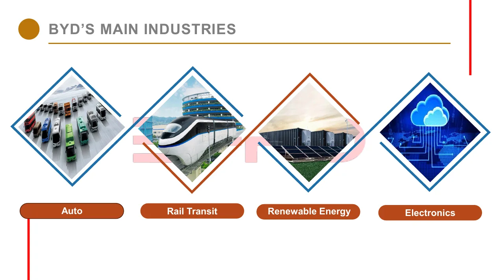
4 อุตสาหกรรมหลักของ BYD — ยานยนต์ · ขนส่งราง · พลังงานหมุนเวียน · อิเล็กทรอนิกส์ ที่มา: BYD Training — Company Introduction
Auto · ยานยนต์
รถยนต์ไฟฟ้า (BEV) และรถยนต์ปลั๊กอินไฮบริด (PHEV) ครอบคลุมทุก segment ตั้งแต่ compact ถึง luxury
Rail Transit · ขนส่งราง
รถไฟฟ้าโมโนเรล รถไฟฟ้าขนส่งมวลชน SkyRail — โครงสร้างพื้นฐานเมืองอัจฉริยะ
Renewable Energy · พลังงานหมุนเวียน
ระบบกักเก็บพลังงาน (Energy Storage Systems) สำหรับโรงไฟฟ้าพลังงานสะอาดและอุตสาหกรรม
Electronics · อิเล็กทรอนิกส์
ผลิตภัณฑ์ดิจิทัล, AI Robotics, Intelligent Driving, Medical Products — ผ่านบริษัท BYD Electronics
Full Industrial Chain — ห่วงโซ่อุตสาหกรรมแบบครบวงจร
BYD ควบคุม supply chain ทั้งหมดด้วยตัวเอง (Vertical Integration)
ทำไม Vertical Integration ถึงสำคัญ?
BYD ผลิตทุกอย่างตั้งแต่ชิป (IGBT, SiC, MCU) แบตเตอรี่ มอเตอร์ ตัวถัง ไปจนถึงระบบขับเคลื่อน — ทำให้ควบคุมคุณภาพ ต้นทุน และนวัตกรรมได้อย่างสมบูรณ์แบบ
FinDreams Battery
Battery · BMS · Battery Recycle
BYD Semiconductor
IGBT · SiC · MCU
FinDreams Powertrain
Motor · VCU · Motor Control · Transmission
FinDreams Technology
Chassis · Electronics
FinDreams Accuracy
Car Body · LED Lamps
Production Division
Vehicle Manufacturing
BYD Electronics
Digital Products · Robot · Intelligent Driving · Medical
เทคโนโลยียานยนต์ BYD
BYD Vehicle Technology — นวัตกรรมที่ทำให้ BYD แตกต่าง
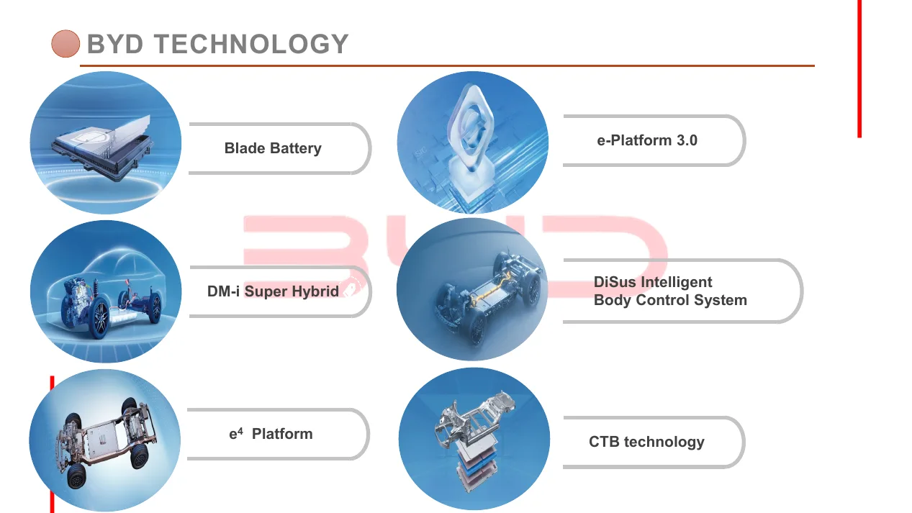
ภาพรวมเทคโนโลยีหลักที่ BYD พัฒนาเอง — แบตเตอรี่ มอเตอร์ และระบบส่งกำลังไฟฟ้า ที่มา: BYD Training — Company Introduction
Blade Battery · แบตเตอรี่ใบมีด
แบตเตอรี่ LFP (Lithium Iron Phosphate) ที่ออกแบบเป็นรูปทรงแบนยาวคล้ายใบมีด เพิ่มพื้นที่ใช้งานในแบตเตอรี่แพ็คได้มากขึ้น ปลอดภัยสูง ทนทาน และผ่านการทดสอบ Nail Penetration Test
DM-i Super Hybrid
ระบบซูเปอร์ไฮบริดที่ให้มอเตอร์ไฟฟ้าเป็นตัวขับเคลื่อนหลัก เครื่องยนต์ทำหน้าที่ปั่นไฟเท่านั้น ทำให้ประหยัดน้ำมันมากกว่ารถปกติถึง 50% และวิ่งระยะทางรวมได้มากกว่า 1,000 กม.
e-Platform 3.0
แพลตฟอร์มรถยนต์ไฟฟ้าบริสุทธิ์รุ่นที่ 3 รวม 8-in-1 Electric Powertrain ไว้ในชิ้นเดียว เพิ่มประสิทธิภาพและลดน้ำหนัก รองรับทั้ง FWD และ AWD
CTB Technology
Cell-To-Body: รวมแบตเตอรี่เข้าเป็นส่วนหนึ่งของโครงสร้างตัวถังรถ ทำให้แข็งแกร่งขึ้น พื้นที่ภายในกว้างขึ้น และ Center of Gravity ต่ำลงสำหรับการควบคุมที่ดีขึ้น
DiSus Intelligent Body Control
ระบบควบคุมช่วงล่างอัจฉริยะ ปรับความแข็งของโช้คอัพแบบ real-time ตามสภาพถนนและพฤติกรรมการขับขี่
e4 Platform
แพลตฟอร์มสำหรับรถยนต์ประสิทธิภาพสูง รองรับ 4 มอเตอร์ (4WD อิสระ) สำหรับแบรนด์ YANGWANG ระดับ Luxury
มาตรฐานระยะทางที่ควรรู้ (Range Standards)
NEDC — มาตรฐานยุโรปเก่า (ก่อน 1997) ค่าที่ได้มักสูงกว่าความเป็นจริง หลายยี่ห้อในไทยยังใช้อยู่WLTP — มาตรฐานใหม่ที่แม่นยำกว่า จำลองการขับขี่จริงในหลากหลายสภาพEPA — มาตรฐานสหรัฐอเมริกา ทดสอบใน Dyno ในห้องแล็บCLTC — มาตรฐานจีน ใกล้เคียง WLTP มากที่สุด
แบรนด์ในเครือ BYD Auto
BYD Auto Brand Family
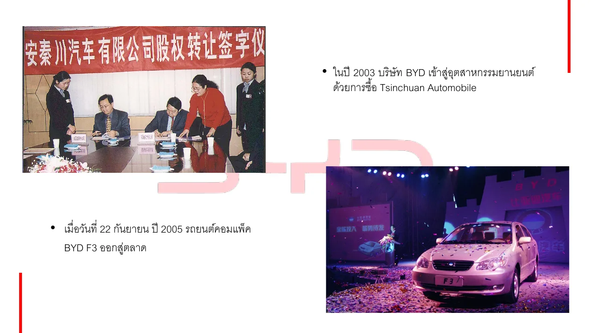
จุดเริ่มต้นสู่อุตสาหกรรมยานยนต์ — ปี 2003 BYD เข้าซื้อ Tsinchuan Automobile (ภาพซ้าย: พิธีลงนาม) และวันที่ 22 ก.ย. 2005 เปิดตัวรถรุ่นแรก BYD F3 สู่ตลาด (ภาพขวา) ที่มา: BYD Training — Company Introduction
โครงสร้างแบรนด์
BYD Group → BYD Auto → 5 แบรนด์ย่อย แต่ละแบรนด์มีกลุ่มเป้าหมายและ positioning ที่แตกต่างกัน
Dynasty · 王朝
กลุ่ม "ราชวงศ์จีน" — Han, Tang, Song, Qin, Yuan ระดับกลาง-บน
Ocean · 海洋
กลุ่ม "สัตว์ทะเล" — ATTO 3, Dolphin, Seal, Sea Lion ระดับกลาง ใช้ e-Platform 3.0
DENZA · 腾势
ร่วมทุนกับ Daimler ระดับ Premium SUV/MPV
YANGWANG · 仰望
Luxury Brand ระดับ Super Premium เปิดตัวปี 2023 ใช้ e4 Platform (4 มอเตอร์)
FANGCHENGBAO · 方程豹
Adventure/Off-road Brand เปิดตัวปี 2023 รถอเนกประสงค์สไตล์ผจญภัย
ข้อมูลการบำรุงรักษา
Maintenance Guidelines — ข้อมูลสำหรับพนักงานทั่วไป
รถ EV บำรุงรักษาน้อยกว่ารถน้ำมัน
ไม่มีน้ำมันเครื่อง ไม่ต้องเปลี่ยนน้ำมัน
ไม่มีหัวเทียน ไม่มีไส้กรองน้ำมัน
ระบบเบรกเสื่อมช้ากว่าเพราะใช้ Regenerative Braking
ชิ้นส่วนเคลื่อนที่น้อยกว่ามาก = โอกาสเสียน้อยกว่า
จุดรองรับในการยกรถ (Jacking Points)
ตรวจสอบให้แน่ใจว่าอุปกรณ์ยกไม่สัมผัสกับแบตเตอรี่ไฟฟ้าแรงสูง สายไฟ HV หรือส่วนประกอบ HV อื่นๆ
ใช้จุดรองรับทั้ง 4 จุดให้อยู่ในแนวเดียวกัน · จอดรถบนพื้นที่มั่นคงและเรียบ
ห้าม ยืนหรือเข้าใกล้ใต้ท้องรถขณะยก · ห้าม ใช้ตัวเรือนชุดแบตเตอรี่ HV เป็นจุดรับน้ำหนัก
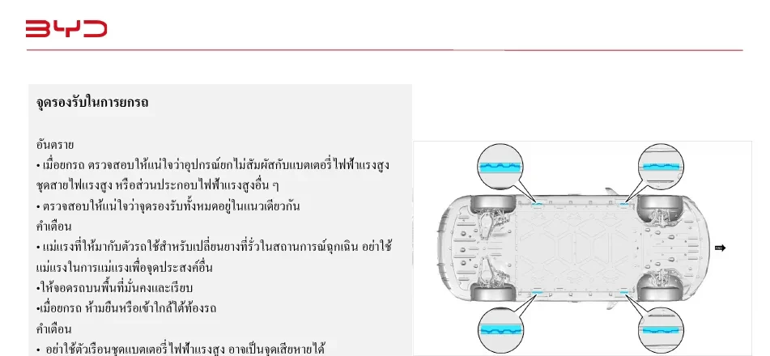
ตำแหน่งจุดรองรับ 4 จุดสำหรับการยกรถ BYD ที่มา: BYD Training — BYD Maintenance
ตารางการบำรุงรักษา (ภาพรวม)
Maintenance Schedule Overview
รายการ
5,000 กม.
10,000 กม.
20,000 กม.
40,000 กม.
ยาง (ตรวจสภาพ + แรงดัน)
น้ำมันเบรก (Brake Fluid)
ผ้าเบรก (Brake Pads)
น้ำกลั่นแบตเตอรี่ / น้ำระบายความร้อน
ไส้กรองเครื่องปรับอากาศ
น้ำยาระบบ Thermal Management
แบตเตอรี่ 12V (Low Voltage)
ตรวจสอบโดยซอฟต์แวร์ TIS
* ตารางนี้เป็นภาพรวมเพื่อความเข้าใจเบื้องต้น — สำหรับรายละเอียดสมบูรณ์ให้ดูจาก BYD Maintenance Guidelines อย่างเป็นทางการ
สิ่งที่พนักงานทุกคนควรรู้เกี่ยวกับการบำรุงรักษา EV
อย่าชาร์จจนเต็ม 100% ทุกครั้ง — ชาร์จถึง 80-90% ยืดอายุแบตเตอรี่ได้มากกว่าอย่าปล่อยแบตเตอรี่ต่ำกว่า 10% เป็นประจำลมยาง ควรตรวจทุกเดือน ค่าปกติ 36 psi (250 kPa)อย่าจอดในที่ร้อนจัดนานเกินไป — ความร้อนสูงกระทบอายุแบตเตอรี่DC Fast Charge ใช้บ้างได้ แต่ไม่ควรใช้ทุกวันเพราะสร้างความร้อนให้แบตเตอรี่
การชาร์จรถ BYD
EV Charging Guide — คู่มือการชาร์จรถไฟฟ้า
AC Charging (ชาร์จบ้าน)
Level 1: 220V/16A ≈ 3.3 kW — ชาร์จข้ามคืน 8-12 ชั่วโมงได้เต็มLevel 2: Wallbox 7.4 kW — ชาร์จเต็มใน 6-8 ชั่วโมง
DC Fast Charging (ชาร์จเร็ว)
ATTO 3: รองรับ DC สูงสุด 88 kWDOLPHIN EXT: รองรับ DC สูงสุด 60 kWSEAL: รองรับ DC สูงสุด 150 kW
ผลกระทบจากอุณหภูมิ
อากาศร้อน/เย็นจัดจะลดความสามารถในการชาร์จและระยะทาง — Thermal Management System ของ BYD จะทำงานอัตโนมัติเพื่อรักษาอุณหภูมิแบตเตอรี่ที่เหมาะสม
Regenerative Braking (การเบรกเพื่อผลิตไฟ)
เมื่อปล่อยคันเร่งหรือเหยียบเบรก มอเตอร์จะกลับทำงานเป็นเครื่องกำเนิดไฟฟ้า แปลงพลังงานกลเป็นพลังงานไฟฟ้าชาร์จกลับเข้าแบตเตอรี่ ผู้ขับขี่สามารถปรับระดับ Regen ได้ในรถ
BYD Thailand Branch
สาขาประเทศไทย
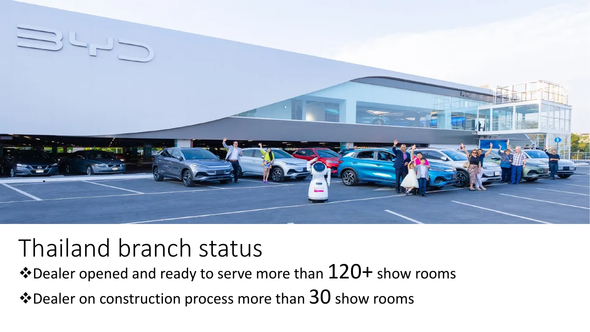
การขยายสาขาและโชว์รูมของ BYD ในประเทศไทยภายใต้ Rever Automotive ที่มา: BYD Training — Company Introduction
30+
Showrooms กำลังก่อสร้าง
ทำไม BYD ถึงมาไทย?
ไทยเป็นตลาด EV ที่เติบโตเร็วที่สุดใน ASEAN
รัฐบาลไทยสนับสนุน EV ด้วยมาตรการ EV 3.0 และ 3.5
BYD วางแผนสร้างโรงงานผลิตในประเทศไทย เพื่อรองรับตลาด ASEAN
ไทยเป็น Hub การผลิตยานยนต์อันดับต้นๆ ของอาเซียน
รุ่นที่จำหน่ายในไทย
รุ่น ประเภท ราคาเริ่มต้น จุดเด่น
ATTO 3 Compact SUV
ปรึกษาตัวแทน
Dragon Face 3.0, ระยะ 480 กม., ที่นั่ง 5 คน
DOLPHIN City Hatchback
ปรึกษาตัวแทน
ราคาคุ้มค่า, คันเกียร์โนบ, ใช้ในเมืองเหมาะมาก
SEAL Sport Sedan
ปรึกษาตัวแทน
CTB Technology, AWD, 0-100 ใน 3.8 วิ
คำศัพท์ที่ควรรู้
EV Glossary — คำศัพท์ด้านรถยนต์ไฟฟ้า
BEV
Battery Electric Vehicle — รถยนต์ไฟฟ้าบริสุทธิ์ ใช้แบตเตอรี่อย่างเดียว ไม่มีเครื่องยนต์สันดาป เช่น ATTO 3, Dolphin, Seal
PHEV
Plug-in Hybrid Electric Vehicle — รถไฮบริดที่ชาร์จไฟจากภายนอกได้ มีทั้งมอเตอร์ไฟฟ้าและเครื่องยนต์สันดาป
NEV
New Energy Vehicle — รถยนต์พลังงานใหม่ รวมทั้ง BEV และ PHEV
Blade Battery
แบตเตอรี่ LFP รูปทรงแบนยาวของ BYD — ปลอดภัย ทนทาน ผ่านทดสอบ Nail Penetration โดยไม่ติดไฟ
kWh
Kilowatt-hour — หน่วยความจุแบตเตอรี่ เหมือน "ลิตร" ของถังน้ำมัน ยิ่งมาก = วิ่งได้ไกลกว่า
PMSM
Permanent Magnet Synchronous Motor — มอเตอร์แม่เหล็กถาวรแบบซิงโครนัส ประสิทธิภาพสูง ที่ BYD ใช้ใน ATTO 3
Regen Braking
Regenerative Braking — การเบรกเพื่อผลิตไฟฟ้า มอเตอร์กลับทิศทำหน้าที่เป็น generator ชาร์จแบตเตอรี่กลับ
CTB
Cell-To-Body — เทคโนโลยีรวมเซลล์แบตเตอรี่เข้ากับโครงสร้างตัวถัง เพิ่มความแข็งแกร่ง ลด CoG
DM-i
Dual Mode Intelligence — ระบบ Super Hybrid ของ BYD ที่มอเตอร์ไฟฟ้าเป็นตัวหลัก เครื่องยนต์ช่วยปั่นไฟ ประหยัดน้ำมันมาก
IGBT
Insulated-Gate Bipolar Transistor — อุปกรณ์สารกึ่งตัวนำสำคัญในระบบ Inverter ของรถ EV BYD ผลิตเองผ่าน BYD Semiconductor
SiC
Silicon Carbide — วัสดุสารกึ่งตัวนำรุ่นใหม่ที่ทนความร้อนสูง ลดการสูญเสียพลังงานในระบบ High Voltage
BMS
Battery Management System — ระบบคอมพิวเตอร์ที่ควบคุมการชาร์จ/คาย การอุณหภูมิ และความปลอดภัยของแบตเตอรี่
NEDC / WLTP
มาตรฐานวัดระยะทาง — NEDC เก่า ตัวเลขสูงกว่าจริง | WLTP ใหม่กว่า แม่นยำกว่า ใกล้เคียงการขับจริง
FWD / AWD / RWD
Front-Wheel Drive (ขับหน้า) / All-Wheel Drive (ขับ 4 ล้อ) / Rear-Wheel Drive (ขับหลัง)
TIS
Technical Information System — ระบบข้อมูลเทคนิคของ BYD สำหรับช่างและศูนย์บริการ ใช้วินิจฉัยข้อผิดพลาดและดูข้อมูลการซ่อมบำรุง
แหล่งข้อมูลเพิ่มเติม
BYD TIS System — ระบบข้อมูลเทคนิคสำหรับช่าง (ดูคู่มือ 70_BYD_TIS_System.pdf)
BYD Maintenance Guidelines — ตารางบำรุงรักษาฉบับเต็ม (ดูคู่มือ 60_BYD_Maintenance.pdf)
Fault Feedback — การรายงาน error codes (ดูคู่มือ 80_Introduction_of_Fault_feedback.pdf)
ระบบแชสซีส์ & โครงสร้างตัวถัง
Chassis System & Body Structure
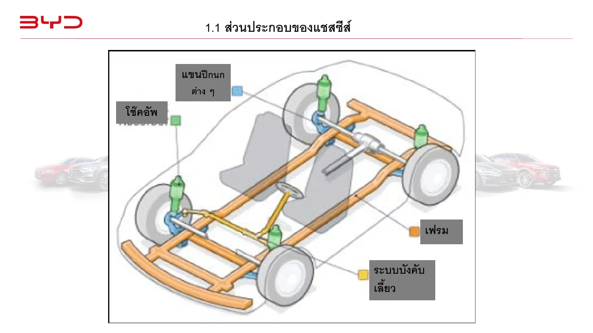
ส่วนประกอบหลักของแชสซีส์ — ปีกนก (Control Arms), โช้คอัพ, สปริง, ระบบบังคับเลี้ยว และเฟรมรองรับ ที่มา: BYD Training — Chassis System
ชิ้นส่วนหลักของแชสซีส์
เฟรม (Frame) โครงสร้างหลักรับน้ำหนักทั้งหมดของรถ
โช้คอัพ (Shock Absorber) ดูดซับแรงกระแทกจากพื้นถนน
แขนปีกนก (Control Arms) ยึดล้อกับตัวถัง ควบคุมการเคลื่อนที่ของล้อ
ระบบบังคับเลี้ยว (Steering) C-EPAS และ R-EPAS — พวงมาลัยพาวเวอร์ไฟฟ้า
ชนิดของแชสซีส์
Ladder Frame (Body-On-Frame)
ข้อดี: ผลิตง่าย รับแรงกระแทกได้สูง เหมาะกับยานพาหนะหนัก
ข้อเสีย: หนัก ความยืดหยุ่นต่ำ R&D สูง (เฟรมปิคอัพ = ~40% ราคารถ)
BYD ใช้ใน: Yangwang U8, BYD Pickup Truck
Monocoque (Unibody)
ข้อดี: ยืดหยุ่นบิดตัวดีที่สุด ปลอดภัยสูง ซ่อมง่าย
ข้อเสีย: ต้นทุนผลิตสูงในปริมาณน้อย
BYD ใช้ใน: ATTO 3, DOLPHIN, SEAL, E6, T3, Song Max
Modular Platform — แพลตฟอร์มโมดูลาร์
Modular Platform คืออะไร?
แพลตฟอร์มที่รถหลายรุ่นใช้โครงสร้างพื้นฐานเดียวกัน แต่ปรับมิติ (ความยาว กว้าง ระยะฐานล้อ) ได้ตามรุ่น ประหยัดต้นทุนออกแบบและผลิต โดยสมรรถนะของแชสซีส์ไม่ลดลง
BYD e-Platform 3.0
"Born EV Platform" ออกแบบสำหรับ EV โดยเฉพาะ แบตเตอรี่วางราบพื้น CG ต่ำ ความปลอดภัยสูง ใช้ใน ATTO 3, DOLPHIN, SEAL
Toyota TNGA
Toyota New Global Architecture รองรับทั้ง ICE, Hybrid, EV ใช้ใน Camry, Corolla, RAV4
Subaru Global Platform
แพลตฟอร์มรุ่นใหม่เน้นความปลอดภัยและ Fun-to-Drive ใช้ทั่วทุกรุ่น Subaru
Mercedes-Benz EVA / MMA
EVA = EV ขนาดใหญ่ (EQS, EQE), MMA = Compact & Mid-size EV — แพลตฟอร์ม EV โดยเฉพาะ
Honda Architecture
3 โมดูล: Engine Room + Cockpit + Rear Floor — Layout integration + Component commonization
E-Platform 3.0 + CTB Technology
Cell-To-Body (CTB) รวมแบตเตอรี่เป็นส่วนหนึ่งของโครงสร้างตัวถัง พัฒนาจาก Sandwich design เพิ่มความแข็งแกร่งและความปลอดภัย ใช้ใน SEAL
ชั้น CTB (จากบนลงล่าง) ตัวถังรถ → Integrated Battery Upper Cover → Binder → Cell → Binder → Tray ป้องกันด้านล่าง
ความแข็งแกร่งตัวถัง เหล็กคุณสมบัติสูง 85%, Ultra-high-strength steel 55%, ความต้านทานแรงดึง >1,500 MPa สำหรับโครงสร้างหลัก
Square Annular Structure โครงสร้างแบบวงแหวนสี่เหลี่ยม เพิ่มจุดเชื่อม (Weld points) เพิ่ม Torsional Rigidity อย่างมีนัยสำคัญ
ความปลอดภัยของโครงสร้าง
Crumple Zones — ช่วงยุบตัว
ห้องเครื่องและห้องสัมภาระท้ายออกแบบให้ยุบตัวดูดซับพลังงานจากการชน ควบคุมขนาดแรงกระแทกที่ส่งถึงผู้โดยสาร (แนวคิดจาก Mercedes-Benz)
Safety Cage — คอกนิรภัย
ห้องโดยสารต้านการเสียรูป ป้องกันห้องโดยสารยังคงสภาพเดิม แม้เกิดการชน ลดบาดเจ็บและเสียชีวิต
Euro NCAP 5 Stars (2023) — ทุกรุ่น
BYD ATTO 3, DOLPHIN และ SEAL ผ่านการทดสอบ Euro NCAP 2023 ได้คะแนนระดับ 5 ดาว — มาตรฐานความปลอดภัยสูงสุดของยุโรป รวมถึงทดสอบชน Moderate Overlap Offset (40–50% ด้านหน้า ที่ความเร็ว 60–70 กม./ชม.) โดยโครงสร้างห้องโดยสารยังคงสภาพเดิม
Blade Battery — แบตเตอรี่ BYD เชิงลึก
Blade Battery Technology — เทคโนโลยีแบตเตอรี่ที่เปลี่ยนวงการ (เปิดตัว 2020)
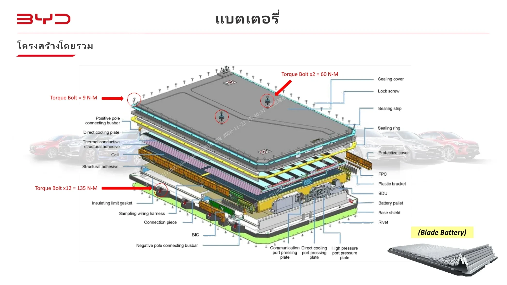
โครงสร้างโดยรวมของ Blade Battery (แบบแยกชิ้น) — เซลล์ LFP, Busbar, FPC, BIC, BDU, ฝาครอบ พร้อมค่าแรงขัน (Torque): Bolt 9 N·m, ×2 = 60 N·m, ×12 = 135 N·m ที่มา: BYD Training — High Voltage Electrical System
Blade Battery คืออะไร?
แบตเตอรี่รูปทรงแบนยาว (แบบใบมีด) ที่ BYD พัฒนาขึ้นเอง ใช้เคมีแบตเตอรี่ LFP (Lithium Iron Phosphate) — ไม่มีโคบอลต์ ปลอดภัยกว่า อายุการใช้งานยาวนานกว่า และผ่านการทดสอบ Nail Penetration Test (เจาะตะปู) โดยไม่ติดไฟ ไม่ระเบิด
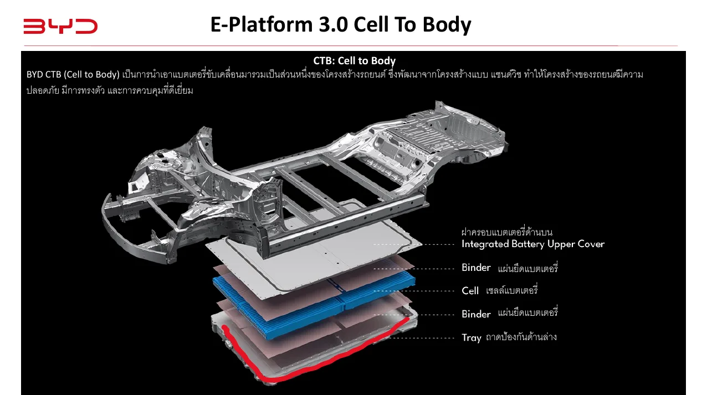
CTB — Cell To Body: รวม Blade Battery เป็นส่วนหนึ่งของโครงสร้างตัวถัง (e-Platform 3.0) เพิ่มความแข็งแรงและพื้นที่ใช้สอย ที่มา: BYD Training — Chassis
สเปกแบตเตอรี่แต่ละรุ่น
รุ่น / ประเภท จำนวนเซลล์ ความจุ/เซลล์ (Ah) ความจุรวม (kWh) แรงดันรวม (VDC) ระยะ NEDC (กม.)
ATTO 3 · Standard104 150 49.92 332.8 410 ATTO 3 · Extended126 150 60.48 403.2 480 DOLPHIN · Standard104 135 44.92 332.8 410 DOLPHIN · Extended126 150 60.48 403.2 490 SEAL · Dynamic128 150 61.44 409.6 510 SEAL · Premium172 150 82.56 550.4 650 SEAL · Performance172 150 82.56 550.4 580
* ข้อมูลจากคอร์สอบรม BYD (High Voltage) ทุกรุ่นใช้เคมี LFP Blade — หมายเหตุ: ฉลากแบตของ ATTO 3 บางล็อตระบุเป็น Li-ion ส่วน Dolphin/Seal ระบุ LFP
ระบบจัดการแบตเตอรี่ (BMS) — คำย่อสำคัญ
BMS Battery Management System — ระบบคอมพิวเตอร์หลักควบคุมการชาร์จ/คาย อุณหภูมิ และความปลอดภัยของแบตเตอรี่
BIC Battery Information Collector — หน่วยวัดแรงดันและอุณหภูมิเซลล์แบตเตอรี่แต่ละก้อน ส่งข้อมูลไปยัง BMS
HVSU High Voltage Supervisor Unit — ชุดควบคุมไฟฟ้าแรงสูง ตรวจ Insulation Monitoring ควบคุม Contactor
BASU Battery Execution And Sampling Unit — ระบบควบคุมและจัดการไฟฟ้าของแบตเตอรี่ (Slave BMS)
SOC State of Charge — % ของพลังงานที่เหลืออยู่ในแบตเตอรี่ เหมือน "เข็มน้ำมัน"
SOH State of Health — สถานะสุขภาพ/ความเสื่อมของแบตเตอรี่ 100% = ใหม่, ต่ำกว่า = เสื่อมสภาพ
LFP vs NMC — เปรียบเทียบประเภทแบตเตอรี่
หัวข้อ LFP — Blade Battery (BYD) NMC (แบรนด์อื่น) ความปลอดภัย สูงมาก — ไม่ติดไฟเมื่อถูกเจาะ ติดไฟได้ที่อุณหภูมิสูง อายุการใช้งาน 3,000+ รอบชาร์จ 1,000–2,000 รอบชาร์จ Energy Density ปานกลาง สูงกว่า (วิ่งได้ไกลกว่า/น้ำหนัก) ส่วนประกอบ ไม่ใช้โคบอลต์ — ราคาถูกกว่า ใช้ Ni + Mn + Co (โคบอลต์แพง) ประสิทธิภาพในร้อน ดีกว่าในสภาพอากาศร้อน Range ลดลงมากในความร้อน ตัวอย่างแบรนด์ BYD (Blade), Tesla Model 3 STD, MG Tesla Model 3/Y LR, BMW iX, Audi e-tron
ระบบส่งกำลังไฟฟ้า 8in1
8-in-1 Electric Powertrain — Mass Production รายแรกของโลก โดย BYD
8in1 คืออะไร?
BYD รวม 8 ระบบสำคัญเข้าเป็น Module เดียว ลดพื้นที่ติดตั้ง ลดน้ำหนัก ลดต้นทุน เพิ่มประสิทธิภาพ ใช้มอเตอร์แบบ Flat Wire — การสูญเสียต่ำ ระบายความร้อนดี เกียร์มีประสิทธิภาพการส่งผ่านพลังงาน 97.6%
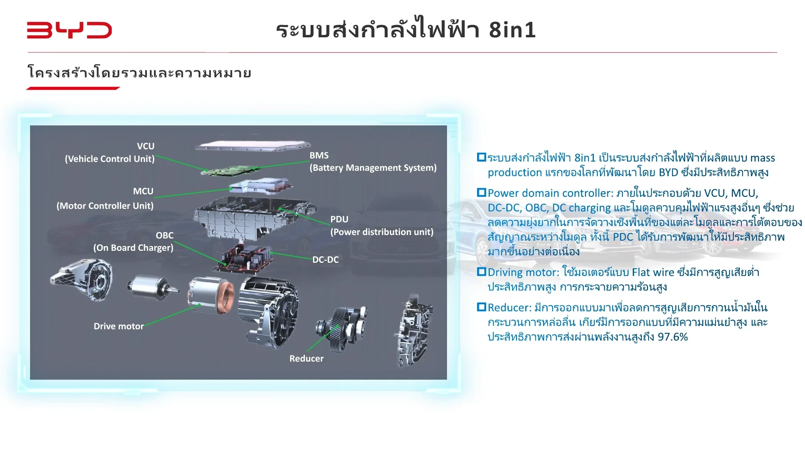
โครงสร้างโดยรวมของระบบ 8in1 — VCU, BMS, MCU, PDU, OBC, DC-DC, Drive Motor และ Reducer รวมในโมดูลเดียว ที่มา: BYD Training — High Voltage Electrical System
Power Domain Controller (VBM)
หัวใจของ 8in1 คือ Power Domain Controller (PDC/VBM) ที่รวม VCU, MCU, DC-DC, OBC, DC charging และโมดูลควบคุม HV อื่นๆ เข้าด้วยกัน — ลดความยุ่งยากในการจัดวางเชิงพื้นที่ และลดการโต้ตอบของสัญญาณระหว่างโมดูล ทำให้ระบบเล็กลง เบาลง และมีประสิทธิภาพสูงขึ้น
8 ส่วนประกอบของ 8in1
# ชื่อ หน้าที่ 1 OBC — On-Board Charger แปลงไฟ AC จากหัวชาร์จ → DC แรงดันสูง ชาร์จแบตเตอรี่ / รองรับ 6.6 kW Bidirectional (V2L/V2H — จ่ายไฟให้อุปกรณ์ภายนอก, ไม่ใช่ V2G) 2 PDU — Power Distribution Unit เชื่อมต่อโครงข่ายไฟฟ้าแรงสูง จ่ายไฟจากแบตเตอรี่ไปยังอุปกรณ์ต่างๆ ในรถ 3 BMS — Battery Management System ตรวจเช็คภายในวงจรไฟฟ้าแรงสูง ยืนยันการเชื่อมต่อชาร์จ DC สื่อสารกับ BASU 4 DC-DC Converter แปลงไฟ DC แรงสูง (~400V) → DC แรงต่ำ (13.7V) สำหรับอุปกรณ์ 12V ในรถ 5 VCU — Vehicle Control Unit คอมพิวเตอร์กลาง คำนวณพลังงาน Real-time ประมวลผล CAN Bus สั่งการทุกระบบ 6 MCU — Motor Controller Unit ควบคุมพลังงานระหว่างแบตเตอรี่กับมอเตอร์ แปลง DC → AC 3 เฟสสำหรับมอเตอร์ 7 Drive Motor (PMSM Flat Wire) มอเตอร์ขับเคลื่อนแบบ Flat Wire ประสิทธิภาพสูง แปลงไฟฟ้า → พลังงานกล (และ Regen กลับ) 8 Reducer — Single-Speed Transmission ลดความเร็วและเพิ่มแรงบิดของมอเตอร์ ประสิทธิภาพการส่งผ่านพลังงาน 97.6%
ระบบชาร์จ (จาก 8in1)
AC Charging Port
1 Phase 200–240 VAC
DC Fast Charging Port
DC 350–800 VDC
SEAL — Dual Motor
RWD: 8in1 (มอเตอร์หลัง)AWD: 8in1 (หลัง) + 3in1 (หน้า)
ข้อควรทราบ High Voltage Safety (สำหรับพนักงานทั่วไป)
แบตเตอรี่ BYD อยู่ใต้พื้นรถ — ห้ามแตะในกรณีเกิดอุบัติเหตุ
แรงดันระบบ HV: ATTO 3 / Dolphin EXT = 403.2V , Seal = 550.4V
สัญลักษณ์ ⚡ สีเหลือง = อุปกรณ์ไฟฟ้าแรงสูง อย่าแตะเด็ดขาด
ฉุกเฉิน: กด Power โดยไม่เหยียบเบรก → ระบบดับ HV / ถอด Key ออกไปห่าง ≥3 เมตร
ช่างที่ผ่านการอบรมเท่านั้นที่ดำเนินการกับระบบ High Voltage ได้
เปรียบเทียบการส่งกำลัง — BYD 8in1 vs รถ ICE
การส่งกำลังของรถ EV และรถสันดาปภายใน (ICE) มีหลักการต่างกันอย่างสิ้นเชิง ตั้งแต่แหล่งพลังงาน จำนวนชิ้นส่วน วิธีการส่งแรงบิด ไปจนถึงประสิทธิภาพรวม
ICE — Internal Combustion Engine
Engine
~35% eff
Gearbox
5–8 speeds
Fuel Tank
← CO₂ / Exhaust
~2,000 ชิ้นส่วน
Well-to-Wheel ~29%
BYD 8in1 — Electric Vehicle
8in1
Unit
ไม่มีไอเสีย
8in1 Unit
MCU+Motor+Reducer
Blade Battery
LFP · CTB · ใต้พื้นรถ
~20 ชิ้นส่วน
Well-to-Wheel ~91%
โครงสร้างภายในรถ ICE (เครื่องยนต์ขนาดใหญ่ + Gearbox + ท่อไอเสีย) เทียบกับ BYD 8in1 EV (8in1 Unit กะทัดรัด + Blade Battery แบนใต้พื้น ไม่มีไอเสีย)
ICE Powertrain
Fuel
Tank
Engine
eff ~35%
Clutch /
Torque Conv.
Gearbox
5–8 speeds
Drive
Shaft
Differential
eff ~98%
Wheels
kinetic energy
↑ ความร้อนสูญเปล่า ~65%
รวม Well-to-Wheel
~25–30%
BYD 8in1 EV Powertrain
Blade
Battery
MCU
DC→AC 3φ
PMSM
eff ~97%
Reducer
97.6% / 1-speed
Differential
eff ~98%
Wheels
kinetic energy
Regenerative Braking (ดูดพลังงานกลับ)
รวม Well-to-Wheel
~77–85%
(รวม Grid)
ICE: ~2,000 ชิ้น
EV: ~20 ชิ้น
Torque vs RPM
RPM →
Torque →
ICE (peak mid-RPM)
EV (instant)
EV — Max torque จาก 0 RPM
ICE — Peak ที่ ~4,000 RPM
EV ไม่ต้องเปลี่ยนเกียร์ตลอดช่วง RPM
ห่วงโซ่การส่งกำลัง
ICE: 6 ขั้นตอน
EV: 4 ขั้นตอน
เปรียบเทียบ Power Flow: ICE (เส้นทองคว่ำ) vs BYD 8in1 EV (เส้นเขียว) — แสดงชิ้นส่วนในห่วงโซ่การส่งกำลัง, ทิศทาง Regenerative Braking และ Torque curve ที่แตกต่างกัน
หัวข้อเปรียบเทียบ
แหล่งพลังงาน น้ำมันเชื้อเพลิง (เผาไหม้)
แบตเตอรี่ Blade LFP
ห่วงโซ่การส่งกำลัง Engine → Clutch → Gearbox → Driveshaft → Diff → Wheel
Battery → MCU → Motor → Reducer → Diff → Wheel
จำนวนชิ้นส่วนเคลื่อนที่ ~2,000 ชิ้น
~20 ชิ้น
เกียร์ Multi-speed (5–8 speeds) — ต้องเปลี่ยนเกียร์
Single-speed Reducer (ไม่มีเกียร์)
แรงบิดสูงสุด Peak ที่ ~3,500–5,000 RPM — ต้องรอรอบ
Max torque ตั้งแต่ 0 RPM ทันที
ประสิทธิภาพ Motor/Engine ~35–40% (ความร้อนสูญเปล่า ~60%)
~94–97% (PMSM Flat Wire)
ประสิทธิภาพ Transmission ~88–92% (Gearbox + Driveshaft)
97.6% (Single-speed Reducer)
ประสิทธิภาพรวม (Wheel) ~25–30% (Well-to-Wheel)
~77–85% (Well-to-Wheel รวม Grid)
Regenerative Braking ไม่มี — พลังงานเบรกสูญเป็นความร้อน
มี — ดูดพลังงานกลับ 15–25% ของพลังงานที่ใช้
การบำรุงรักษา เปลี่ยนน้ำมันเครื่อง, กรองอากาศ, หัวเทียน, สายพาน ฯลฯ
แทบไม่มี — ไม่มีน้ำมันเครื่อง, ไม่มีสายพาน, ไม่มีหัวเทียน
Thermal Management หม้อน้ำ + น้ำมันเครื่อง + ระบบไอเสีย
Thermal Management System (TMS) ดูแลแบตและ Motor
ห่วงโซ่ประสิทธิภาพ (Energy Loss Chain)
Fuel (100%) →
Engine heat loss: −62%
→ Mechanical output (~38%) →
Clutch/TC loss: −3%
Gearbox loss: −4%
Driveshaft/Diff loss: −2%
→ Wheels ≈ 29%
8in1 EV — Battery to Wheel
Battery (100%) →
MCU inverter loss: −2%
→ Electrical to Motor (~98%) →
Motor (PMSM) loss: −3%
Reducer loss: −2.4%
Diff loss: −2%
→ Wheels ≈ 91%
ทำไม 8in1 ถึงมีประสิทธิภาพสูงกว่า ICE มาก?
ไม่มีการเผาไหม้ — ICE เสียพลังงานเป็นความร้อน ~62% ก่อนจะได้แรงงานเชิงกลไม่มีเกียร์หลายสปีด — มอเตอร์ไฟฟ้าให้แรงบิดสูงสม่ำเสมอตลอดช่วง RPM ใช้ Reducer ชิ้นเดียวแทนRegenerative Braking — พลังงานเบรกที่ ICE ทิ้งทั้งหมด ถูกดูดกลับมาชาร์จแบตเตอรี่จำนวนชิ้นส่วนน้อยกว่า 100 เท่า — friction losses สะสมน้อยกว่ามากFlat Wire PMSM — ขดลวดแบน resistance ต่ำ ประสิทธิภาพสูงกว่ามอเตอร์ทั่วไป
จำลองระบบส่งกำลัง — Interactive Simulation
ปรับ Sliders เพื่อดูการทำงานแบบ Real-time · Power Flow · Operating Region · Traction Force
BLADE
BATTERY
SOC: 80%
400 V
— kW
— A
DISCHARGE
MCU
Inverter
DC → 3ϕ AC
f = — Hz
η = 97%
— kW
PMSM MOTOR
Flat Wire · 150 kW / 310 Nm
Constant Torque
— RPM
— Nm
— kW (mech)
η = —%
T_max = 310 Nm
REDUCER
Single-Speed
i ≈ 9 : 1
η = 97.6%
T_whl = — Nm
— RPM → wheel
WHEEL
215/55 R17
F = — N
a = — m/s²
v = — km/h
— g
ROAD / ASPHALT
T-n Curve
RPM →
Nm ↑
Torque
Power
DC
3ϕ AC
shaft
axle
BYD 8in1 Powertrain — Power Flow Simulation
① Battery (DC)
DC current
3ϕ AC (MCU→Motor)
mechanical shaft
regen return
● = operating point on T-n curve
Region: CT
Motor RPM
2,484
CT Region
Torque
186 Nm
motor output
F_traction
4,890 N
at tire contact
P_battery
32 kW
discharge
สถานะ: กำลังคำนวณ...
Engineering Deep Dive — สำหรับทีมเทคนิค
PMSM Motor Characteristics · Gear Ratio Analysis · Flat Wire Winding · Regen Braking Strategy
① PMSM Torque-Speed Characteristic
มอเตอร์ PMSM มี 2 ช่วงการทำงาน: Constant Torque ตั้งแต่หยุดนิ่งถึง Base Speed และ Field Weakening (Constant Power) ที่ความเร็วสูงกว่า — นี่คือเหตุผลที่ EV ไม่ต้องเปลี่ยนเกียร์และได้แรงดึงทันที
Constant
Torque
Field Weakening
(Constant Power)
Base Speed
~4,620 RPM
100
200
300
310
Torque (Nm)
0
4k
8k
12k
14k
Motor Speed (RPM)
150 kW (Constant Power)
310 Nm @ 0–4,620 RPM
Torque
Power
รูป: Torque-Speed curve ของ PMSM 150 kW / 310 Nm (BYD ATTO 3) — Base speed ≈4,620 RPM คำนวณจาก ω=P/T
สูตรคำนวณ Base Speed
ω = P / T = 150,000 W ÷ 310 Nm = 483.9 rad/s
n = ω × 60 / (2π) = 483.9 × 60 / 6.283 ≈ 4,620 RPM
เหนือ Base Speed มอเตอร์ใช้ Field Weakening : ลดกระแสสนามแม่เหล็ก (d-axis current) เพื่อให้หมุนเร็วขึ้นโดยแรงดัน inverter ไม่เกิน limit — แรงบิดลดลงตาม T = P/ω แต่กำลังงานยังคงที่
② Reducer — การส่งกำลังจากมอเตอร์สู่ล้อ
BYD ใช้ Single-Speed Reducer (เกียร์ทดรอบเดียว) แทนเกียร์หลายสปีด มอเตอร์หมุนเร็ว → Reducer ทดความเร็วลง + แรงบิดขึ้น → ล้อ
สูตร
Twheel = Tmotor × i × ηtraction = Twheel / rtire
i = gear ratio · η = reducer efficiency · r = tire radius
ตัวอย่าง — ATTO 3 (ประมาณ)
i ≈ 9 : 1 (BYD ไม่เปิดเผยตัวเลขแน่ชัด) wheel = 310 × 9 × 0.976 ≈ 2,720 Nm 8,140 N (8.1 kN)
ทำไม Single-Speed ถึงพอ?
มอเตอร์ PMSM ให้ Peak Torque ตั้งแต่ 0 RPM — ไม่ต้องพึ่ง gear ratio เพื่อสร้างแรงบิดเหมือน ICE
Field Weakening ช่วยให้มอเตอร์ทำงานได้ช่วงความเร็วกว้าง (Constant Power) โดยไม่ต้องเปลี่ยนเกียร์
ลด mechanical complexity → ลดน้ำหนัก ลด friction loss และเพิ่มความน่าเชื่อถือ
③ Flat Wire PMSM — เปรียบเทียบการพันขดลวด
BYD ใช้ขดลวดแบน (Flat Wire / Hair-Pin Winding) แทนลวดกลมทั่วไป — เพิ่ม Slot Fill Factor และลด winding resistance
Slot Cross-Section: Round Wire vs Flat Wire
Round Wire (Traditional)
Fill Factor ~40%
→
Flat Wire / Hair-Pin (BYD 6-layer)
Fill Factor ~60%+
BYD ใช้ 6-layer Flat Wire Hairpin Winding — ลด void/air gap ใน slot ทำให้มี copper มากขึ้น resistance ต่ำลง และระบายความร้อนได้ดีกว่า
Fill Factor สูงขึ้น
Round ~40% → Flat ~60%+ (เพิ่ม ~50%) ทองแดงใน slot มากขึ้น = flux ดีขึ้น
Resistance ต่ำลง
copper cross-section ใหญ่ขึ้น → R ต่ำ → I²R loss ลด → ประสิทธิภาพสูงขึ้นและความร้อนน้อยลง
ระบายความร้อนดีกว่า
ลวดแบนสัมผัสผนัง slot มากกว่า → heat path สั้น → ทนแรงดันสูงต่อเนื่องได้ดีกว่า
④ Regenerative Braking — VCU Decision Logic
VCU ตัดสินใจแบบ Real-time ว่าจะใช้ Regen (มอเตอร์กลายเป็น Generator ชาร์จแบตฯ) หรือ Friction Brake หรือ Blended โดยพิจารณาจาก 4 เงื่อนไขหลัก
คนขับเหยียบเบรก
ความเร็ว
< 10 km/h?
ใช่
Friction Brake
ความเร็วต่ำเกินไป
ไม่
SOC ≥ 95%?
(แบตเกือบเต็ม)
ใช่
Friction Brake
ไม่สามารถชาร์จได้
ไม่
ABS active?
(ล้อล็อก)
ใช่
Friction Dominant
ความปลอดภัยก่อน
ไม่
แรงเบรกสูง?
(> 0.3g)
ใช่
Blended Braking
Regen + Friction
ไม่
Regen Only
ชาร์จแบตฯ อย่างเดียว
VCU Decision Logic สำหรับ Regenerative Braking — ตัดสินใจ Real-time ทุก 10 ms ผ่าน CAN Bus
ทำไมไม่ Regen ตลอดเวลา?
ความปลอดภัย: Regen torque ไม่สม่ำเสมอเท่า Hydraulic — ถ้า ABS ต้องการควบคุมแต่ละล้อแบบละเอียด Friction ทำได้ดีกว่าSOC limit: Li-ion ไม่สามารถรับชาร์จกระแสสูงเมื่อเต็มมาก (overvoltage risk → BMS ตัดก่อน)ความเร็วต่ำ: มอเตอร์ PMSM มี back-EMF ต่ำมากที่ความเร็วต่ำ กำลังที่ Regen ได้ไม่คุ้มกับ complexityBrake feel: Blended ช่วยให้ผู้โดยสารไม่รู้สึกถึงการเปลี่ยนระดับ deceleration อย่างกระตุก
DM-i Super Hybrid Powertrain — โหมดที่ 3
DM-i (Dual Mode intelligent) คือระบบ Plug-in Hybrid ของ BYD ที่ออกแบบให้ มอเตอร์ไฟฟ้าเป็นตัวหลักในการขับเคลื่อน เครื่องยนต์ Atkinson 1.5L ทำหน้าที่หลักในการ ปั่นไฟ ไม่ใช่ขับล้อโดยตรง — ต่างจาก Traditional Hybrid (Toyota HEV) ที่เครื่องยนต์ยังเป็นตัวหลัก
DM-i — 3 โหมดการส่งกำลัง
ไฟฟ้า (Electric)
กล (Mechanical)
ผสม
Battery
Engine
Generator
MCU+Motor
Reducer
Wheels
① EV Mode
Battery > 20% / เมืองปกติ
Blade Bat.
Engine OFF
Gen. OFF
MCU+Motor
Reducer
Wheels
↩ Regen OK
eff ~91%
② Series Hybrid Mode (EV-like)
Battery ต่ำ / เมืองหนาแน่น — Engine ปั่นไฟ → Motor ขับ
Battery
Atkinson
1.5L ~43% eff
Generator
MCU+Motor
Reducer
Wheels
eff ~70–75%
③ Parallel Mode (Engine + Motor)
ทางด่วน / Battery ต่ำมาก — Engine ขับล้อโดยตรง + Motor เสริม
Battery
Engine
(direct drive)
Clutch/Lock
Motor (assist)
Output
Wheels
eff ~80–85%
VCU เลือกโหมดอัตโนมัติ ตามสถานการณ์
① EV Mode
Battery > 20%
② Series Hybrid
Battery ต่ำ / เมืองหนาแน่น
③ Parallel
ทางด่วน / Battery ต่ำมาก
DM-i 3 โหมดการส่งกำลัง: ① EV Mode (Battery→Motor), ② Series Hybrid (Engine ปั่นไฟ→Motor ขับ), ③ Parallel (Engine+Motor ขับพร้อมกัน) — VCU ตัดสินใจอัตโนมัติ
ตารางเปรียบเทียบ 3 ระบบ
หัวข้อ
พลังงานหลัก น้ำมัน 100%
ไฟฟ้า + น้ำมัน (สำรอง)
ไฟฟ้า 100%
ตัวขับเคลื่อนหลัก เครื่องยนต์สันดาป
มอเตอร์ไฟฟ้า (Engine ช่วยปั่นไฟ)
มอเตอร์ไฟฟ้า PMSM
เกียร์ 5–8 speeds
Single-speed + Clutch lock
Single-speed Reducer
ระยะวิ่ง EV 0 กม.
80–150 กม. (SEAL 5 DM-i: 150 กม.)
400–700 กม. (ขึ้นกับรุ่น)
ระยะวิ่งรวม 600–800 กม.
>1,000 กม. (EV+น้ำมัน)
400–700 กม. (ต้องชาร์จ)
สิ้นเปลืองน้ำมัน 7–12 L/100 กม.
1–4 L/100 กม. (หลังชาร์จเต็ม)
0 L/100 กม.
ประสิทธิภาพ Wheel ~25–30%
EV: ~88% / Series: ~70% / Parallel: ~82%
~91%
Engine ทำงานตอนไหน ตลอดเวลา
เฉพาะเมื่อ Battery ต่ำ / ทางด่วน
ไม่มี Engine
Regenerative Braking ไม่มี
มี (EV และ Series mode)
มี (ทุก mode)
ต้องชาร์จไฟ ไม่ต้อง
แนะนำชาร์จทุกคืน (ใช้ EV mode ได้)
ต้องชาร์จ
Infra ที่ต้องการ ปั๊มน้ำมัน
ปั๊มน้ำมัน + ปลั๊กชาร์จ
สถานีชาร์จ
จำนวนชิ้นส่วน ~2,000
~800 (น้อยกว่า ICE แต่มากกว่า BEV)
~20
เครื่องยนต์ DM-i ต่างจากเครื่องยนต์ ICE ปกติอย่างไร?
Atkinson Cycle — stroke การขยายตัวยาวกว่า stroke การดูดอากาศ ให้ thermal efficiency สูงกว่า (~43% vs ~35%) แต่ได้แรงบิดต่ำ → เหมาะปั่นไฟ ไม่เหมาะขับล้อโดยตรงเครื่องยนต์ทำงานที่ RPM คงที่ (Sweet Spot) — ไม่ต้องตาม RPM ของล้อ → ประหยัดน้ำมัน / ลดการสึกหรอHigh-expansion ratio — ดึงพลังงานออกจากการเผาไหม้ได้มากขึ้นก่อนไอเสียออกXiaoyun 1.5L (ใน SEAL 5 DM-i) — เครื่องยนต์ที่ BYD ออกแบบเฉพาะสำหรับ PHEV ไม่ใช่เครื่องยนต์รถทั่วไปดัดแปลง
สรุป: เลือก DM-i เมื่อไหร่?
ต้องการ ระยะทางรวมมากกว่า 1,000 กม. โดยไม่กังวลหาสถานีชาร์จ
ขับในเมือง > 80% → ใช้ EV mode ประหยัดสูงสุด / ออกนอกเมืองเติมน้ำมันได้ทันที
ยังไม่มีที่ชาร์จที่บ้าน หรืออยู่ในพื้นที่ที่ charging infrastructure ยังไม่ครอบคลุม
เทียบกับ 8in1 BEV: DM-i ยืดหยุ่นกว่าแต่ซับซ้อนกว่า / BEV ง่ายและประสิทธิภาพสูงสุดถ้าชาร์จสะดวก
เปรียบเทียบกับคู่แข่ง
Competitor Comparison — BYD เทียบกับแบรนด์อื่นๆ
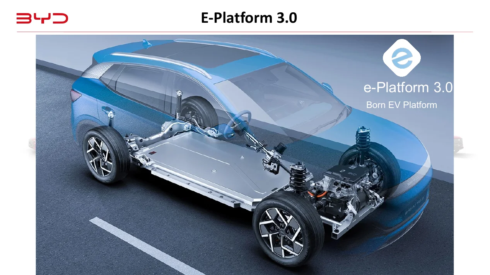
e-Platform 3.0 ของ BYD — แพลตฟอร์มที่ออกแบบมาเพื่อรถไฟฟ้าโดยเฉพาะ (Born EV) รวมแบตเตอรี่เป็นโครงสร้างตัวถัง (CTB) ต่างจากคู่แข่งที่ใช้แพลตฟอร์มร่วมกับรถสันดาป ที่มา: BYD Training — Chassis System
Modular Platform เปรียบเทียบ
แบรนด์ แพลตฟอร์ม จุดเด่น รุ่นที่ใช้
BYD e-Platform 3.0
Born EV, CTB integration, แบตเตอรี่เป็นโครงสร้าง
ATTO3, Dolphin, Seal
Toyota
TNGA
รองรับ ICE, Hybrid, EV ในแพลตฟอร์มเดียว
Camry, Corolla, RAV4, Prius
Subaru
Subaru Global Platform
เน้น AWD, Safety, Fun-to-Drive ทุกรุ่น
XV, Forester, Outback, WRX
Mercedes-Benz
EVA / MMA
EVA = EV ขนาดใหญ่, MMA = Compact EV สำหรับอนาคต
EQS, EQE, EQC, EQA
Honda
Honda Architecture
3 Modules: Engine + Cockpit + Rear Floor — Component commonization
CR-V, Civic, Accord
ระบบกันสั่นสะเทือน (Suspension) ของ BYD
รุ่น BYD ช่วงล่างหน้า ช่วงล่างหลัง จุดเด่น
ATTO 3 MacPherson Strut
Multi-Link
Multi-link หลังช่วยจัดการน้ำหนักแบตเตอรี่ได้ดี นิ่งในทางหลวง
DOLPHIN MacPherson Strut
Multi-Link
ตอบสนองดีในเมือง เบา เหมาะกับ City Car
SEAL MacPherson Strut
Multi-Link
CTB เพิ่ม Torsional Rigidity อย่างมาก การควบคุมระดับ Sport Sedan
DiSus — ระบบกันสั่นสะเทือนอัจฉริยะ (รุ่น Premium ของ BYD)
BYD พัฒนาระบบ DiSus (Distributed Smart Suspension) สำหรับรุ่นระดับสูง:DiSus-A — Air Suspension (โช้คอัดอากาศ ปรับความสูงได้)DiSus-C — Continuous Damping Control (ปรับความนุ่มแข็งแบบ Real-time)DiSus-P — Preview Camera ดูพื้นถนนล่วงหน้า ปรับโช้คอัตโนมัติก่อนชนหลุมDiSus-X — Intelligent Body Control ควบคุมทุกล้ออิสระแบบ Real-time (รุ่น YANGWANG)
เปรียบเทียบระบบแบตเตอรี่ — BYD vs คู่แข่ง
แบรนด์ เคมีแบตเตอรี่ Safety อายุการใช้งาน จุดเด่น
BYD (Blade) LFP
สูงสุด ✓✓✓
3,000+ รอบ
ไม่ใช้โคบอลต์, ผ่าน Nail Test, อายุยาวนาน
Tesla (STD Range)
LFP (CATL)
ดี
2,000+ รอบ
ราคาถูก, ชาร์จเต็ม 100% ได้ทุกวัน
Tesla (Long Range)
NMC (Panasonic/CATL)
ปานกลาง
1,500 รอบ
Energy density สูง, Range ดีที่สุดในคลาส
Toyota bZ4X
NMC (Panasonic)
ปานกลาง
1,000–1,500 รอบ
Warranty ดี, แบรนด์น่าเชื่อถือ
MG / SAIC
LFP หรือ NMC
ดี
2,000 รอบ
ราคาแข่งขันได้, ตัวเลือกหลากหลาย
* ข้อมูลเปรียบเทียบจากข้อมูลสาธารณะที่เป็นที่รับรู้ทั่วไปในอุตสาหกรรม EV
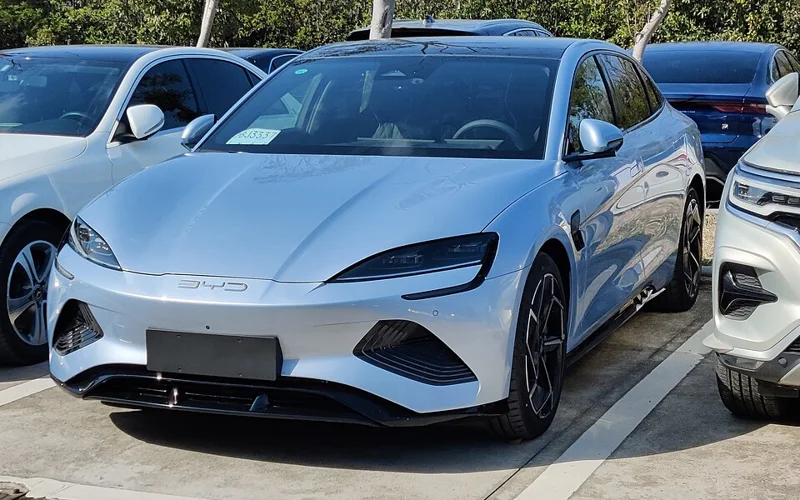
BYD Seal — Blade Battery (LFP) · ปลอดภัยสูงสุด ไม่ใช้โคบอลต์
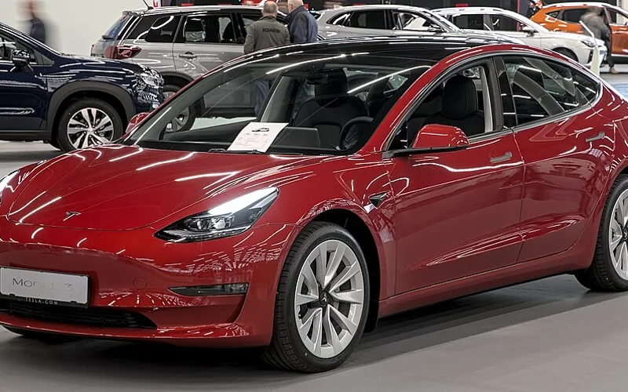
Tesla Model 3 — LFP (รุ่น STD) / NMC (รุ่น Long Range)
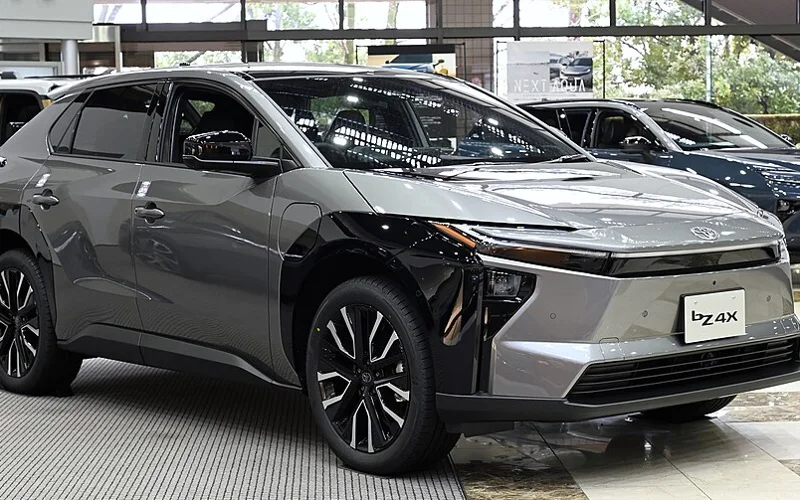
Toyota bZ4X — NMC (Panasonic)
ภาพรถ: Wikimedia Commons — BYD Seal & Tesla Model 3 (CC BY-SA 4.0), Toyota bZ4X (CC0) · ใช้เพื่อการศึกษาภายใน
โครงสร้างตัวถัง — BYD vs ทั่วไป
หัวข้อ BYD รถยนต์ทั่วไป สัดส่วนเหล็กคุณสมบัติสูง ≥85% High-strength 30–60% Ultra-high-strength steel 55% 10–20% ค่า Tensile strength สูงสุด 1,500 MPa 780–980 MPa Euro NCAP Safety Rating 5 ดาว (2023) ทุกรุ่น แตกต่างตามรุ่น CTB (Cell-To-Body) มี (ใน SEAL) ไม่มี (ในราคาใกล้เคียง) แบตเตอรี่เป็นโครงสร้าง ใช่ (e-Platform 3.0) ไม่ (วางในกล่องแยก)
สรุปจุดแข็งของ BYD เมื่อเทียบกับคู่แข่ง
Vertical Integration: BYD ผลิตทุกอย่างเอง ตั้งแต่ชิป (IGBT, SiC) แบตเตอรี่ มอเตอร์ ตัวถัง — ควบคุมต้นทุนและคุณภาพได้ดีที่สุดBlade Battery LFP: ปลอดภัยกว่า อายุยาวนานกว่า ไม่ใช้โคบอลต์ ราคาถูกกว่า NMC8in1 Powertrain: รวม 8 ระบบเป็นชิ้นเดียว ลดน้ำหนัก พื้นที่ และต้นทุน ประสิทธิภาพ 97.6%CTB Technology: เฉพาะ BYD SEAL ในราคาใกล้เคียงที่มีเทคโนโลยีนี้e-Platform 3.0: ออกแบบมาสำหรับ EV โดยเฉพาะ (Born EV) ไม่ใช่ดัดแปลงจากรถน้ำมันEuro NCAP 5 Stars (2023): ทั้ง ATTO 3, DOLPHIN และ SEAL — ความปลอดภัยระดับสูงสุดของยุโรปราคา: BYD แข่งขันได้ด้านราคา เทียบกับสเปกที่ได้รับ เนื่องจาก Cost Efficiency ของ Vertical Integration
ระบบไฟฟ้าแรงสูง · High-Voltage System
High-Voltage Electrical System — หัวใจการขับเคลื่อนของรถ EV
คำเตือนความปลอดภัย HV
ระบบไฟฟ้าแรงสูงของ BYD ทำงานที่ระดับแรงดัน หลายร้อยโวลต์ (300–800V) ซึ่งเป็นอันตรายถึงชีวิต ก่อนปฏิบัติงานทุกครั้งต้องสวม PPE สำหรับงานไฟฟ้าแรงสูง ตัดระบบ HV และตรวจสอบให้แน่ใจว่าไม่มีไฟค้างในระบบ
ระบบไฟฟ้าแรงสูงเป็นแหล่งพลังงานหลักของรถ จ่ายพลังงานให้การขับเคลื่อนและอุปกรณ์ไฟฟ้าอื่นๆ ส่วนประกอบหลัก 2 ส่วนคือ แบตเตอรี่ (Power Battery Pack) และ ระบบส่งกำลังไฟฟ้า 8in1 โดยรูปแบบการต่อวงจรจะต่างกันในแต่ละรุ่น
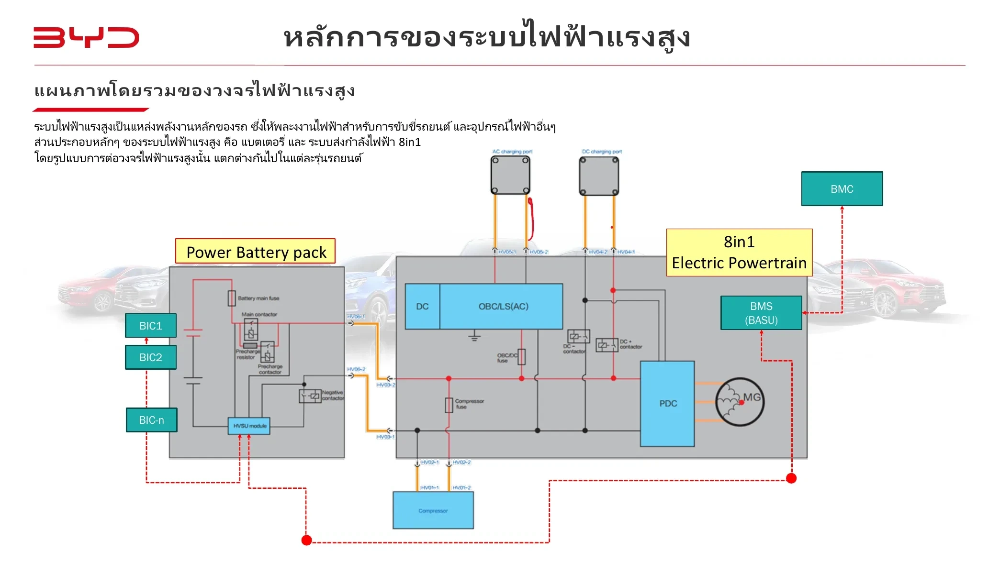
แผนภาพโดยรวมของวงจรไฟฟ้าแรงสูง — Power Battery Pack จ่ายไฟผ่าน BDU เข้าสู่ระบบ 8in1 Electric Powertrain โดยมี BMS (BASU) และ BIC คอยตรวจวัด ที่มา: BYD Training — High Voltage Electrical System
คำย่อที่พบบ่อยในระบบ HV
BMS / BASU Battery execution And Sampling Unit — ระบบควบคุมและจัดการไฟฟ้าของแบตเตอรี่
BIC Battery Information Collector — วัดแรงดันและอุณหภูมิของเซลล์ ส่งให้ BMS
HVSU High Voltage Supervisor Unit — ชุดควบคุมไฟฟ้าแรงสูง
BDU Battery Distribution Unit — วงจรควบคุมการจ่าย/ชาร์จไฟออกจากแบตเตอรี่ (สั่งโดย BMS)
OBC On Board Charger — แปลงไฟ AC เป็น DC สำหรับชาร์จแบตเตอรี่
SOC / SOH State Of Charge (% แบตเตอรี่) / State Of Health (สุขภาพแบตเตอรี่)
VBM Vehicle Motor Controller — วงจรควบคุมมอเตอร์
FPC Flexible Printing Circuit — สายแพรควบคุมสัญญาณในชุด Blade Battery
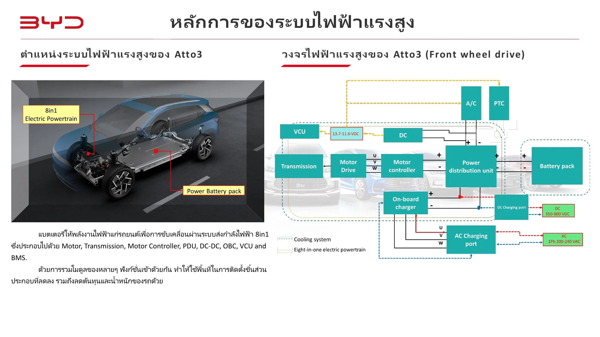
ตำแหน่งและวงจรไฟฟ้าแรงสูงของ ATTO 3 (Front Wheel Drive) — รวมโมดูล 8in1 (Motor, Transmission, Motor Controller, PDU, DC-DC, OBC, VCU, BMS) เข้าด้วยกัน ลดพื้นที่ติดตั้ง ต้นทุน และน้ำหนัก ที่มา: BYD Training — High Voltage Electrical System
ระบบส่งกำลังไฟฟ้า 8in1
BYD รวม 8 ฟังก์ชันไว้ในโมดูลเดียว: Motor · Transmission · Motor Controller · PDU · DC-DC · OBC · VCU · BMS — ดูเพิ่มเติมที่หัวข้อ ระบบ 8in1 Powertrain
เนื้อหาและภาพประกอบจากคอร์สอบรม BYD: 40_High Voltage Electrical System (57 สไลด์)
ระบบไฟฟ้าแรงต่ำ · Low-Voltage System
CAN Bus · OBD II · Control Modules · Key Matching
ในรถยนต์มีระบบควบคุมย่อย (กล่อง ECU) มากกว่า 70 ระบบ ที่ต้องสื่อสารกัน BYD ใช้มาตรฐาน CAN bus (Controller Area Network) เป็นเครือข่ายสื่อสารหลักระหว่างกล่องควบคุมทั้งหมด
CAN bus ทำงานอย่างไร?
สาย CAN-H และ CAN-L ทำงานแบบ differential (ใช้ผลต่างแรงดันระหว่าง 2 สาย) เพื่อลดสัญญาณรบกวน มี 2 สถานะ:
Dominant (ลอจิก 0): CAN-H ≈ 3.5V, CAN-L ≈ 1.5V → ต่างกัน 2VRecessive (ลอจิก 1): CAN-H = CAN-L = 2.5V → ต่างกัน 0V
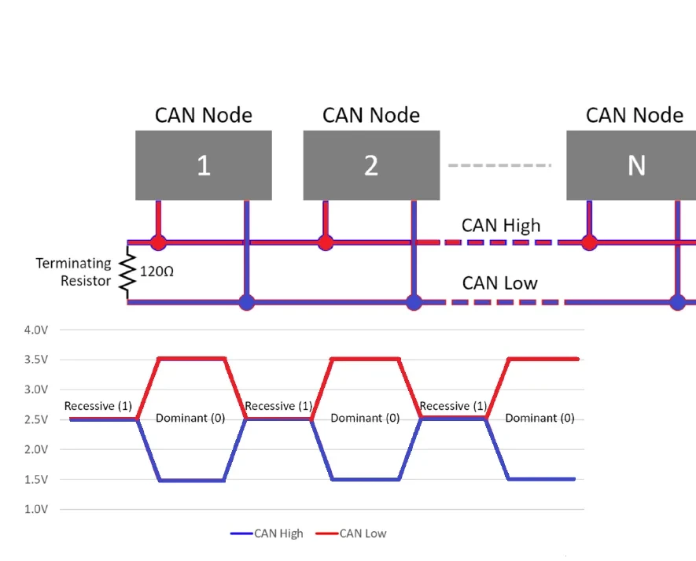
หลักการสื่อสารแบบ Differential ของ CAN bus — มี Terminating Resistor 120Ω ที่ปลายบัสทั้งสองข้าง (รูปแสดงด้านซ้าย) และระดับแรงดันในสถานะ Dominant (3.5V/1.5V) / Recessive (2.5V) ตามกราฟด้านล่าง ที่มา: BYD Training — Low Voltage
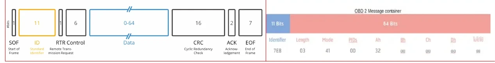
โครงสร้าง CAN Frame (ซ้าย) และ OBD II Message container (ขวา) — ตัวอย่าง: 7E8 03 41 0D 32… ที่มา: BYD Training — Low Voltage
โครงสร้าง CAN Frame ทีละช่อง
ช่อง (Field) ขนาด หน้าที่ SOF — Start of Frame1 บิต ส่ง Dominant (ลอจิก 0) บอกทุก node ว่าเริ่มส่งข้อมูล ID — Identifier11 บิต เลข ID เฉพาะของชุดข้อมูล (Standard Frame) ใช้กำหนดความสำคัญ (priority) — ค่าน้อย = สำคัญมาก RTR — Remote Transmission Request1 บิต Dominant (0) = Data frame · Recessive (1) = Remote frame Control 6 บิต IDE (Standard/Extended) + Reserved + DLC (Data Length Code) บอกความยาวข้อมูล Data 0–64 บิต ข้อมูลที่ต้องการส่งจริง CRC — Cyclic Redundancy Check16 บิต ตรวจสอบความถูกต้องของข้อมูล (15 บิต CRC + 1 บิต delimiter) ACK — Acknowledgement2 บิต ยืนยันว่าข้อมูลส่งถูกต้อง (ACK slot + delimiter) EOF — End of Frame7 บิต บอกจุดสิ้นสุดของเฟรม
ความเร็วในการรับ–ส่งข้อมูล (Baud Rate)
CAN เป็นโปรโตคอลแบบ Asynchronous — อุปกรณ์บนบัสเดียวกัน ต้องตั้ง Baud Rate เท่ากันทุกตัว จึงจะสื่อสารถูกต้อง ค่าที่กำหนดได้:
12.5 · 16 · 20 · 25 · 50 · 100 · 125 (ใช้บ่อยสุด) · 250 · 500 · 800 · 1,000 kbit/s
OBD II Port (16 Pin) ช่องเชื่อมต่อมาตรฐานสำหรับเครื่องมือวินิจฉัย เข้าถึงข้อมูลจากเครือข่าย CAN ของรถ
กล่องโมดูลควบคุม ECU ฝั่งซ้าย/ขวา เมื่อเปลี่ยนต้องทำตามขั้นตอนการ Matching ที่ถูกต้อง
การ Matching กุญแจ ขั้นตอนจับคู่กุญแจใหม่เข้ากับระบบรถผ่านเครื่องมือวินิจฉัย
เนื้อหาและภาพประกอบจากคอร์สอบรม BYD: 30_Low Voltage All Model (74 สไลด์)
ระบบจัดการอุณหภูมิ · Thermal Management
Thermal Management System — ดูแลทั้งห้องโดยสารและแบตเตอรี่
ระบบจัดการอุณหภูมิของ BYD ดูแลทั้ง การปรับอากาศห้องโดยสาร และ การควบคุมอุณหภูมิแบตเตอรี่ ผ่านวงจรสารทำความเย็น (Refrigerant Cycle) และ Heat Pump — ระบบเดียวกันทำได้ทั้งทำเย็น ทำร้อน ไล่ฝ้า และดูแลอุณหภูมิแบตเตอรี่พร้อมกัน
Thermodynamics — Vapor Compression Cycle (R134a)
ระบบ A/C ของ BYD ทำงานตาม Vapor Compression Cycle มี 4 กระบวนการหลัก วิเคราะห์ด้วย P-h Diagram (Mollier Diagram) และ T-s Diagram — เป็นเครื่องมือมาตรฐานที่ช่างและวิศวกรใช้วินิจฉัยระบบ
P-h Diagram (Mollier Diagram) — Refrigerant R134a
Interior Refrigeration Mode · P_high = 1.45 MPa · P_low = 0.35 MPa
Subcooled
Liquid
Two-Phase
Superheated
Vapor
④→① Evaporation
①→②
Compression
②→③ Condensation
③→④ Throttling
①
403 kJ/kg
②
447 kJ/kg
③
257 kJ/kg
④
257 kJ/kg
q_evap = 146 kJ/kg
w = 44
200
250
300
350
400
450
Enthalpy, h (kJ/kg)
0.2
0.5
1.0
1.5
Pressure, P (MPa)
P_high 1.45
P_low 0.35
T_cond ≈ 40°C
T_evap ≈ 5°C
P-h Diagram — แสดง Vapor Compression Cycle สำหรับ R134a ในโหมด Interior Refrigeration: ①Compressor inlet (superheated vapor) → ②Compressor outlet → ③Condenser outlet (subcooled liquid) → ④Evaporator inlet (two-phase) คำนวณจากคุณสมบัติ R134a ที่ P_high=1.45 MPa, P_low=0.35 MPa
T-s Diagram — Vapor Compression Cycle (R134a)
Liquid
Two-Phase
Vapor
④→① Evaporation
①→②
Comp.
(isentropic)
②→③ Condensation
③→④ Throttle
①
②
③
④
1.0
1.2
1.4
1.6
1.8
Entropy, s [kJ/(kg·K)]
260
280
300
320
340
Temperature, T (K)
T_evap≈278K
T_cond≈313K
T-s Diagram — แสดงกระบวนการทั้ง 4 ของ Vapor Compression Cycle: ①→② Isentropic Compression (แนวตั้ง), ②→③ Condensation (แนวนอน ลด T,s), ③→④ Throttling (irreversible, T↓), ④→① Evaporation (แนวนอน คงที่ T) คำนวณจากคุณสมบัติ R134a
State Points — ค่าสมบัติเทอร์โมไดนามิกส์
State
ตำแหน่ง
สภาวะ
T (°C)
P (MPa)
h (kJ/kg)
s (kJ/kg·K)
① Suction ขาเข้า Compressor
Superheated Vapor
~10
0.35
403
1.732
② Discharge ขาออก Compressor
Superheated Vapor
~65
1.45
447
1.732*
③ Liquid ขาออก Condenser
Subcooled Liquid
~40
1.45
257
1.205
④ Flash ขาออก EXV (Throttle)
Two-Phase Mixture
~5
0.35
257
—
* isentropic compression: s₂ = s₁ (ideal)
การคำนวณ COP (Coefficient of Performance)
Refrigerating Effect
qevap = h₁ − h₄
= 403 − 257 = 146 kJ/kg
Compressor Work
wcomp = h₂ − h₁
= 447 − 403 = 44 kJ/kg
Heat Rejected (Condenser)
qcond = h₂ − h₃
= 447 − 257 = 190 kJ/kg
COP (Cooling)
COP = qevap / wcomp
= 146 / 44 = ≈ 3.3
COP = 3.3 หมายความว่า ใช้พลังงานไฟฟ้า 1 kJ สามารถดูดความร้อนออกจากห้องโดยสารได้ 3.3 kJ — ยิ่ง COP สูง ระบบยิ่งประหยัดพลังงาน ค่า COP จริงขึ้นอยู่กับอุณหภูมิแวดล้อมและ Compressor efficiency
ตรวจสอบ: qcond = qevap + wcomp → 190 = 146 + 44 ✓ (First Law)
จำลองระบบทำความเย็น — Interactive Simulation
ปรับ Sliders เพื่อดูการเปลี่ยนแปลง Real-time · Vapor Compression Cycle + Battery Thermal Management
CONDENSER (คอนเดนเซอร์)
ระบายความร้อนสู่อากาศภายนอก
T_cond = 47°C
อากาศภายนอก (Heat Sink)
35°C
↑↑
↑↑
↑↑
↑↑
COMPRESSOR
ไฟฟ้า → อัดสาร P↑ T↑
0.9 kW
~3,500 RPM
EXP. VALVE
ลดแรงดัน → T↓ Flash
EVAPORATOR
คอยล์เย็น (ห้องโดยสาร)
T_evap = 9°C
ห้องโดยสาร
ตั้งที่ 22°C
Q = 3.3 kW
→
→
🔥 HEAT PUMP MODE
CHILLER
ระบายความร้อนแบตเตอรี่
Q_bat = 0.8 kW
BATTERY PACK
T_bat = 30°C
Load = 50 kW
①
superheated vapor
②
③
subcooled liquid
④
flash (2-phase)
COP
3.3
สารทำความเย็น R134a
Discharge — High P, hot gas
Liquid line — High P, liquid
Cold feed — Low P, 2-phase
Suction — Low P, gas
Coolant Loop (Battery)
Coolant ร้อน → Chiller
Coolant เย็น ← Chiller
Speed animation ∝ mass flow rate
สลับโหมด
❄️ ทำความเย็น(Cooling Mode)
ไทย / เขตร้อน
COP
3.3
ยิ่งสูง = ประหยัด
W_comp
0.9 kW
กำลัง Compressor
Q_cond
3.9 kW
ความร้อนทิ้ง
สถานะ: ระบบทำงานปกติ
Part I — หลักพื้นฐานระบบปรับอากาศ
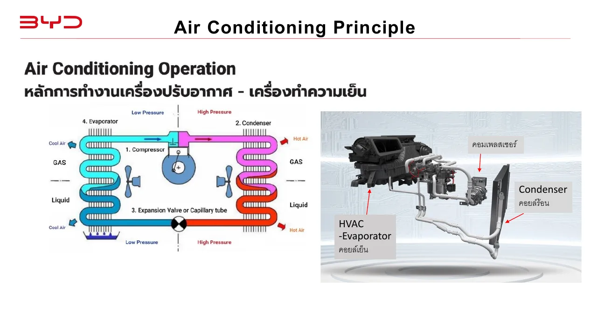
วงจรการทำงานของระบบปรับอากาศ: Evaporator → Compressor → Condenser → Receiver Dryer → Expansion Valve → วนซ้ำ ที่มา: BYD Training — Thermal Management
Evaporator (คอยล์เย็น)
ดูดซับความร้อนในห้องโดยสาร ทำให้สารทำความเย็นกลายเป็นก๊าซ อากาศในรถเย็นลง
Compressor (คอมเพรสเซอร์)
อัดก๊าซสารทำความเย็นให้มีแรงดันสูง ส่งต่อไปยัง Condenser — ใช้ไฟฟ้า DC 307.2V
Condenser (คอยล์ร้อน)
ระบายความร้อนออก เปลี่ยนก๊าซเป็นของเหลว ส่งต่อไปยัง Receiver Dryer
Receiver Dryer
ดูดซับความชื้น กรองสิ่งสกปรก เป็นที่พักของสารทำความเย็น
Expansion Valve (EXV)
ลดแรงดัน ฉีดสารทำความเย็นเป็นฝอยเข้า Evaporator — BYD ใช้ Electronic EXV (1-way / 2-way)
Part II — ชิ้นส่วนหลักในระบบ (A/C Pipe Line Major Components)
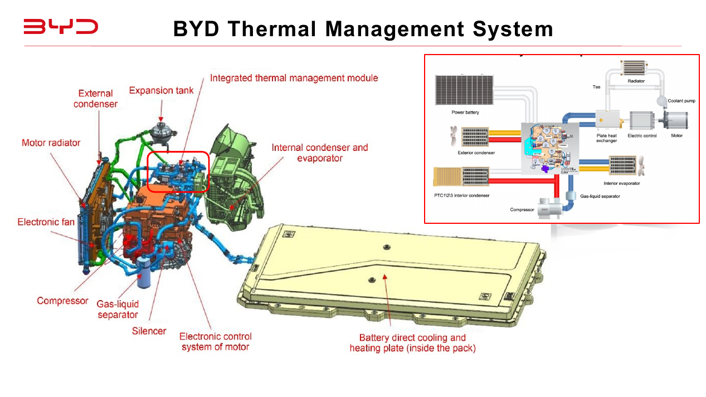
ชิ้นส่วนหลักในท่อแอร์: Condenser · Compressor · Plate Heat Exchange · Gas-Liquid Separator · Integrated Thermal Management Module ที่มา: BYD Training — Thermal Management
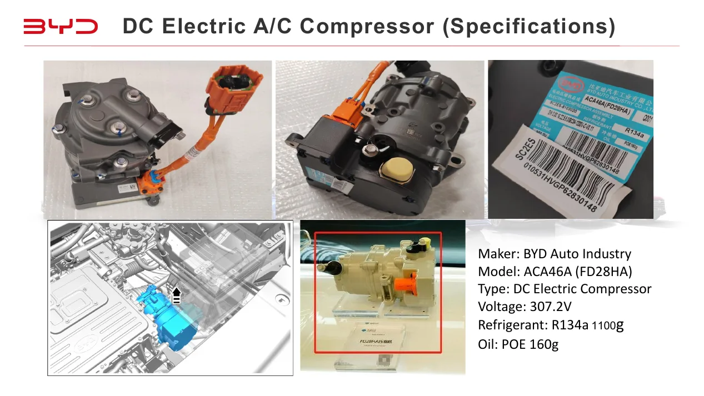
DC Electric A/C Compressor (แบบ Scroll) — Model ACA46A (FD28HA), แรงดัน 307.2V, สารทำความเย็น R134a 1100g, น้ำมัน POE 160g ที่มา: BYD Training — Thermal Management
DC Electric Compressor
Model ACA46A · 307.2V · R134a 1100g · POE 160g · ประเภท Scroll — ไม่ใช้สายพาน ทำงานอิสระจากเครื่องยนต์
Plate Heat Exchanger (Chiller)
แลกเปลี่ยนความร้อนระหว่างวงจรสารทำความเย็นกับวงจรน้ำหล่อเย็นแบตเตอรี่ — หัวใจของระบบ Battery Cooling
Gas-Liquid Separator
แยกก๊าซออกจากของเหลว ดูดความชื้นออกจากระบบ ป้องกัน Compressor รับของเหลวเข้า
Integrated TM Module
โมดูลรวม Solenoid Valve (SOV1–6) + Electronic Expansion Valve (EXV1–3) + Check Valve + Sensor ในชิ้นเดียว
Solenoid Valve (SOV)
NC (Normal Closed) และ NO (Normal Open) — ควบคุมทิศทางสารทำความเย็น เปิด/ปิดด้วยไฟ 12V
Electronic EXV
EXV1 (Chiller), EXV2 (Heating), EXV3 (Battery) — ควบคุมด้วยสัญญาณ PWM/LIN แม่นยำกว่า Thermal EXV
Part III — วงจรการทำงาน 6 โหมด (Operation Circuits)
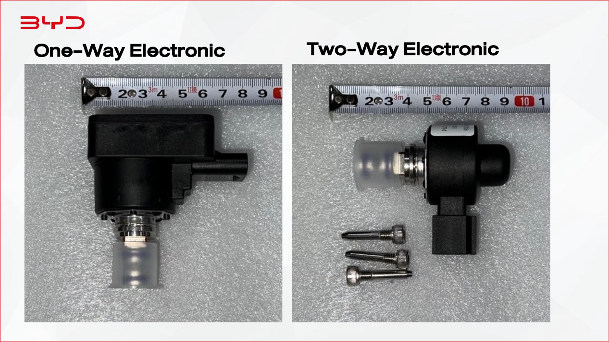
วงจรการทำงานรวมของระบบ Thermal Management — แสดง SOV, EXV, CV, VCV และ Sensor ทั้งหมดในระบบ ที่มา: BYD Training — Thermal Management
โหมด
ทำอะไร
SOV ที่ active
EXV ที่ใช้
Interior Refrigeration ทำเย็นห้องโดยสาร แอร์เย็นปกติ — Evaporator ดูดความร้อนในห้อง
SOV2, SOV3, SOV4, SOV5
EXV1 (adj), EXV2
Battery Cooling ทำเย็นแบตเตอรี่ สารทำความเย็นผ่าน Chiller ดูดความร้อนจากน้ำหล่อเย็นแบต
SOV2, SOV3, SOV4, SOV5
EXV1 (PWM), EXV3 (PWM)
Dual Refrigeration เย็นแบต + ห้องโดยสาร ทำเย็นทั้งสองระบบพร้อมกัน
SOV2, SOV3, SOV4, SOV5
EXV1 (PWM), EXV3 (PWM)
Interior Heating อุ่นห้องโดยสาร Heat Pump ดึงความร้อนจากอากาศภายนอก อุ่นห้องโดยสาร
SOV2 (OFF), SOV4, SOV5
EXV2, EXV3
Battery Heating อุ่นแบตเตอรี่ อุ่นน้ำหล่อเย็นแบตเตอรี่ผ่าน Chiller ด้วย Heat Pump
SOV1, SOV2 (via Chiller), SOV5
EXV1, EXV3
Dual Heating อุ่นแบต + ห้องโดยสาร Heat Pump อุ่นทั้งสองระบบพร้อมกัน
SOV1, SOV5
EXV2 (LIN), EXV3
Defrosting ไล่ฝ้า อุ่นกระจกหน้า/หลัง ลดความชื้น ควบคุมผ่าน SOV3 (as required)
SOV3 (req), SOV5, SOV6
EXV1, EXV2 (LIN)
🔍 System Principle — Interior Refrigeration (ห้องโดยสารเย็น)
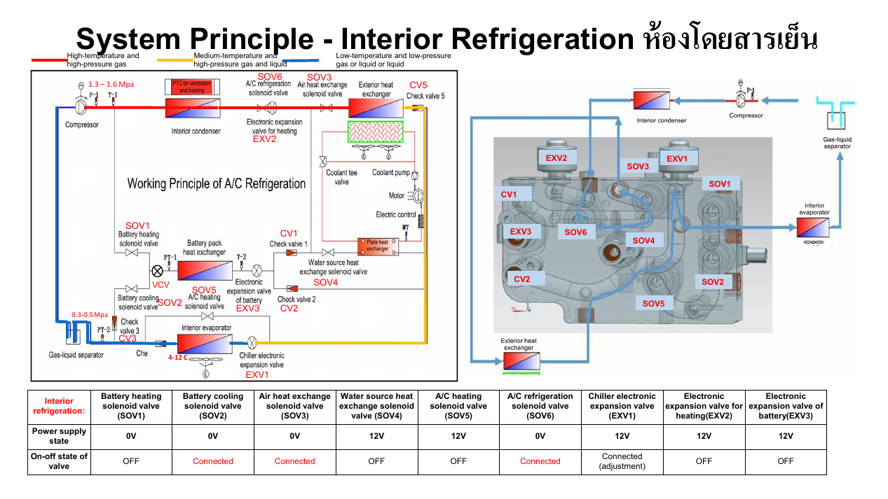
วงจร Interior Refrigeration — สารทำความเย็นไหลผ่าน Compressor → Condenser → Integrated TM Module (EXV1 adj, EXV2 12V, SOV2/3/4/5 on) → Evaporator → กลับ Compressor แรงดันสูง 1.3–1.6 MPa / ต่ำ 0.3–0.5 MPa ที่มา: BYD Training — Thermal Management
สถานะ Valve — Interior Refrigeration
Valve
ชื่อ
สถานะ
SOV1 Battery heating solenoid valve OFF (0V) SOV2 Battery cooling solenoid valve Connected (0V) SOV3 Air heat exchange solenoid valve Connected (0V) SOV4 Water source heat exchange solenoid valve 12V — Connected SOV5 A/C heating solenoid valve 12V — Connected SOV6 A/C refrigeration solenoid valve OFF (0V) EXV1 Chiller electronic expansion valve 12V — Connected (adjustment) EXV2 Electronic EXV for heating 12V EXV3 Electronic EXV of battery 12V — OFF
จุดสังเกตโหมดนี้
สารทำความเย็นแรงดันสูง 1.3–1.6 MPa (High-pressure gas ออกจาก Compressor)
แรงดันต่ำก่อนเข้า Compressor 0.3–0.5 MPa (Low-pressure หลัง Evaporator)
อุณหภูมิอากาศออก Evaporator 4–12°C
Battery ไม่ถูก cool ในโหมดนี้ — EXV3 off, Chiller bypass
ใช้ EXV1 แบบ adjustment (ไม่ใช่ PWM full) เพื่อควบคุมปริมาณสารทำความเย็นเข้า Evaporator
🔍 System Principle — Battery Cooling (ทำความเย็นแบตเตอรี่)
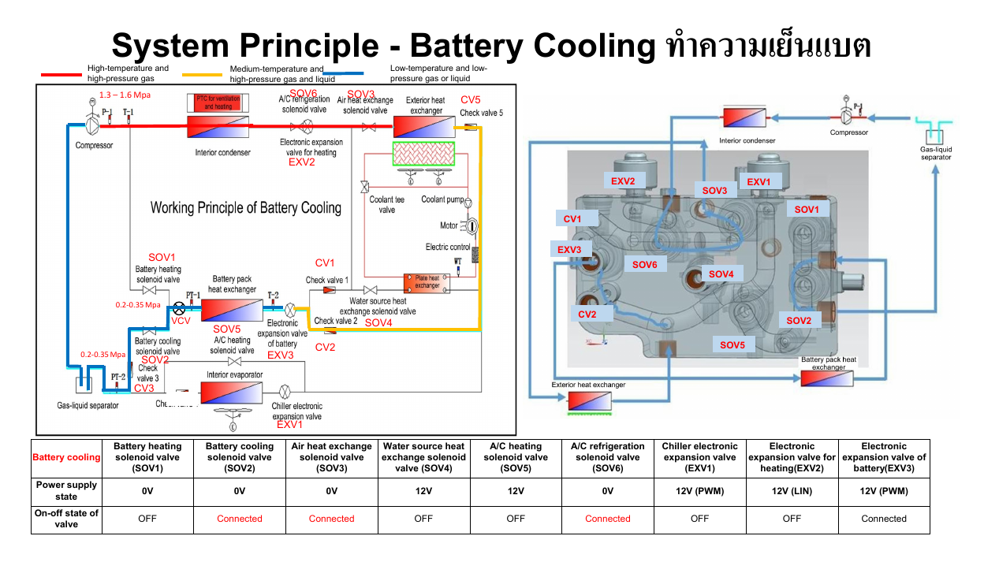
วงจร Battery Cooling — สารทำความเย็นผ่าน EXV3 (PWM) → Chiller → ดูดความร้อนออกจากน้ำหล่อเย็นแบตเตอรี่ แรงดันต่ำ 0.2–0.35 MPa (ต่ำกว่า Interior Refrigeration) ที่มา: BYD Training — Thermal Management
สถานะ Valve — Battery Cooling Valve ชื่อ สถานะ SOV1 Battery heating OFF (0V) SOV2 Battery cooling Connected (0V) SOV3 Air heat exchange Connected (0V) SOV4 Water source heat exchange OFF (12V) SOV5 A/C heating OFF (12V) SOV6 A/C refrigeration Connected (0V) EXV1 Chiller EXV OFF (12V PWM) EXV2 EXV for heating OFF (12V LIN) EXV3 EXV of battery Connected (12V PWM)
จุดสังเกตโหมดนี้
EXV3 เป็น active valve ควบคุม flow เข้า Chiller — ไม่ผ่าน Evaporator เลย
แรงดันต่ำลงเหลือ 0.2–0.35 MPa (ต่ำกว่า Interior Refrigeration) เพราะ Chiller มีขนาดเล็กกว่า Evaporator
ห้องโดยสาร ไม่เย็น ในโหมดนี้ — Evaporator ไม่มี flow
ใช้เมื่ออุณหภูมิแบตเตอรี่ สูงเกิน 38°C
🔍 System Principle — Interior/Battery Dual Refrigeration (เย็นแบตและห้องโดยสาร)
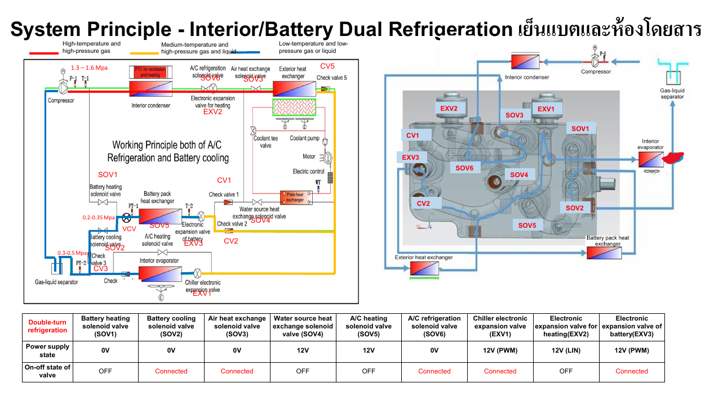
วงจร Dual Refrigeration — Compressor จ่ายสารทำความเย็นทั้ง Evaporator (ห้องโดยสาร) และ Chiller (แบตเตอรี่) พร้อมกัน EXV1 และ EXV3 ทำงานคู่กัน ที่มา: BYD Training — Thermal Management
สถานะ Valve — Dual Refrigeration Valve ชื่อ สถานะ SOV1 Battery heating OFF (0V) SOV2 Battery cooling Connected (0V) SOV3 Air heat exchange Connected (0V) SOV4 Water source heat exchange OFF (12V) SOV5 A/C heating OFF (12V) SOV6 A/C refrigeration Connected (0V) EXV1 Chiller EXV Connected (12V PWM) EXV2 EXV for heating OFF (12V LIN) EXV3 EXV of battery Connected (12V PWM)
จุดสังเกตโหมดนี้
เพิ่มจาก Battery Cooling เพียง EXV1 เปิดเพิ่ม — flow แยกไปทั้ง Evaporator และ Chiller
Compressor รับภาระสูงสุด — ต้องจ่าย cooling ให้ทั้งสองวงจรพร้อมกัน
แรงดันต่ำ 0.2–0.35 MPa เช่นเดียวกับ Battery Cooling (เป็น limiting side)
ใช้เมื่อขับในสภาพอากาศร้อนและแบตเตอรี่ร้อนพร้อมกัน
🔍 System Principle — Interior Heating (อุ่นห้องโดยสาร)
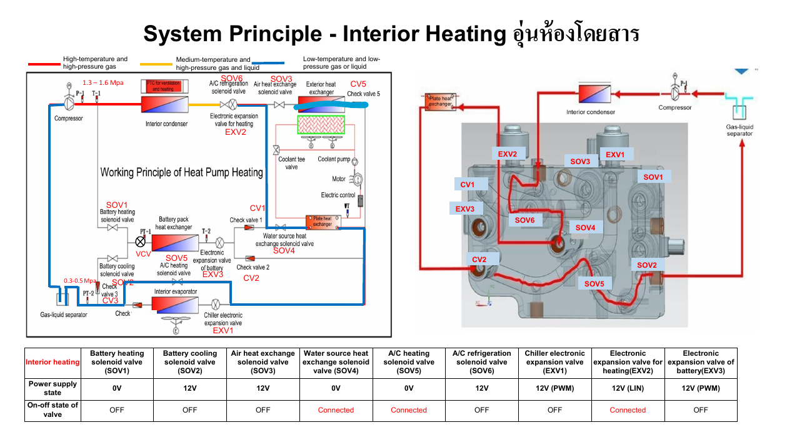
วงจร Interior Heating (Heat Pump) — Outdoor Condenser ทำหน้าที่เป็น Evaporator ดูดความร้อนจากอากาศภายนอก Compressor อัดให้ร้อนขึ้น Indoor Condenser (ใน HVAC) ระบายความร้อนเข้าห้องโดยสาร ที่มา: BYD Training — Thermal Management
สถานะ Valve — Interior Heating Valve ชื่อ สถานะ SOV1 Battery heating OFF (0V) SOV2 Battery cooling OFF (12V) SOV3 Air heat exchange OFF (12V) SOV4 Water source heat exchange Connected (0V) SOV5 A/C heating Connected (0V) SOV6 A/C refrigeration OFF (12V) EXV1 Chiller EXV OFF (12V PWM) EXV2 EXV for heating Connected (12V LIN) EXV3 EXV of battery OFF (12V PWM)
จุดสังเกตโหมดนี้
เป็น Heat Pump Mode — Outdoor Condenser กลายเป็น Evaporator ดูดความร้อนจากอากาศภายนอก
EXV2 ทำงาน (LIN signal) — ควบคุม flow เข้า Indoor Condenser ที่อยู่ใน HVAC Box
ประหยัดพลังงานกว่า PTC Heater โดยตรง — COP ของ Heat Pump ≈ 2–3 ที่อุณหภูมิปานกลาง
ถ้าอากาศภายนอก เย็นมากเกิน (-10°C) Heat Pump ทำงานได้ไม่ดี ระบบจะ fallback ไป PTC Heater
Battery ไม่ถูกอุ่น ในโหมดนี้
🔍 System Principle — Battery Heating (อุ่นแบตเตอรี่)
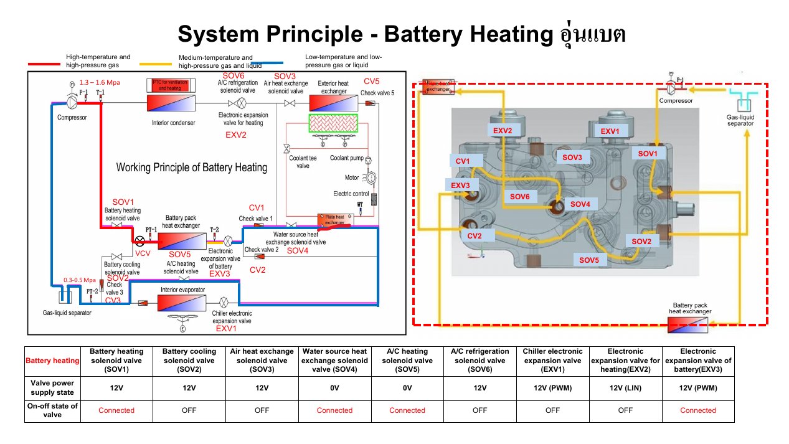
วงจร Battery Heating — Heat Pump อุ่นน้ำหล่อเย็นแบตเตอรี่ผ่าน Chiller โดยสารทำความเย็นจาก Compressor ส่งความร้อนเข้า Chiller EXV3 ควบคุม flow ที่มา: BYD Training — Thermal Management
สถานะ Valve — Battery Heating Valve ชื่อ สถานะ SOV1 Battery heating Connected (12V) SOV2 Battery cooling OFF (12V) SOV3 Air heat exchange OFF (12V) SOV4 Water source heat exchange Connected (0V) SOV5 A/C heating Connected (0V) SOV6 A/C refrigeration OFF (12V) EXV1 Chiller EXV OFF (12V PWM) EXV2 EXV for heating OFF (12V LIN) EXV3 EXV of battery Connected (12V PWM)
จุดสังเกตโหมดนี้
SOV1 (Battery heating) เปิด — แยกสารทำความเย็นส่วนหนึ่งเข้าวงจรอุ่นแบตโดยตรง
EXV3 ควบคุม flow เข้า Chiller เพื่อถ่ายเทความร้อนให้น้ำหล่อเย็นแบตเตอรี่
ห้องโดยสาร ไม่ถูกอุ่น ในโหมดนี้ — EXV2 ปิด
ใช้เมื่ออุณหภูมิแบตเตอรี่ ต่ำกว่า 10°C เช่น ตอนเช้าในสภาพอากาศหนาว
🔍 System Principle — Interior/Battery Dual Heating (อุ่นแบตและห้องโดยสาร)
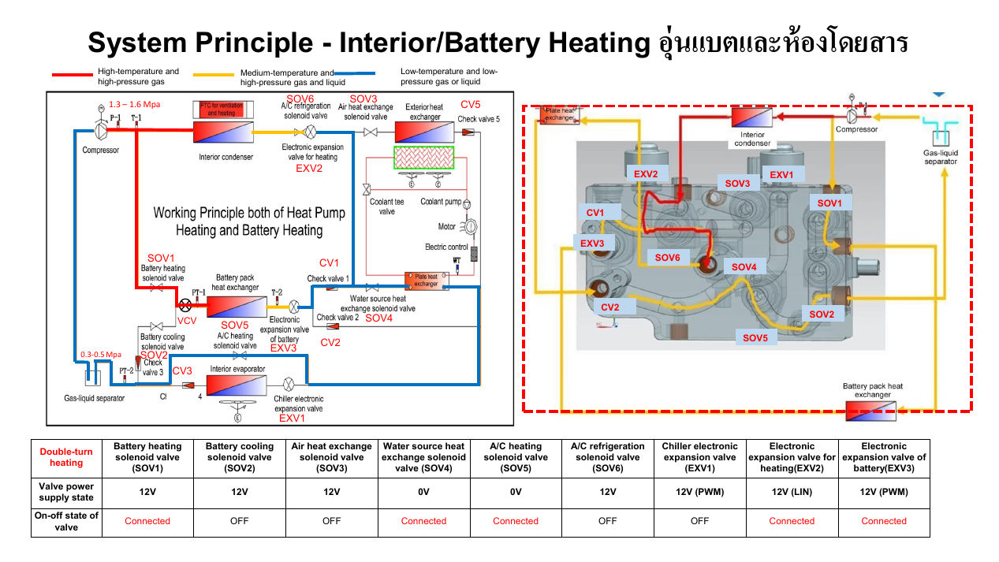
วงจร Dual Heating — Heat Pump อุ่นทั้งห้องโดยสารและแบตเตอรี่พร้อมกัน EXV2 (LIN) + EXV3 (PWM) ทำงานคู่กัน — ใช้ในสภาพอากาศหนาวและแบตเย็นพร้อมกัน ที่มา: BYD Training — Thermal Management
สถานะ Valve — Dual Heating Valve ชื่อ สถานะ SOV1 Battery heating Connected (12V) SOV2 Battery cooling OFF (12V) SOV3 Air heat exchange OFF (12V) SOV4 Water source heat exchange Connected (0V) SOV5 A/C heating Connected (0V) SOV6 A/C refrigeration OFF (12V) EXV1 Chiller EXV OFF (12V PWM) EXV2 EXV for heating Connected (12V LIN) EXV3 EXV of battery Connected (12V PWM)
จุดสังเกตโหมดนี้
รวม Interior Heating + Battery Heating — EXV2 และ EXV3 เปิดพร้อมกัน
Compressor รับภาระสูงสุดในโหมด Heating — จ่ายความร้อนให้ทั้งสองวงจร
ใช้เมื่อสตาร์ทรถในอากาศหนาวจัด — อุ่นแบตเพื่อ performance + อุ่นห้องโดยสาร
🔍 System Principle — Defrosting (ไล่ฝ้า)
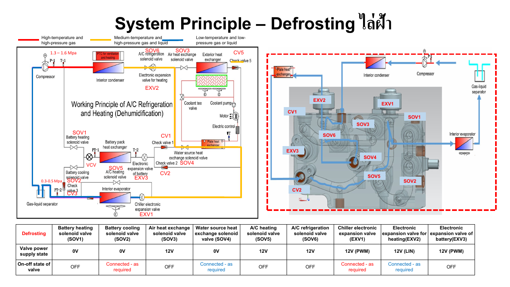
วงจร Defrosting — ผสม A/C Refrigeration + Heating เพื่อลดความชื้นในอากาศ (Dehumidification) แล้วอุ่นอากาศกลับ ทำให้กระจกใสโดยไม่ต้องใช้ PTC Heater เต็มกำลัง ที่มา: BYD Training — Thermal Management
สถานะ Valve — Defrosting Valve ชื่อ สถานะ SOV1 Battery heating OFF (0V) SOV2 Battery cooling Connected — as required (0V) SOV3 Air heat exchange OFF (12V) SOV4 Water source heat exchange Connected — as required (0V) SOV5 A/C heating OFF (12V) SOV6 A/C refrigeration OFF (12V) EXV1 Chiller EXV Connected — as required (12V PWM) EXV2 EXV for heating Connected — as required (12V LIN) EXV3 EXV of battery OFF (12V PWM)
จุดสังเกตโหมดนี้
"as required" หมายถึง VCU สั่งเปิด/ปิดตามสภาวะ — ไม่คงที่ตลอดโหมด
หลักการ: ทำเย็น Evaporator ก่อน → ควบแน่นความชื้นออก → อุ่นอากาศที่แห้งแล้วเข้ากระจก
ไม่ใช้ SOV5 (A/C heating) → ไม่ผ่าน Indoor Condenser หลัก — ใช้ EXV2 ปรับแทน
ใช้เมื่อกระจกมีฝ้า หรืออากาศชื้นสูง — VCU เลือกโหมดนี้อัตโนมัติเมื่อเปิด Defrost button
Part IV — การบริหารอุณหภูมิแบตเตอรี่ (Battery TMS)
เกณฑ์อุณหภูมิที่ระบบเข้าทำงาน
ระบบ ทำความเย็น ทำงานทันทีเมื่ออุณหภูมิแบตเตอรี่ สูงเกิน 38°C
ระบบ ทำความร้อน (Heat Pump) ทำงานทันทีเมื่ออุณหภูมิแบตเตอรี่ ต่ำกว่า 10°C
แบตเตอรี่ถูกรักษาให้อยู่ในช่วง 10–38°C เพื่อประสิทธิภาพและอายุการใช้งานสูงสุด
รับมือกับอุณหภูมิแวดล้อมได้ตั้งแต่ -30°C ถึง 60°C
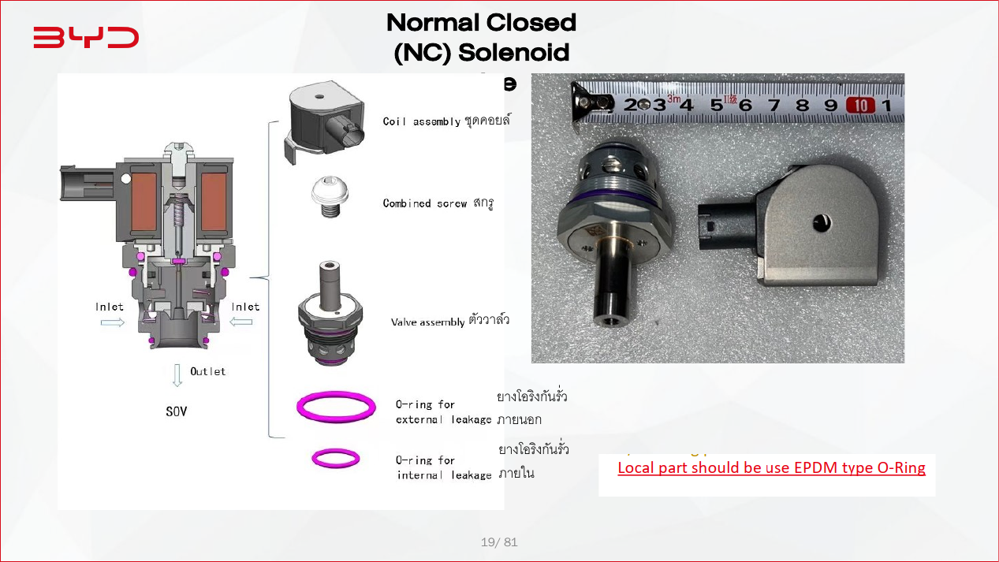
Integrated Thermal Management Module — รวม SOV + EXV + CV + Sensor ไว้ในชิ้นเดียว แบ่งเป็น Upper และ Lower section ที่มา: BYD Training — Thermal Management
Part V — HVAC Unit (ระบบปรับอากาศห้องโดยสาร)
HVAC (Heat, Ventilation and Air Conditioning) ควบคุมอุณหภูมิและความชื้นในห้องโดยสาร รวมถึงการไล่ฝ้ากระจกหน้า
ชิ้นส่วน HVAC Unit: Blower · Evaporator Core · Low-pressure PTC Heater · Control Motor · Flap (บานพับควบคุมลม) ที่มา: BYD Training — Thermal Management
Blower (พัดลม)
ดูดอากาศผ่าน Evaporator และ PTC Heater กระจายลมเข้าห้องโดยสาร
Evaporator Core (คอยล์เย็น)
แลกเปลี่ยนความร้อน ทำให้อากาศเย็นลง ควบแน่นความชื้น
Low-pressure PTC Heater
ทำความร้อนไฟฟ้าแบบ PTC (Positive Temperature Coefficient) สำรองเมื่อ Heat Pump ไม่เพียงพอในอากาศหนาวจัด
Control Motor (Flap)
บานพับ 5 ตัวควบคุมทิศทางลม: ช่องดูดอากาศภายนอก / ไล่ฝ้ากระจกหน้า / ลมหน้า / ลมเท้า / ผสมร้อน-เย็น
⚠️ อาการผิดปกติของระบบ HVAC
อุณหภูมิอากาศที่ระบายออกไม่เหมาะสม หรือไม่มีลมออกเลย
มีกลิ่นหรือฝ้าที่กระจกบังลมระหว่างการไล่ฝ้า
เสียงคาราม เสียงบด หรือเสียงแหลมระหว่างทำงาน
ระบบร้อนเกินไป (Overheating) ในโหมด Heating
เนื้อหาและภาพประกอบจากคอร์สอบรม BYD: 50_Thermal Management (38 สไลด์)
BYD TIS System
Technical Information Service — ระบบข้อมูลทางเทคนิคสำหรับช่าง
BYD TIS (Technical Information Service) คือระบบศูนย์รวมข้อมูลทางเทคนิคสำหรับช่างและวิศวกร เข้าถึงผ่าน http://tis.byd.com/tis/os ใช้ค้นหาคู่มือ ขั้นตอนซ่อม วงจรไฟฟ้า และวินิจฉัยปัญหา
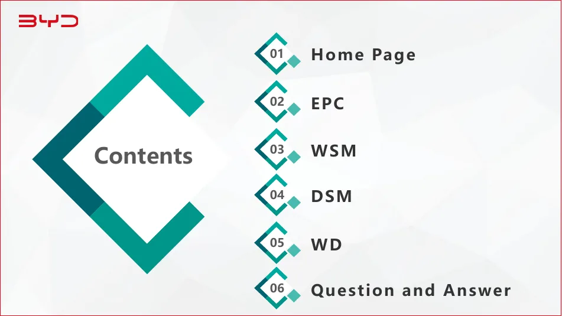
โมดูลหลักของ BYD TIS — Home Page, EPC, WSM, DSM, WD และ Question and Answer ที่มา: BYD Training — TIS System
EPC Electronic Parts Catalog — ตรวจสอบและค้นหาอะไหล่ (Part)
WSM Workshop Manual — คู่มือซ่อมบำรุง มีวิดีโอสาธิตการถอดประกอบแบบ 3 มิติ
DSM Diagnostic System Manual — คู่มือการวิเคราะห์ปัญหา ค้นตาม DTC Fault Code
WD Wiring Diagram — แบบวงจรไฟฟ้าควบคุม
Q&A Technical / Part Q&A — ถาม-ตอบปัญหากับวิศวกร BYD และเครือข่ายศูนย์
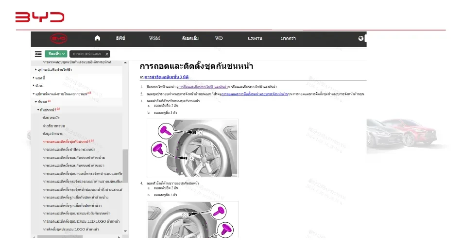
ตัวอย่างหน้าจอ WSM — คู่มือการถอดและติดตั้งชุดกันชนหน้า พร้อมภาพประกอบตำแหน่งสกรู ที่มา: BYD Training — TIS System
ขั้นตอนการวินิจฉัยปัญหา (DSM Workflow)
1. รับข้อมูลโดยละเอียด: รุ่น/ระบบที่ผิดพลาด · เมื่อไร (วัน เวลา สภาพอากาศ) · ที่ไหน (สภาพถนน) · อาการและประวัติการบำรุงรักษา2. รันระบบ ทดสอบบนถนนถ้าจำเป็น ยืนยันพารามิเตอร์ความผิดปกติ3. รวบรวมเอกสาร: แผนภาพวงจร · หลักการทำงาน · คู่มือบำรุงรักษา · Service Bulletin4. ตรวจสายไฟพันกัน ข้อต่อหลวม สายชำรุด กำหนดวงจร/ชิ้นส่วนที่เกี่ยวข้อง5. ซ่อมหรือเปลี่ยนชิ้นส่วนที่ชำรุด6. รันระบบทุกโหมด ยืนยันว่าทำงานปกติและไม่มีข้อผิดพลาดใหม่
เนื้อหาและภาพประกอบจากคอร์สอบรม BYD: 70_BYD TIS System (40 สไลด์)
การแจ้งปัญหาทางเทคนิค · Fault Feedback
คู่มือการแจ้งปัญหาให้ทีมเทคนิคของ Rever
เมื่อช่างเทคนิคพบปัญหาที่แก้เองไม่ได้ ต้องแชร์ข้อมูลพื้นฐานให้ทีมเทคนิคของ Rever เพื่อให้เข้าใจและติดตามสถานการณ์ของรถได้ง่ายขึ้น ยิ่งข้อมูลครบ ยิ่งวิเคราะห์และอนุมัติเคลมได้เร็ว
ข้อมูลพื้นฐานที่ต้องแชร์
Workshop name: ชื่อศูนย์ · Model: ชื่อรุ่น · VIN: เลข VIN · ODO: เลขระยะทางDate: วันที่แจ้งปัญหา · Fault Description: รายละเอียดปัญหาHow it happens: ปัญหาเกิดขึ้นได้อย่างไรDealer's inspections and results: ตรวจสอบอะไรไปแล้ว ได้ผลอย่างไรAttached: รูปภาพ/วิดีโอ, VDS report, Data flow, CAN data
แบบฟอร์มข้อมูลพื้นฐาน (Basic Information)
กรอกให้ครบทุกช่องก่อนส่งให้ทีมเทคนิค — คัดลอกหัวข้อด้านล่างไปกรอกได้เลย:
หัวข้อ (Field) สิ่งที่ต้องกรอก Workshop name ชื่อศูนย์บริการ Model ชื่อรุ่นรถ VIN เลขตัวถัง 17 หลัก ODO เลขระยะทาง (กม.) Date วันที่แจ้งปัญหา Fault Description รายละเอียดปัญหา/อาการ How it happens ปัญหาเกิดขึ้นได้อย่างไร (เงื่อนไข/สถานการณ์) Dealer's inspections and results ตรวจสอบอะไรไปแล้ว และได้ผลอย่างไร Attached pictures / log / CAN data แนบให้ครบ: รูป/วิดีโอ, VDS report, Data flow, CAN data
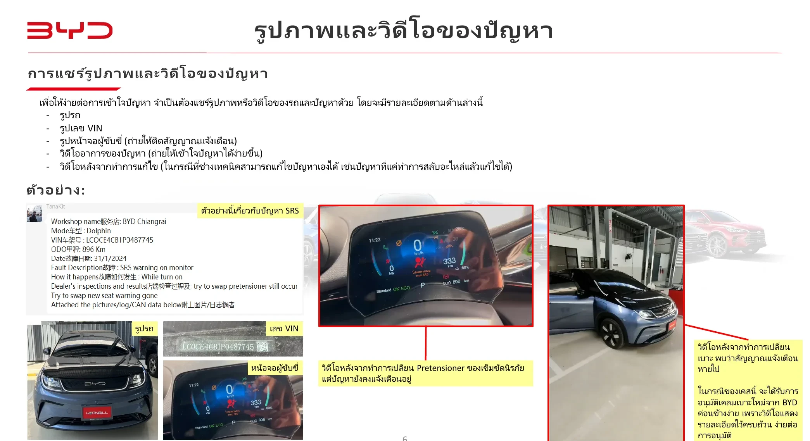
รูปภาพ/วิดีโอของปัญหา — ตัวอย่างเคส SRS: รูปรถ, เลข VIN, หน้าจอผู้ขับ (ติดสัญญาณเตือน), วิดีโออาการ ที่มา: BYD/Rever — Fault Feedback
5 ข้อมูลที่ใช้แชร์
ข้อมูล รายละเอียด 1. รูปภาพ/วิดีโอ รูปรถ, เลข VIN, หน้าจอผู้ขับ (ถ่ายให้ติดสัญญาณเตือน), วิดีโออาการ และวิดีโอหลังแก้ไข 2. VDS report แชร์ทุกหน้า เพราะชื่อกล่อง ECU และเวอร์ชันจำเป็นต่อการวิเคราะห์ 3. Data flow อ่านค่าการทำงานของแต่ละ ECU เช่น แรงดันแต่ละเซลล์แบตเตอรี่ (ปกติ ~3.2V) 4. CAN data เก็บจาก VDCI2 (ใช้บ่อยสุด) หรือ CANFD-200U (เจาะจงแต่ละ Network เช่น Body net 500 kbps)
ทำไมข้อมูลครบจึงสำคัญ
ตัวอย่างเคสปัญหาการชาร์จ: VDS report ระบุปัญหาที่ระบบจัดการแบตเตอรี่ (BASU) และ Data flow แสดงเซลล์ที่ 68 แรงดันต่ำมาก / เซลล์ที่ 69 สูงมาก (ปกติควร ~3.2V) ทำให้พิจารณาเปลี่ยนแบตเตอรี่ก้อนใหม่และอนุมัติเคลมได้ง่ายขึ้น เพราะมีหลักฐานครบถ้วน
เนื้อหาและภาพประกอบจากคอร์สอบรม BYD: 80_Introduction of Fault Feedback (13 สไลด์)
ตารางสเปครถทุกรุ่น
Full Technical Specifications — ทุกรุ่นที่จำหน่ายโดย Rever Automotive
ข้อมูลดึงจากหน้า tech-spec ของ reverautomotive.com (อัปเดต มิ.ย. 2026) — ใช้อ้างอิงภายใน
ATTO 1
ATTO 2
ATTO 3
DOLPHIN
SEAL
SEAL 5 DM-i
SEAL 6 DM-i
SEALION 5 DM-i
SEALION 7
M6
กำลังสูงสุด 135 นิวตัน-เมตร
0–100 กม./ชม. 55 กิโลวัตต์
ระยะทาง 380 กิโลเมตร
ความจุแบตเตอรี่ 38.88 กิโลวัตต์-ชั่วโมง
หัวชาร์จ 4.9 วินาที
รุ่นย่อย: Dynamic
ขนาดและน้ำหนัก ความยาว (มิลลิเมตร) 3,925 ความกว้าง (มิลลิเมตร) 1,720 ความสูง (มิลลิเมตร) 1,590 ระยะห่างของล้อ คู่หน้า / คู่หลัง (มิลลิเมตร) 1,500 /1,485 ระยะฐานล้อ (มิลลิเมตร) 2,500 ความสูงใต้ท้องรถรวมน้ำหนักบรรทุกสูงสุด (มิลลิเมตร) 120 รัศมีวงเลี้ยวแคบสุด (เมตร) 4.95 ความจุพื้นที่เก็บสัมภาระด้านท้าย (ลิตร) 230 น้ำหนักรถเปล่า (กิโลกรัม) 1,225 น้ำหนักรถรวมน้ำหนักบรรทุกสูงสุด (กิโลกรัม) 1,635
ระบบส่งกำลังและสมรรถนะ ระบบขับเคลื่อน ขับเคลื่อนล้อหน้า Front-Wheel Drive ประเภทชุดมอเตอร์ไฟฟ้าหน้า มอเตอร์ซิงโครนัสชนิดแม่เหล็กถาวร (PMS) Permanent Magnet Synchronous Motor (PMS) กำลังสูงสุด (กิโลวัตต์) 55 แรงบิดสูงสุด (นิวตัน-เมตร) 135 อัตราเร่ง 0 - 50 กิโลเมตร / ชั่วโมง (วินาที) 4.9 โหมดการขับขี่ ECO/ Normal/ Sport
แบตเตอรี่และการชาร์จ ประเภทแบตเตอรี่ BYD Blade Battery ความจุแบตเตอรี่สูงสุด (กิโลวัตต์ - ชั่วโมง) 30.08 ระยะทางวิ่งสูงสุด ตามมาตรฐาน NEDC (กิโลเมตร) 300 สายชาร์จแบบพกพา (Mode 2) ● รองรับหัวชาร์จแบบ AC Type 2 - กำลังสูงสุด (กิโลวัตต์) 6.6 รองรับหัวชาร์จแบบ DC CCS 2 - กำลังสูงสุด (กิโลวัตต์) 30 ระบบ VtoL (Vehicle to Load) ● อุปกรณ์เสริมสำหรับระบบ VtoL ● ระบบเบรกพร้อมระบบชาร์จพลังงานกลับอัตโนมัติ (Regenerative Braking) ●
ระบบกันสะเทือนและระบบเบรก ระบบกันสะเทือนด้านหน้า แม็คเฟอร์สันสตรัท Macpherson Strut ระบบกันสะเทือนด้านหลัง ทอร์ชันบีม Torsion Beam ระบบเบรกด้านหน้า ดิสก์เบรกแบบระบายอากาศ Ventilated Disc ระบบเบรกด้านหลัง ดิสก์เบรก Disc
ล้อและยาง ล้ออัลลอย (นิ้ว) 16 ขนาดยาง 185/55 R16 ชุดซ่อมยางฉุกเฉิน ● อุปกรณ์ซ่อมรถฉุกเฉิน ●
อุปกรณ์มาตรฐานภายนอก ไฟหน้าแบบ LED ● ระบบเปิด-ปิดไฟหน้าอัตโนมัติ ● ระบบปรับระดับความสูงไฟหน้าด้วยตนเอง ● ฟังก์ชันหน่วงเวลาการปิดไฟหน้า
Follow-Me-Home ● ไฟส่องสว่างสำหรับการขับขี่ในเวลากลางวันแบบ LED ● ไฟท้ายแบบ LED ● ไฟเบรกดวงที่ 3 แบบ LED ● ระบบปัดน้ำฝนแบบหน่วงเวลา ● กระจกมองข้างปรับองศาไฟฟ้า ● กระจกหลังพร้อมระบบทำความร้อนไล่ฝ้า ● เสาอากาศแบบครีบฉลาม ●
อุปกรณ์มาตรฐานภายใน พวงมาลัยแบบมัลติฟังก์ชัน ● พวงมาลัยปรับได้ 2 ทิศทาง Tilt พวงมาลัยแบบหุ้มหนังสังเคราะห์ ● หน้าจอเรือนไมล์ (นิ้ว) 7 วัสดุหุ้มเบาะ หนังสังเคราะห์ Synthetic Leather ที่บังแดดด้านหน้าพร้อมกระจกและไฟส่องสว่าง ● เบาะนั่งผู้ขับขี่ปรับ 4 ทิศทาง ● เบาะนั่งผู้โดยสารด้านหน้าปรับ 4 ทิศทาง ● พนักพิงเบาะโดยสารด้านหลังพับแบบได้ ● พนักพิงศีรษะที่เบาะนั่งผู้โดยสารด้านหลัง ปรับระดับสูง-ต่ำได้ ● จุดยึดเบาะนั่งเด็กแบบ ISOFIX ●
ระบบมัลติมีเดียและความสะดวกสบาย หน้าจอสัมผัสระบบมัลติมีเดีย (นิ้ว) 10.1 รองรับการเชื่อมต่อโทรศัพท์มือถือผ่านบลูทูธ ● รองรับ Apple CarPlay® และ Android Auto™ ● ระบบสั่งงานด้วยเสียง - ภาษาไทย / ภาษาอังกฤษ ● วิทยุ FM ● ลำโพง (ตำแหน่ง) 4 ช่อง USB-C และ USB-A อย่างละ 1 ตำแหน่ง สำหรับผู้โดยสารด้านหน้า ● ระบบ Keyless Entry และ Keyless Start ● ระบบกุญแจแบบบัตรอิเล็กทรอนิกส์ NFC (NFC Card) ● BYD Digital Key ● ช่องจ่ายไฟ 12V ● ระบบปรับอากาศ ● ระบบกรองฝุ่น PM2.5 ● เชื่อมต่อสัญญาณอินเทอร์เน็ต สำหรับใช้งาน BYD App และการอัปเดตซอฟต์แวร์ (OTA) ● รองรับการอัปเดตซอฟต์แวร์ผ่านสัญญาณอินเทอร์เน็ต (OTA) ●
ระบบความปลอดภัย ถุงลมนิรภัยคู่หน้า - ฝั่งคนขับและผู้โดยสารด้านหน้า ● ม่านถุงลมนิรภัยด้านข้าง ด้านหน้าและด้านหลัง ● ระบบเตือนคาดเข็มขัดนิรภัย ด้านหน้าและด้านหลัง ● กล้องมองภาพด้านหลัง ● เซนเซอร์ช่วยตรวจจับวัตถุด้านหลัง (ตำแหน่ง) 3 ระบบช่วยเบรกป้องกันล้อล็อก (ABS) ● ระบบช่วยป้องกันการลื่นไถลขณะขับขี่ (TCS) ● ระบบควบคุมการกระจายแรงเบรก (EBD) ● ระบบควบคุมการทรงตัวบนทางลาดชัน (HHC) ● ระบบช่วยควบคุมการไหลของรถอัตโนมัติ (AVH) ● ระบบช่วยกระจายแรงเบรกอัจฉริยะ (HBA) ● ระบบควบคุมการทรงตัวของตัวรถขณะเข้าโค้ง (VDC) ● ระบบตรวจสอบแรงดันลมยาง (TPMS) ●
สีภายนอก สีขาว Shell White ● สีดำ Quantum Black ●
รุ่นย่อย: Premium
ขนาดและน้ำหนัก ความยาว (มิลลิเมตร) 3,925 ความกว้าง (มิลลิเมตร) 1,720 ความสูง (มิลลิเมตร) 1,590 ระยะห่างของล้อ คู่หน้า / คู่หลัง (มิลลิเมตร) 1,500 /1,485 ระยะฐานล้อ (มิลลิเมตร) 2,500 ความสูงใต้ท้องรถรวมน้ำหนักบรรทุกสูงสุด (มิลลิเมตร) 120 รัศมีวงเลี้ยวแคบสุด (เมตร) 4.95 ความจุพื้นที่เก็บสัมภาระด้านท้าย (ลิตร) 230 น้ำหนักรถเปล่า (กิโลกรัม) 1,280 น้ำหนักรถรวมน้ำหนักบรรทุกสูงสุด (กิโลกรัม) 1,690
ระบบส่งกำลังและสมรรถนะ ระบบขับเคลื่อน ขับเคลื่อนล้อหน้า Front-Wheel Drive ประเภทชุดมอเตอร์ไฟฟ้าหน้า มอเตอร์ซิงโครนัสชนิดแม่เหล็กถาวร (PMS) Permanent Magnet Synchronous Motor (PMS) กำลังสูงสุด (กิโลวัตต์) 55 แรงบิดสูงสุด (นิวตัน-เมตร) 135 อัตราเร่ง 0 - 50 กิโลเมตร / ชั่วโมง (วินาที) 4.9 โหมดการขับขี่ ECO/ Normal/ Sport
แบตเตอรี่และการชาร์จ ประเภทแบตเตอรี่ BYD Blade Battery ความจุแบตเตอรี่สูงสุด (กิโลวัตต์ - ชั่วโมง) 38.88 ระยะทางวิ่งสูงสุด ตามมาตรฐาน NEDC (กิโลเมตร) 380 สายชาร์จแบบพกพา (Mode 2) ● รองรับหัวชาร์จแบบ AC Type 2 - กำลังสูงสุด (กิโลวัตต์) 6.6 รองรับหัวชาร์จแบบ DC CCS 2 - กำลังสูงสุด (กิโลวัตต์) 40 ระบบ VtoL (Vehicle to Load) ● อุปกรณ์เสริมสำหรับระบบ VtoL ● ระบบเบรกพร้อมระบบชาร์จพลังงานกลับอัตโนมัติ (Regenerative Braking) ●
ระบบกันสะเทือนและระบบเบรก ระบบกันสะเทือนด้านหน้า แม็คเฟอร์สันสตรัท Macpherson Strut ระบบกันสะเทือนด้านหลัง ทอร์ชันบีม Torsion Beam ระบบเบรกด้านหน้า ดิสก์เบรกแบบระบายอากาศ Ventilated Disc ระบบเบรกด้านหลัง ดิสก์เบรก Disc
ล้อและยาง ล้ออัลลอย (นิ้ว) 16 ขนาดยาง 185/55 R16 ชุดซ่อมยางฉุกเฉิน ● อุปกรณ์ซ่อมรถฉุกเฉิน ●
อุปกรณ์มาตรฐานภายนอก ไฟหน้าแบบ LED ● ระบบเปิด-ปิดไฟหน้าอัตโนมัติ ● ระบบปรับระดับความสูงไฟหน้าด้วยตนเอง ● ฟังก์ชันหน่วงเวลาการปิดไฟหน้า
Follow-Me-Home ● ไฟส่องสว่างสำหรับการขับขี่ในเวลากลางวันแบบ LED ● ไฟท้ายแบบ LED ● ไฟเบรกดวงที่ 3 แบบ LED ● ระบบปัดน้ำฝนแบบหน่วงเวลา ● กระจกมองข้างปรับองศาไฟฟ้า ● กระจกหลังพร้อมระบบทำความร้อนไล่ฝ้า ● เสาอากาศแบบครีบฉลาม ●
อุปกรณ์มาตรฐานภายใน พวงมาลัยแบบมัลติฟังก์ชัน ● พวงมาลัยปรับได้ 4 ทิศทาง Tilt & Telescopic พวงมาลัยแบบหุ้มหนังสังเคราะห์ ● หน้าจอเรือนไมล์ (นิ้ว) 7 วัสดุหุ้มเบาะ หนังสังเคราะห์ Synthetic Leather กระจกด้านผู้ขับขี่เปิด-ปิดอัตโนมัติแบบสัมผัสสวิตช์ครั้งเดียว พร้อมระบบป้องกันการหนีบ ● ที่บังแดดด้านหน้าพร้อมกระจกและไฟส่องสว่าง ● เบาะนั่งผู้ขับขี่ปรับไฟฟ้า 6 ทิศทาง ● เบาะนั่งผู้โดยสารด้านหน้าปรับ 4 ทิศทาง ● พนักพิงเบาะโดยสารด้านหลังพับแบบได้ ● พนักพิงศีรษะที่เบาะนั่งผู้โดยสารด้านหลัง ปรับระดับสูง-ต่ำได้ ● จุดยึดเบาะนั่งเด็กแบบ ISOFIX ●
ระบบมัลติมีเดียและความสะดวกสบาย หน้าจอสัมผัสระบบมัลติมีเดีย (นิ้ว) 10.1 รองรับการเชื่อมต่อโทรศัพท์มือถือผ่านบลูทูธ ● รองรับ Apple CarPlay® และ Android Auto™ ● ระบบสั่งงานด้วยเสียง - ภาษาไทย / ภาษาอังกฤษ ● วิทยุ FM ● ลำโพง (ตำแหน่ง) 4 ช่อง USB-C และ USB-A อย่างละ 1 ตำแหน่ง สำหรับผู้โดยสารด้านหน้า ● ที่ชาร์จโทรศัพท์มือถือแบบไร้สาย ● ระบบ Keyless Entry และ Keyless Start ● ระบบกุญแจแบบบัตรอิเล็กทรอนิกส์ NFC (NFC Card) ● BYD Digital Key ● ช่องจ่ายไฟ 12V ● ระบบปรับอากาศ ● ระบบกรองฝุ่น PM2.5 ● เชื่อมต่อสัญญาณอินเทอร์เน็ต สำหรับใช้งาน BYD App และการอัปเดตซอฟต์แวร์ (OTA) ● รองรับการอัปเดตซอฟต์แวร์ผ่านสัญญาณอินเทอร์เน็ต (OTA) ●
ระบบความปลอดภัย ถุงลมนิรภัยคู่หน้า - ฝั่งคนขับและผู้โดยสารด้านหน้า ● ถุงลมนิรภัยด้านข้าง - ฝั่งคนขับและผู้โดยสารด้านหน้า ● ม่านถุงลมนิรภัยด้านข้าง ด้านหน้าและด้านหลัง ● ระบบเตือนคาดเข็มขัดนิรภัย ด้านหน้าและด้านหลัง ● กล้องมองภาพด้านหลัง ● เซนเซอร์ช่วยตรวจจับวัตถุด้านหลัง (ตำแหน่ง) 3 ระบบช่วยเบรกป้องกันล้อล็อก (ABS) ● ระบบช่วยป้องกันการลื่นไถลขณะขับขี่ (TCS) ● ระบบควบคุมการกระจายแรงเบรก (EBD) ● ระบบควบคุมการทรงตัวบนทางลาดชัน (HHC) ● ระบบช่วยควบคุมการไหลของรถอัตโนมัติ (AVH) ● ระบบช่วยกระจายแรงเบรกอัจฉริยะ (HBA) ● ระบบควบคุมการทรงตัวของตัวรถขณะเข้าโค้ง (VDC) ● ระบบช่วยควบคุมความเร็วอัตโนมัติแบบแปรผัน (ACC) ● ระบบช่วยควบคุมความเร็วอัตโนมัติแบบแปรผันอัจฉริยะ (ICC) ● ระบบจดจำป้ายสัญญาณจราจร (TSR) ● ระบบช่วยควบคุมความเร็วอัจฉริยะ (ISLC) ● ระบบช่วยเบรกฉุกเฉินอัตโนมัติ (AEB) ● ระบบช่วยเตือนการชนด้านหน้า (FCW) ● ระบบช่วยเตือนเมื่อรถออกนอกเลน (LDW) ● ระบบช่วยควบคุมรถไม่ให้ออกนอกช่องทางเดินรถ (LDP) ● ระบบช่วยควบคุมไฟสูงอัจฉริยะ (IHBC) ● ระบบตรวจสอบแรงดันลมยาง (TPMS) ●
สีภายนอก สีขาว Shell White ● สีดำ Quantum Black ● สีเขียว Pop Green ● สีฟ้า Velocity Blue ●
กำลังสูงสุด 130 กิโลวัตต์
0–100 กม./ชม. 7.9 วินาที
ระยะทาง 410 กิโลเมตร (NEDC)
ความจุแบตเตอรี่ 51.13 กิโลวัตต์-ชั่วโมง
หัวชาร์จ AC Type 2 (กําลังสูงสุด 7 kW)/ DC CCS2 (กำลังสูงสุด 82 kW)
รุ่นย่อย: Dynamic
ขนาดและน้ำหนัก ความยาว (มิลลิเมตร) 4,310 ความกว้าง (มิลลิเมตร) 1,830 ความสูง (มิลลิเมตร) 1,675 ระยะฐานล้อหน้า / หลัง (มิลลิเมตร) 1,570 / 1,570 ระยะฐานล้อ (มิลลิเมตร) 2,620 ความสูงใต้ท้องรถไม่รวมน้ำหนักบรรทุก (มิลลิเมตร) 170 ความสูงใต้ท้องรถรวมน้ำหนักบรรทุกสูงสุด (มิลลิเมตร) 150 ความจุพื้นที่เก็บสัมภาระด้านท้ายต่ำสุด (ลิตร) 380 ความจุพื้นที่เก็บสัมภาระด้านท้ายสูงสุด (ลิตร) 1,320 น้ำหนักรถเปล่า (กิโลกรัม) 1,555 น้ำหนักรถรวมน้ำหนักบรรทุกสูงสุด (กิโลกรัม) 1,965 รัศมีวงเลี้ยวแคบสุด (ม.) 5.25
ระบบส่งกำลังและสมรรถนะ ประเภทมอเตอร์ มอเตอร์ซิงโครนัสชนิดแม่เหล็กถาวร (PMS) Permanent Magnet Synchronous Motor (PMS) ระบบขับเคลื่อน ขับเคลื่อนล้อหน้า Front-Wheel Drive กำลังสูงสุด (กิโลวัตต์) 130 แรงบิดสูงสุด (นิวตันเมตร) 290 อัตราเร่ง 0-100 กม./ชม. (วินาที) 7.9
แบตเตอรี่และการชาร์จ ประเภทแบตเตอรี่ BYD Blade Battery ความจุแบตเตอรี่ (กิโลวัตต์-ชั่วโมง) 51.13 ระยะทางวิ่ง NEDC (กม.) 410 สายชาร์จแบบพกพา (Mode 2) ● รองรับหัวชาร์จแบบ AC Type 2 - กำลังสูงสุด
(กิโลวัตต์) 7 กิโลวัตต์ 7 kW รองรับหัวชาร์จ DC CCS 2 กำลังสูงสุด
(กิโลวัตต์) 82 กิโลวัตต์ 82 kW ระบบ VtoL (Vehicle to Load) ● อุปกรณ์เสริมสำหรับระบบ VtoL ●
ระบบกันสะเทือนและระบบเบรก ระบบกันสะเทือนหน้า แม็คเฟอร์สันสตรัท Macpherson Strut ระบบกันสะเทือนหลัง ทอร์ชั่นบีม Torsion Beam ระบบเบรกหน้า ดิสก์เบรกแบบระบายอากาศ Ventilated Disc ระบบเบรกหลัง ดิสก์เบรก Disc
ล้อและยาง ประเภทล้อ ล้ออัลลอย Alloy ขนาดยาง 215/65 R16 ชุดซ่อมยางฉุกเฉิน ●
อุปกรณ์มาตรฐานภายนอก ไฟหน้า LED ● ระบบเปิด-ปิดไฟหน้าอัตโนมัติ ● ฟังก์ชันหน่วงเวลาการปิดไฟหน้า
Follow-Me-Home ● ไฟส่องสว่างสำหรับการขับขี่เวลากลางวันแบบ LED ● ไฟท้าย LED ● ไฟเบรกดวงที่สามแบบ LED ● ระบบปัดน้ำฝนอัตโนมัติ ● กระจกมองข้างปรับและพับไฟฟ้าพร้อมระบบไล่ฝ้า ●
อุปกรณ์มาตรฐานภายใน พวงมาลัยมัลติฟังก์ชัน ● ระบบพวงมาลัยไฟฟ้า EPS ● หน้าจอเรือนไมล์ผู้ขับขี่แบบ LCD ขนาด (นิ้ว) 8.8 กระจกเปิด-ปิดอัตโนมัติแบบสัมผัสสวิตช์ครั้งเดียวพร้อมระบบป้องกันการหนีบ ด้านผู้ขับขี่ Driver Side จำนวนที่นั่ง 5 วัสดุหุ้มเบาะ หนังสังเคราะห์ Synthetic Leather พื้นที่เก็บของคอนโซลกลาง ● พนักพิงเบาะโดยสารด้านหลังพับแบบ 60/40 ● ไฟอ่านแผนที่ด้านหน้าแบบ LED ● ไฟอ่านแผนที่ด้านหลังแบบ LED ● ไฟส่องสว่างในพื้นที่เก็บสัมภาระแบบ LED ● จุดยึดเบาะนั่งเด็ก ISOFIX ●
ระบบมัลติมีเดียและความสะดวกสบาย หน้าจอสัมผัสระบบมัลติมีเดีย
ปรับหมุนด้วยไฟฟ้า (นิ้ว) 10.1 รองรับการเชื่อมต่อโทรศัพท์มือถือผ่านบลูทูธ ● รองรับ Apple CarPlay® แบบไร้สาย และ Android Auto™ ● วิทยุ FM ● ลำโพง (ตำแหน่ง) 4 ระบบสั่งงานด้วยเสียง ภาษาไทย / อังกฤษ ● ช่อง USB-C และ USB-A อย่างละ 1 ตำแหน่ง สำหรับผู้โดยสารด้านหน้า ● ช่อง USB-C และ USB-A อย่างละ 1 ตำแหน่ง สำหรับผู้โดยสารด้านหลัง ● ช่องจ่ายไฟ 12V ● ระบบ Keyless Entry และ Keyless Start ● NFC Card ● BYD Digital Key ● Bluetooth Key ● ระบบปรับอากาศอัตโนมัติ ● ระบบกรองอากาศ PM 2.5 ● ช่องปรับอากาศตรงกลางด้านหลัง ● เชื่อมต่อสัญญาณอินเทอร์เน็ต สำหรับใช้งาน BYD App และการอัปเดตซอฟต์แวร์ (OTA) ● รองรับการอัปเดตซอฟต์แวร์ผ่านสัญญาณอินเทอร์เน็ต (OTA) ●
ระบบความปลอดภัย ถุงลมนิรภัยคู่หน้า - ฝั่งคนขับและผู้โดยสารด้านหน้า ● ถุงลมนิรภัยด้านข้าง - ฝั่งคนขับและผู้โดยสารด้านหน้า ● ม่านถุงลมนิรภัยด้านข้าง ด้านหน้าและด้านหลัง ● ระบบเตือนคาดเข็มขัดนิรภัย ด้านหน้าและด้านหลัง ● ระบบตรวจสอบแรงดันลมยาง (TPMS) ● ระบบช่วยเบรกป้องกันล้อล็อก (ABS) ● ระบบเบรกมือไฟฟ้า (EPB) ● ระบบช่วยควบคุมเสถียรภาพการทรงตัวของรถ (ESC) ● ระบบช่วยป้องกันการลื่นไถลขณะขับขี่ (TCS) ● ระบบควบคุมการกระจายแรงเบรก (EBD) ● ระบบควบคุมการทรงตัวบนทางลาดชัน (HHC) ● ระบบช่วยควบคุมกำลังมอเตอร์เมื่อเหยียบคันเร่งและเบรกพร้อมกัน (BOS) ● กล้องมองภาพด้านหลัง ● เซนเซอร์ช่วยตรวจจับวัตถุด้านหลัง
(4 ตำแหน่ง) ● ระบบช่วยควบคุมการไหลของรถอัตโนมัติ (AVH) ● ระบบช่วยควบคุมความเร็วอัตโนมัติแบบแปรผัน (ACC) ● ระบบช่วยควบคุมความเร็วอัตโนมัติแบบแปรผันอัจฉริยะ (ICC) ● ระบบแจ้งเตือนจำกัดความเร็วอัจฉริยะ (ISLW) ● ระบบจดจำป้ายสัญญาณจราจร (TSR) ● ระบบช่วยควบคุมความเร็วอัจฉริยะ (ISLC) ● ระบบช่วยเปิดไฟสูงอัตโนมัติอัจฉริยะ (IHBC) ● ระบบช่วยเตือนการชนด้านหน้า (FCW) ● ระบบช่วยเตือนเมื่อรถออกนอกเลน (LDW) ● ระบบช่วยรักษาช่องทางเดินรถฉุกเฉิน (ELKA) ● ระบบช่วยเบรกฉุกเฉินอัตโนมัติ (AEB) ● ระบบช่วยควบคุมรถไม่ให้ออกนอกช่องทางเดินรถ (LDP) ●
สีภายนอก Surge White (สีขาว) ● Quantum Black (สีดำ) ●
รุ่นย่อย: Premium
ขนาดและน้ำหนัก ความยาว (มิลลิเมตร) 4,310 ความกว้าง (มิลลิเมตร) 1,830 ความสูง (มิลลิเมตร) 1,675 ระยะฐานล้อหน้า / หลัง (มิลลิเมตร) 1,570 / 1,570 ระยะฐานล้อ (มิลลิเมตร) 2,620 ความสูงใต้ท้องรถไม่รวมน้ำหนักบรรทุก (มิลลิเมตร) 170 ความสูงใต้ท้องรถรวมน้ำหนักบรรทุกสูงสุด (มิลลิเมตร) 150 ความจุพื้นที่เก็บสัมภาระด้านท้ายต่ำสุด (ลิตร) 380 ความจุพื้นที่เก็บสัมภาระด้านท้ายสูงสุด (ลิตร) 1,320 น้ำหนักรถเปล่า (กิโลกรัม) 1,555 น้ำหนักรถรวมน้ำหนักบรรทุกสูงสุด (กิโลกรัม) 1,965 รัศมีวงเลี้ยวแคบสุด (ม.) 5.25
ระบบส่งกำลังและสมรรถนะ ประเภทมอเตอร์ มอเตอร์ซิงโครนัสชนิดแม่เหล็กถาวร (PMS) Permanent Magnet Synchronous Motor (PMS) ระบบขับเคลื่อน ขับเคลื่อนล้อหน้า Front-Wheel Drive กำลังสูงสุด (กิโลวัตต์) 130 แรงบิดสูงสุด (นิวตันเมตร) 290 อัตราเร่ง 0-100 กม./ชม. (วินาที) 7.9
แบตเตอรี่และการชาร์จ ประเภทแบตเตอรี่ BYD Blade Battery ความจุแบตเตอรี่ (กิโลวัตต์-ชั่วโมง) 51.13 ระยะทางวิ่ง NEDC (กม.) 410 สายชาร์จแบบพกพา (Mode 2) ● รองรับหัวชาร์จแบบ AC Type 2 - กำลังสูงสุด
(กิโลวัตต์) 7 กิโลวัตต์ 7 kW รองรับหัวชาร์จ DC CCS 2 กำลังสูงสุด
(กิโลวัตต์) 82 กิโลวัตต์ 82 kW ระบบ VtoL (Vehicle to Load) ● อุปกรณ์เสริมสำหรับระบบ VtoL ●
ระบบกันสะเทือนและระบบเบรก ระบบกันสะเทือนหน้า แม็คเฟอร์สันสตรัท Macpherson Strut ระบบกันสะเทือนหลัง ทอร์ชั่นบีม Torsion Beam ระบบเบรกหน้า ดิสก์เบรกแบบระบายอากาศ Ventilated Disc ระบบเบรกหลัง ดิสก์เบรก Disc
ล้อและยาง ประเภทล้อ ล้ออัลลอย Alloy ขนาดยาง 215/60 R17 ชุดซ่อมยางฉุกเฉิน ●
อุปกรณ์มาตรฐานภายนอก ไฟหน้า LED ● ระบบเปิด-ปิดไฟหน้าอัตโนมัติ ● ฟังก์ชันหน่วงเวลาการปิดไฟหน้า
Follow-Me-Home ● ไฟส่องสว่างสำหรับการขับขี่เวลากลางวันแบบ LED ● ไฟท้าย LED ● ไฟเบรกดวงที่สามแบบ LED ● ระบบปัดน้ำฝนอัตโนมัติ ● กระจกมองข้างปรับและพับไฟฟ้าพร้อมระบบไล่ฝ้า ● กระจกมองข้างพับไฟฟ้า ●
อุปกรณ์มาตรฐานภายใน พวงมาลัยมัลติฟังก์ชัน ● ระบบพวงมาลัยไฟฟ้า EPS ● หน้าจอเรือนไมล์ผู้ขับขี่แบบ LCD ขนาด (นิ้ว) 8.8 กระจกมองหลังตัดแสงอัตโนมัติ ● กระจกเปิด-ปิดอัตโนมัติแบบสัมผัสสวิตช์ครั้งเดียวพร้อมระบบป้องกันการหนีบ ด้านหน้า และด้านหลัง 4 Doors จำนวนที่นั่ง 5 วัสดุหุ้มเบาะ หนังสังเคราะห์ Synthetic Leather เบาะคนขับปรับไฟฟ้า 6 ทิศทาง ● เบาะผู้โดยสารด้านหน้าปรับไฟฟ้า 4 ทิศทาง ● เบาะนั่งคู่หน้าแบบระบายอากาศ ● พื้นที่เก็บของคอนโซลกลาง ● พนักพิงเบาะโดยสารด้านหลังพับแบบ 60/40 ● ไฟตกแต่งภายในห้องโดยสาร ● ไฟอ่านแผนที่ด้านหน้าแบบ LED ● ไฟอ่านแผนที่ด้านหลังแบบ LED ● ไฟส่องสว่างในพื้นที่เก็บสัมภาระแบบ LED ● จุดยึดเบาะนั่งเด็ก ISOFIX ●
ระบบมัลติมีเดียและความสะดวกสบาย หน้าจอสัมผัสระบบมัลติมีเดีย
ปรับหมุนด้วยไฟฟ้า (นิ้ว) 12.8 รองรับการเชื่อมต่อโทรศัพท์มือถือผ่านบลูทูธ ● รองรับ Apple CarPlay® แบบไร้สาย และ Android Auto™ ● วิทยุ FM ● ลำโพง (ตำแหน่ง) 8 ระบบสั่งงานด้วยเสียง ภาษาไทย / อังกฤษ ● ช่อง USB-C และ USB-A อย่างละ 1 ตำแหน่ง สำหรับผู้โดยสารด้านหน้า ● ช่อง USB-C และ USB-A อย่างละ 1 ตำแหน่ง สำหรับผู้โดยสารด้านหลัง ● ช่องจ่ายไฟ 12V ● ที่ชาร์จโทรศัพท์มือถือแบบไร้สาย ● ระบบ Keyless Entry และ Keyless Start ● NFC Card ● BYD Digital Key ● Bluetooth Key ● ระบบปรับอากาศอัตโนมัติ ● ระบบกรองอากาศ PM 2.5 ● ช่องปรับอากาศตรงกลางด้านหลัง ● เชื่อมต่อสัญญาณอินเทอร์เน็ต สำหรับใช้งาน BYD App และการอัปเดตซอฟต์แวร์ (OTA) ● รองรับการอัปเดตซอฟต์แวร์ผ่านสัญญาณอินเทอร์เน็ต (OTA) ●
ระบบความปลอดภัย ถุงลมนิรภัยคู่หน้า - ฝั่งคนขับและผู้โดยสารด้านหน้า ● ถุงลมนิรภัยด้านข้าง - ฝั่งคนขับและผู้โดยสารด้านหน้า ● ม่านถุงลมนิรภัยด้านข้าง ด้านหน้าและด้านหลัง ● ระบบเตือนคาดเข็มขัดนิรภัย ด้านหน้าและด้านหลัง ● ระบบตรวจสอบแรงดันลมยาง (TPMS) ● ระบบช่วยเบรกป้องกันล้อล็อก (ABS) ● ระบบเบรกมือไฟฟ้า (EPB) ● ระบบช่วยควบคุมเสถียรภาพการทรงตัวของรถ (ESC) ● ระบบช่วยป้องกันการลื่นไถลขณะขับขี่ (TCS) ● ระบบควบคุมการกระจายแรงเบรก (EBD) ● ระบบควบคุมการทรงตัวบนทางลาดชัน (HHC) ● ระบบช่วยควบคุมกำลังมอเตอร์เมื่อเหยียบคันเร่งและเบรกพร้อมกัน (BOS) ● กล้องมองภาพรอบคัน 360 องศา ● เซนเซอร์ช่วยตรวจจับวัตถุด้านหน้า
(2 ตำแหน่ง) ● เซนเซอร์ช่วยตรวจจับวัตถุด้านหลัง
(4 ตำแหน่ง) ● ระบบช่วยควบคุมการไหลของรถอัตโนมัติ (AVH) ● ระบบช่วยควบคุมความเร็วอัตโนมัติแบบแปรผัน (ACC) ● ระบบช่วยควบคุมความเร็วอัตโนมัติแบบแปรผันอัจฉริยะ (ICC) ● ระบบแจ้งเตือนจำกัดความเร็วอัจฉริยะ (ISLW) ● ระบบจดจำป้ายสัญญาณจราจร (TSR) ● ระบบช่วยควบคุมความเร็วอัจฉริยะ (ISLC) ● ระบบช่วยเปิดไฟสูงอัตโนมัติอัจฉริยะ (IHBC) ● ระบบช่วยเตือนการชนด้านหน้า (FCW) ● ระบบช่วยเตือนการชนด้านหลัง (RCW) ● ระบบช่วยเตือนเมื่อมีรถผ่านในจุดอับสายตาขณะถอยหลัง (RCTA) ● ระบบช่วยเบรกเมื่อมีรถผ่านในจุดอับสายตาขณะถอยหลัง (RCTB) ● ระบบช่วยเตือนเมื่อรถออกนอกเลน (LDW) ● ระบบช่วยรักษาช่องทางเดินรถฉุกเฉิน (ELKA) ● ระบบช่วยเบรกฉุกเฉินอัตโนมัติ (AEB) ● ระบบช่วยควบคุมรถไม่ให้ออกนอกช่องทางเดินรถ (LDP) ● ระบบช่วยเตือนจุดอับสายตา (BSD) ● ระบบช่วยเตือนวัตถุเคลื่อนผ่านขณะเปิดประตู (DOW) ●
สีภายนอก Surge White (สีขาว) ● Quantum Black (สีดำ) ● Harbour Grey (สีเทา) ● Minimal Green (สีเขียว) ●
กำลังสูงสุด 150 กิโลวัตต์
0–100 กม./ชม. 7.3 วินาที
ระยะทาง 480 กิโลเมตร
ความจุแบตเตอรี่ 60.48 กิโลวัตต์-ชั่วโมง
หัวชาร์จ AC type 2 (7 กิโลวัตต์) / DC CCS2 (88 กิโลวัตต์)
รุ่นย่อย: Premium
ขนาดและน้ำหนัก ความยาว (มิลลิเมตร) 4,455 ความกว้าง (มิลลิเมตร) 1,875 ความสูง (มิลลิเมตร) 1,615 ระยะห่างของล้อคู่หน้าและหลัง (มิลลิเมตร) 1,575 / 1,580 ระยะฐานล้อ (มิลลิเมตร) 2,720 ความสูงใต้ท้องรถ (มิลลิเมตร) 175 ความสูงใต้ท้องรถ เมื่อมีผู้โดยสาร (มิลลิเมตร) 150 รัศมีวงเลี้ยวแคบสุด (เมตร) 5.35 ความจุพื้นที่เก็บสัมภาระท้ายรถ (ลิตร) 440 ความจุพื้นที่เก็บสัมภาระท้ายรถ เมื่อพับเบาะหลังทั้งหมด (ลิตร) 1,340 น้ำหนักรถเปล่า (กิโลกรัม) 1,680 น้ำหนักรถรวมผู้โดยสาร (กิโลกรัม) 2,090 จำนวนที่นั่ง 5
สมรรถนะ ประเภทมอเตอร์ไฟฟ้า Permanent Magnet Synchronous Motor กำลังสูงสุด (กิโลวัตต์) 150 แรงบิดสูงสุด (นิวตัน-เมตร) 310 อัตราเร่ง 0 - 100 กิโลเมตร / ชั่วโมง (วินาที) 7.9 ระยะทางวิ่งด้วยไฟฟ้าสูงสุด ตามมาตรฐาน NEDC Mode 410 ประเภทแบตเตอรี่ BYD Blade Battery ความจุแบตเตอรี่สูงสุด (กิโลวัตต์ - ชั่วโมง) 50.25
ระบบพวงมาลัย และระบบช่วงล่าง ระบบกันสะเทือนด้านหน้า แม็กเฟอร์สันสตรัท ระบบกันสะเทือนด้านหลัง มัลติลิงก์ ระบบเบรกด้านหน้า ดิสก์เบรกแบบมีช่องระบายความร้อน ระบบเบรกด้านหลัง ดิสก์เบรก ล้ออัลลอย 18 นิ้ว ขนาดยาง 235/50 R18
รุ่นย่อย: Extended
ขนาดและน้ำหนัก ความยาว (มิลลิเมตร) 4,455 ความกว้าง (มิลลิเมตร) 1,875 ความสูง (มิลลิเมตร) 1,615 ระยะห่างของล้อคู่หน้าและหลัง (มิลลิเมตร) 1,575 / 1,580 ระยะฐานล้อ (มิลลิเมตร) 2,720 ความสูงใต้ท้องรถ (มิลลิเมตร) 175 ความสูงใต้ท้องรถ เมื่อมีผู้โดยสาร (มิลลิเมตร) 150 รัศมีวงเลี้ยวแคบสุด (เมตร) 5.35 ความจุพื้นที่เก็บสัมภาระท้ายรถ (ลิตร) 440 ความจุพื้นที่เก็บสัมภาระท้ายรถ เมื่อพับเบาะหลังทั้งหมด (ลิตร) 1,340 น้ำหนักรถเปล่า (กิโลกรัม) 1,750 น้ำหนักรถรวมผู้โดยสาร (กิโลกรัม) 2,160 จำนวนที่นั่ง 5
สมรรถนะ ประเภทมอเตอร์ไฟฟ้า Permanent Magnet Synchronous Motor กำลังสูงสุด (กิโลวัตต์) 150 แรงบิดสูงสุด (นิวตัน-เมตร) 310 อัตราเร่ง 0 - 100 กิโลเมตร / ชั่วโมง (วินาที) 7.3 ระยะทางวิ่งด้วยไฟฟ้าสูงสุด ตามมาตรฐาน NEDC Mode 480 ประเภทแบตเตอรี่ BYD Blade Battery ความจุแบตเตอรี่สูงสุด (กิโลวัตต์ - ชั่วโมง) 60.48
ระบบพวงมาลัย และระบบช่วงล่าง ระบบกันสะเทือนด้านหน้า แม็กเฟอร์สันสตรัท ระบบกันสะเทือนด้านหลัง มัลติลิงก์ ระบบเบรกด้านหน้า ดิสก์เบรกแบบมีช่องระบายความร้อน ระบบเบรกด้านหลัง ดิสก์เบรก ล้ออัลลอย 18 นิ้ว ขนาดยาง 235/50 R18
กำลังสูงสุด 150 กิโลวัตต์
0–100 กม./ชม. 7 วินาที
ระยะทาง 490 กิโลเมตร
ความจุแบตเตอรี่ 60.48 กิโลวัตต์-ชั่วโมง
หัวชาร์จ AC Type 2 (7 กิโลวัตต์) / DC CCS 2 (80 กิโลวัตต์)
รุ่นย่อย: Extended Range
ขนาดและน้ำหนัก จำนวนที่นั่ง 5 ความยาว (มิลลิเมตร) 4,290 ความกว้าง (มิลลิเมตร) 1,770 ความสูง (มิลลิเมตร) 1,570 ระยะห่างของล้อ คู่หน้า / คู่หลัง (มิลลิเมตร) 1,530/1,530 ระยะฐานล้อ (มิลลิเมตร) 2,700 ความสูงใต้ท้องรถไม่รวมน้ำหนักบรรทุก (มิลลิเมตร) 155 ความสูงใต้ท้องรถรวมน้ำหนักบรรทุกสูงสุด (มิลลิเมตร) 130 รัศมีวงเลี้ยวแคบสุด (เมตร) 5.25 ความจุพื้นที่เก็บสัมภาระด้านท้าย (ลิตร) 345 ความจุพื้นที่เก็บสัมภาระด้านท้ายสูงสุด (ลิตร) 1,310 น้ำหนักรถเปล่า (กิโลกรัม) 1,658 น้ำหนักรถรวมน้ำหนักบรรทุกสูงสุด (กิโลกรัม) 2,068
ระบบส่งกำลังและสมรรถนะ ประเภทมอเตอร์ไฟฟ้า Permanent Magnet Synchronous Motor กำลังสูงสุด กิโลวัตต์ (แรงม้า) 150 (204) แรงบิดสูงสุด (นิวตัน-เมตร) 310 อัตราเร่ง 0 - 100 กิโลเมตร / ชั่วโมง (วินาที) 7 ระยะทางวิ่งด้วยไฟฟ้าสูงสุด ตามมาตรฐาน NEDC (กิโลเมตร) 490
แบตเตอรี่ขับเคลื่อน ประเภทแบตเตอรี่ BYD Blade Battery ความจุแบตเตอรี่สูงสุด (กิโลวัตต์ - ชั่วโมง) 60.48
ระบบกันสะเทือน ระบบกันสะเทือนด้านหน้า แม็คเฟอร์สันสตรัท ระบบกันสะเทือนด้านหลัง มัลติลิงก์
ระบบเบรก ระบบเบรกด้านหน้า ดิสก์เบรกแบบมีช่องระบายความร้อน ระบบเบรกด้านหลัง ดิสก์เบรก
ล้อและยาง ล้ออัลลอย 17 นิ้ว ขนาดยาง 205/50 R17
พลังงานใหม่ รองรับหัวชาร์จแบบ DC CCS2 (kW) 80
อุปกรณ์มาตรฐานภายใน ไฟส่องแผนที่ ด้านหน้า
ระบบความปลอดภัย เข็มขัดนิรภัยคู่หน้าแบบดึงกลับอัตโนมัติ ผ่อนแรง
รุ่นย่อย: Standard Range
ขนาดและน้ำหนัก จำนวนที่นั่ง 5 ความยาว (มิลลิเมตร) 4,290 ความกว้าง (มิลลิเมตร) 1,770 ความสูง (มิลลิเมตร) 1,570 ระยะห่างของล้อ คู่หน้า / คู่หลัง (มิลลิเมตร) 1,530/1,530 ระยะฐานล้อ (มิลลิเมตร) 2,700 ความสูงใต้ท้องรถไม่รวมน้ำหนักบรรทุก (มิลลิเมตร) 155 ความสูงใต้ท้องรถรวมน้ำหนักบรรทุกสูงสุด (มิลลิเมตร) 130 รัศมีวงเลี้ยวแคบสุด (เมตร) 5.25 ความจุพื้นที่เก็บสัมภาระด้านท้าย (ลิตร) 345 ความจุพื้นที่เก็บสัมภาระด้านท้ายสูงสุด (ลิตร) 1,310 น้ำหนักรถเปล่า (กิโลกรัม) 1,520 น้ำหนักรถรวมน้ำหนักบรรทุกสูงสุด (กิโลกรัม) 1,930
ระบบส่งกำลังและสมรรถนะ ประเภทมอเตอร์ไฟฟ้า Permanent Magnet Synchronous Motor กำลังสูงสุด กิโลวัตต์ (แรงม้า) 70 (95) แรงบิดสูงสุด (นิวตัน-เมตร) 180 อัตราเร่ง 0 - 100 กิโลเมตร / ชั่วโมง (วินาที) 12.5 ระยะทางวิ่งด้วยไฟฟ้าสูงสุด ตามมาตรฐาน NEDC (กิโลเมตร) 435
แบตเตอรี่ขับเคลื่อน ประเภทแบตเตอรี่ BYD Blade Battery ความจุแบตเตอรี่สูงสุด (กิโลวัตต์ - ชั่วโมง) 50.25
ระบบกันสะเทือน ระบบกันสะเทือนด้านหน้า แม็คเฟอร์สันสตรัท ระบบกันสะเทือนด้านหลัง ทอร์ชั่นบีม
ระบบเบรก ระบบเบรกด้านหน้า ดิสก์เบรกแบบมีช่องระบายความร้อน ระบบเบรกด้านหลัง ดิสก์เบรก
ล้อและยาง ล้ออัลลอย 16 นิ้ว ขนาดยาง 195/60 R16
พลังงานใหม่ รองรับหัวชาร์จแบบ DC CCS2 (kW) 60
อุปกรณ์มาตรฐานภายใน ไฟส่องแผนที่ ด้านหน้าและด้านหลัง
กำลังสูงสุด 390 กิโลวัตต์
0–100 กม./ชม. 3.8 วินาที
ระยะทาง 580 กิโลเมตร
ความจุแบตเตอรี่ 82.56 กิโลวัตต์-ชั่วโมง
หัวชาร์จ AC type 2 / DC CCS 2 (150 กิโลวัตต์)
รุ่นย่อย: Dynamic RWD
ขนาดและน้ำหนัก ความยาว (มิลลิเมตร) 4,800 ความกว้าง (มิลลิเมตร) 1,875 ความสูง (มิลลิเมตร) 1,460 ระยะห่างของล้อคู่หน้าและหลัง (มิลลิเมตร) 1,620 / 1,625 ระยะฐานล้อ (มิลลิเมตร) 2,920 รัศมีวงเลี้ยวแคบสุด (เมตร) 5.7 ความสูงใต้ท้องรถ (มิลลิเมตร) 120 ความจุที่เก็บสัมภาระด้านหน้า (ลิตร) 50 ความจุที่เก็บสัมภาระด้านหลัง (ลิตร) 400 น้ำหนักรถเปล่า (กิโลกรัม) 1,922 น้ำหนักรถรวมผู้โดยสาร (กิโลกรัม) 2,344
ระบบส่งกำลัง ระบบขับเคลื่อน RWD: Rear Wheel Drive ประเภทชุดมอเตอร์ไฟฟ้าด้านหลัง Permanent magnet synchronous motor กำลังสูงสุดุดมอเตอร์ไฟฟ้าด้านหลัง (กิโลวัตต์) 150 แรงบิดสูงสุดชุดมอเตอ์ไฟฟ้าด้านหลัง (นิวตัน-เมตร) 310 กำลังสูงสุด (กิโลเมตร) 150 แรงบิดสูงสุด (นิวตัน-เมตร) 310
ประสิทธิภาพ อัตราเร่ง 0 - 100 กิโลเมตร / ชั่วโมง (วินาที) 7.5 ระยะทางวิ่ง NEDC Combined Cycle (กิโลเมตร) 510 จำนวนที่นั่ง 5 ประเภทแบตเตอรี่ BYD Blade Battery (LFP) ความจุแบตเตอรี่สูงสุด (กิโลวัตต์ - ชั่วโมง) 61.44
ช่วงล่างและระบบเบรก ระบบกันสะเทือนด้านหน้า chassis.value.frontSuspension ระบบกันสะเทือนด้านหลัง chassis.value.rearSuspension ระบบเบรกหน้า chassis.value.discBrake ระบบเบรกหลัง chassis.value.discBrake คาลิปเปอร์เบรกด้านหน้า chassis.value.frontBrakeCaliper ชนิดของล้อ chassis.value.wheelType ขนาดยาง chassis.value.tyreSizeDynamic
รุ่นย่อย: Premium RWD
ขนาดและน้ำหนัก ความยาว (มิลลิเมตร) 4,800 ความกว้าง (มิลลิเมตร) 1,875 ความสูง (มิลลิเมตร) 1,460 ระยะห่างของล้อคู่หน้าและหลัง (มิลลิเมตร) 1,620 / 1,625 ระยะฐานล้อ (มิลลิเมตร) 2,920 รัศมีวงเลี้ยวแคบสุด (เมตร) 5.7 ความสูงใต้ท้องรถ (มิลลิเมตร) 120 ความจุที่เก็บสัมภาระด้านหน้า (ลิตร) 50 ความจุที่เก็บสัมภาระด้านหลัง (ลิตร) 400 น้ำหนักรถเปล่า (กิโลกรัม) 2,055 น้ำหนักรถรวมผู้โดยสาร (กิโลกรัม) 2,501
ระบบส่งกำลัง ระบบขับเคลื่อน RWD: Rear Wheel Drive ประเภทชุดมอเตอร์ไฟฟ้าด้านหลัง Permanent magnet synchronous motor กำลังสูงสุดุดมอเตอร์ไฟฟ้าด้านหลัง (กิโลวัตต์) 230 แรงบิดสูงสุดชุดมอเตอ์ไฟฟ้าด้านหลัง (นิวตัน-เมตร) 360 กำลังสูงสุด (กิโลเมตร) 230 แรงบิดสูงสุด (นิวตัน-เมตร) 360
ประสิทธิภาพ อัตราเร่ง 0 - 100 กิโลเมตร / ชั่วโมง (วินาที) 5.9 ระยะทางวิ่ง NEDC Combined Cycle (กิโลเมตร) 650 จำนวนที่นั่ง 5 ประเภทแบตเตอรี่ BYD Blade Battery (LFP) ความจุแบตเตอรี่สูงสุด (กิโลวัตต์ - ชั่วโมง) 82.56
ช่วงล่างและระบบเบรก ระบบกันสะเทือนด้านหน้า chassis.value.frontSuspension ระบบกันสะเทือนด้านหลัง chassis.value.rearSuspension ระบบเบรกหน้า chassis.value.discBrakePremium ระบบเบรกหลัง chassis.value.discBrake คาลิปเปอร์เบรกด้านหน้า chassis.value.frontBrakeCaliperPremium ชนิดของล้อ chassis.value.wheelType ขนาดยาง chassis.value.tyreSizeDynamicPremium
รุ่นย่อย: AWD Performance
ขนาดและน้ำหนัก ความยาว (มิลลิเมตร) 4,800 ความกว้าง (มิลลิเมตร) 1,875 ความสูง (มิลลิเมตร) 1,460 ระยะห่างของล้อคู่หน้าและหลัง (มิลลิเมตร) 1,620 / 1,625 ระยะฐานล้อ (มิลลิเมตร) 2,920 รัศมีวงเลี้ยวแคบสุด (เมตร) 5.7 ความสูงใต้ท้องรถ (มิลลิเมตร) 120 ความจุที่เก็บสัมภาระด้านหน้า (ลิตร) 50 ความจุที่เก็บสัมภาระด้านหลัง (ลิตร) 400 น้ำหนักรถเปล่า (กิโลกรัม) 2,185 น้ำหนักรถรวมผู้โดยสาร (กิโลกรัม) 2,631
ระบบส่งกำลัง ระบบขับเคลื่อน Four-Wheel Drive มอเตอร์ไฟฟ้าคู่หน้า Asynchronous Motor กำลังสูงสุดมอเตอร์ไฟฟ้าด้านหน้า (กิโลวัตต์) 160 แรงบิดสูงสุดชุดมอเตอ์ไฟฟ้าด้านหน้า (นิวตัน-เมตร) 310 ประเภทชุดมอเตอร์ไฟฟ้าด้านหลัง Permanent magnet synchronous motor กำลังสูงสุดุดมอเตอร์ไฟฟ้าด้านหลัง (กิโลวัตต์) 230 แรงบิดสูงสุดชุดมอเตอ์ไฟฟ้าด้านหลัง (นิวตัน-เมตร) 360 กำลังสูงสุด (กิโลเมตร) 390 แรงบิดสูงสุด (นิวตัน-เมตร) 670
ประสิทธิภาพ อัตราเร่ง 0 - 100 กิโลเมตร / ชั่วโมง (วินาที) 3.8 ระยะทางวิ่ง NEDC Combined Cycle (กิโลเมตร) 580 จำนวนที่นั่ง 5 ประเภทแบตเตอรี่ BYD Blade Battery (LFP) ความจุแบตเตอรี่สูงสุด (กิโลวัตต์ - ชั่วโมง) 82.56
ช่วงล่างและระบบเบรก ระบบกันสะเทือนด้านหน้า chassis.value.frontSuspension ระบบกันสะเทือนด้านหลัง chassis.value.rearSuspension ระบบกันสะเทือนปรับอัตโนมัติตามความเร็วแบบ FSD chassis.value.frequencySelective ระบบเบรกหน้า chassis.value.discBrakePremium ระบบเบรกหลัง chassis.value.discBrake คาลิปเปอร์เบรกด้านหน้า chassis.value.frontBrakeCaliperPremium ชนิดของล้อ chassis.value.wheelType ขนาดยาง chassis.value.tyreSizeDynamicPremium
กำลังสูงสุด 300 นิวตัน-เมตร
0–100 กม./ชม. 145 กิโลวัตต์
ระยะทาง 160 กิโลวัตต์
ความจุแบตเตอรี่ 18.3 กิโลวัตต์-ชั่วโมง
หัวชาร์จ 7.5 วินาที
รุ่นย่อย: Standard
ขนาดและน้ำหนัก ความยาว (มิลลิเมตร) 4,780 ความกว้าง (มิลลิเมตร) 1,837 ความสูง (มิลลิเมตร) 1,495 ระยะห่างของล้อ คู่หน้า / คู่หลัง (มิลลิเมตร) 1,580/1,590 ระยะฐานล้อ (มิลลิเมตร) 2,718 ความสูงใต้ท้องรถรวมน้ำหนักบรรทุกสูงสุด (มิลลิเมตร) 120 รัศมีวงเลี้ยวแคบสุด (เมตร) 5.5 ความจุพื้นที่เก็บสัมภาระด้านท้าย (ลิตร) 450
ระบบส่งกำลังและสมรรถนะ ระบบขับเคลื่อน ขับเคลื่อนล้อหน้า Front-Wheel Drive ประเภทชุดมอเตอร์ไฟฟ้าหน้า มอเตอร์ซิงโครนัสชนิดแม่เหล็กถาวร (PMS) Permanent Magnet Synchronous Motor (PMS) กำลังสูงสุดชุดมอเตอร์ไฟฟ้าหน้า (กิโลวัตต์) 145 แรงบิดสูงสุดชุดมอเตอร์ไฟฟ้าหน้า (นิวตัน-เมตร) 300 ประเภทเครื่องยนต์ เครื่องยนต์ Xiaoyun ออกแบบเฉพาะปลั๊กอินไฮบริด 1.5 ลิตร Xiaoyun Plug-in Hybrid 1.5 liter High-efficiency Engine กำลังสูงสุดเครื่องยนต์ (กิโลวัตต์) 72 แรงบิดสูงสุดเครื่องยนต์ (นิวตัน-เมตร) 122 อัตราเร่ง 0 - 100 กิโลเมตร / ชั่วโมง (วินาที) 7.6 รูปแบบพลังงานขับเคลื่อน HEV / EV HEV / EV โหมดการขับขี่ ECO/ Normal/ Sport ECO/ Normal/ Sport ความจุถังน้ำมัน (ลิตร) 45
แบตเตอรี่ขับเคลื่อน ประเภทแบตเตอรี่ BYD Blade Battery (LFP) ความจุแบตเตอรี่สูงสุด (กิโลวัตต์ - ชั่วโมง) 13.08
ระบบกันสะเทือนและระบบเบรก ระบบกันสะเทือนด้านหน้า แม็คเฟอร์สันสตรัท ระบบกันสะเทือนด้านหลัง ทอร์ชั่นบีม ระบบเบรกด้านหน้า ดิสก์เบรกแบบระบายอากาศ ระบบเบรกด้านหลัง ดิสก์เบรก
ล้อและยาง ล้ออัลลอย (นิ้ว) 17 ขนาดยาง 215/55 R17
พลังงานใหม่ ระยะทางวิ่งด้วยไฟฟ้าสูงสุด ตามมาตรฐาน NEDC (กิโลเมตร) 85 รองรับหัวชาร์จแบบ AC Type 2 - กำลังสูงสุด (kW) 6.6 อุปกรณ์เสริมสำหรับระบบ VtoL —
อุปกรณ์มาตรฐานภายนอก ระบบปัดน้ำฝนด้านหน้าอัตโนมัติ — กระจกมองข้างพับไฟฟ้าและพับเก็บอัตโนมัติ — ไฟส่องพื้นบริเวณภายนอกกระจกมองข้าง — ไฟส่องพื้นบริเวณประตูหน้า —
อุปกรณ์มาตรฐานภายใน หน้าจอเรือนไมล์ผู้ขับขี่แบบ LCD ขนาด (นิ้ว) 8.8 วัสดุหุ้มเบาะ ผ้า กระจกเปิด-ปิดอัตโนมัติแบบสัมผัสสวิตช์ครั้งเดียว พร้อมระบบป้องกันการหนีบ ด้านผู้ขับขี่
ระบบความปลอดภัย เซนเซอร์ช่วยตรวจจับวัตถุด้านหลัง (ตำแหน่ง) 4
ระบบมัลติมีเดียและความสะดวกสบาย หน้าจอสัมผัสระบบมัลติมีเดีย (นิ้ว) 10.1 ลำโพง (ตำแหน่ง) 4 ช่อง USB - C และ USB - A อย่างละ 1 ตำแหน่ง สำหรับผู้โดยสารด้านหลัง — ที่ชาร์จโทรศัพท์มือถือแบบไร้สาย — BYD Digital Key — seal5-dm-i.spec-info.multimediaAndConvenience.detail.4GNetworkCloudService —
สีภายนอก สีเทา Harbour Grey —
รุ่นย่อย: Dynamic
ขนาดและน้ำหนัก ความยาว (มิลลิเมตร) 4,780 ความกว้าง (มิลลิเมตร) 1,837 ความสูง (มิลลิเมตร) 1,495 ระยะห่างของล้อ คู่หน้า / คู่หลัง (มิลลิเมตร) 1,580/1,590 ระยะฐานล้อ (มิลลิเมตร) 2,718 ความสูงใต้ท้องรถรวมน้ำหนักบรรทุกสูงสุด (มิลลิเมตร) 120 รัศมีวงเลี้ยวแคบสุด (เมตร) 5.5 ความจุพื้นที่เก็บสัมภาระด้านท้าย (ลิตร) 450
ระบบส่งกำลังและสมรรถนะ ระบบขับเคลื่อน ขับเคลื่อนล้อหน้า Front-Wheel Drive ประเภทชุดมอเตอร์ไฟฟ้าหน้า มอเตอร์ซิงโครนัสชนิดแม่เหล็กถาวร (PMS) Permanent Magnet Synchronous Motor (PMS) กำลังสูงสุดชุดมอเตอร์ไฟฟ้าหน้า (กิโลวัตต์) 145 แรงบิดสูงสุดชุดมอเตอร์ไฟฟ้าหน้า (นิวตัน-เมตร) 300 ประเภทเครื่องยนต์ เครื่องยนต์ Xiaoyun ออกแบบเฉพาะปลั๊กอินไฮบริด 1.5 ลิตร Xiaoyun Plug-in Hybrid 1.5 liter High-efficiency Engine กำลังสูงสุดเครื่องยนต์ (กิโลวัตต์) 72 แรงบิดสูงสุดเครื่องยนต์ (นิวตัน-เมตร) 122 อัตราเร่ง 0 - 100 กิโลเมตร / ชั่วโมง (วินาที) 7.6 รูปแบบพลังงานขับเคลื่อน HEV / EV HEV / EV โหมดการขับขี่ ECO/ Normal/ Sport ECO/ Normal/ Sport ความจุถังน้ำมัน (ลิตร) 45
แบตเตอรี่ขับเคลื่อน ประเภทแบตเตอรี่ BYD Blade Battery (LFP) ความจุแบตเตอรี่สูงสุด (กิโลวัตต์ - ชั่วโมง) 13.08
ระบบกันสะเทือนและระบบเบรก ระบบกันสะเทือนด้านหน้า แม็คเฟอร์สันสตรัท ระบบกันสะเทือนด้านหลัง ทอร์ชั่นบีม ระบบเบรกด้านหน้า ดิสก์เบรกแบบระบายอากาศ ระบบเบรกด้านหลัง ดิสก์เบรก
ล้อและยาง ล้ออัลลอย (นิ้ว) 17 ขนาดยาง 215/55 R17
พลังงานใหม่ ระยะทางวิ่งด้วยไฟฟ้าสูงสุด ตามมาตรฐาน NEDC (กิโลเมตร) 85 รองรับหัวชาร์จแบบ AC Type 2 - กำลังสูงสุด (kW) 6.6 อุปกรณ์เสริมสำหรับระบบ VtoL —
อุปกรณ์มาตรฐานภายนอก ระบบปัดน้ำฝนด้านหน้าอัตโนมัติ — ไฟส่องพื้นบริเวณประตูหน้า —
อุปกรณ์มาตรฐานภายใน หน้าจอเรือนไมล์ผู้ขับขี่แบบ LCD ขนาด (นิ้ว) 8.8 วัสดุหุ้มเบาะ หนังสังเคราะห์ กระจกเปิด-ปิดอัตโนมัติแบบสัมผัสสวิตช์ครั้งเดียว พร้อมระบบป้องกันการหนีบ ด้านผู้ขับขี่
ระบบความปลอดภัย เซนเซอร์ช่วยตรวจจับวัตถุด้านหลัง (ตำแหน่ง) 4
ระบบมัลติมีเดียและความสะดวกสบาย หน้าจอสัมผัสระบบมัลติมีเดีย (นิ้ว) 12.8 ลำโพง (ตำแหน่ง) 6 ที่ชาร์จโทรศัพท์มือถือแบบไร้สาย —
สีภายนอก สีเทา Harbour Grey —
รุ่นย่อย: Premium
ขนาดและน้ำหนัก ความยาว (มิลลิเมตร) 4,780 ความกว้าง (มิลลิเมตร) 1,837 ความสูง (มิลลิเมตร) 1,495 ระยะห่างของล้อ คู่หน้า / คู่หลัง (มิลลิเมตร) 1,580/1,590 ระยะฐานล้อ (มิลลิเมตร) 2,718 ความสูงใต้ท้องรถรวมน้ำหนักบรรทุกสูงสุด (มิลลิเมตร) 120 รัศมีวงเลี้ยวแคบสุด (เมตร) 5.5 ความจุพื้นที่เก็บสัมภาระด้านท้าย (ลิตร) 450
ระบบส่งกำลังและสมรรถนะ ระบบขับเคลื่อน ขับเคลื่อนล้อหน้า Front-Wheel Drive ประเภทชุดมอเตอร์ไฟฟ้าหน้า มอเตอร์ซิงโครนัสชนิดแม่เหล็กถาวร (PMS) Permanent Magnet Synchronous Motor (PMS) กำลังสูงสุดชุดมอเตอร์ไฟฟ้าหน้า (กิโลวัตต์) 145 แรงบิดสูงสุดชุดมอเตอร์ไฟฟ้าหน้า (นิวตัน-เมตร) 300 ประเภทเครื่องยนต์ เครื่องยนต์ Xiaoyun ออกแบบเฉพาะปลั๊กอินไฮบริด 1.5 ลิตร Xiaoyun Plug-in Hybrid 1.5 liter High-efficiency Engine กำลังสูงสุดเครื่องยนต์ (กิโลวัตต์) 72 แรงบิดสูงสุดเครื่องยนต์ (นิวตัน-เมตร) 122 อัตราเร่ง 0 - 100 กิโลเมตร / ชั่วโมง (วินาที) 7.5 รูปแบบพลังงานขับเคลื่อน HEV / EV HEV / EV โหมดการขับขี่ ECO/ Normal/ Sport ECO/ Normal/ Sport ความจุถังน้ำมัน (ลิตร) 45
แบตเตอรี่ขับเคลื่อน ประเภทแบตเตอรี่ BYD Blade Battery (LFP) ความจุแบตเตอรี่สูงสุด (กิโลวัตต์ - ชั่วโมง) 18.3
ระบบกันสะเทือนและระบบเบรก ระบบกันสะเทือนด้านหน้า แม็คเฟอร์สันสตรัท ระบบกันสะเทือนด้านหลัง ทอร์ชั่นบีม ระบบเบรกด้านหน้า ดิสก์เบรกแบบระบายอากาศ ระบบเบรกด้านหลัง ดิสก์เบรก
ล้อและยาง ล้ออัลลอย (นิ้ว) 17 ขนาดยาง 215/55 R17
พลังงานใหม่ ระยะทางวิ่งด้วยไฟฟ้าสูงสุด ตามมาตรฐาน NEDC (กิโลเมตร) 120 รองรับหัวชาร์จแบบ AC Type 2 - กำลังสูงสุด (kW) 6.6
อุปกรณ์มาตรฐานภายใน หน้าจอเรือนไมล์ผู้ขับขี่แบบ LCD ขนาด (นิ้ว) 8.8 วัสดุหุ้มเบาะ หนังสังเคราะห์ กระจกเปิด-ปิดอัตโนมัติแบบสัมผัสสวิตช์ครั้งเดียว พร้อมระบบป้องกันการหนีบ ด้านหน้าและด้านหลัง
ระบบความปลอดภัย เซนเซอร์ช่วยตรวจจับวัตถุด้านหน้า (ตำแหน่ง) 2 เซนเซอร์ช่วยตรวจจับวัตถุด้านหลัง (ตำแหน่ง) 4
ระบบมัลติมีเดียและความสะดวกสบาย หน้าจอสัมผัสระบบมัลติมีเดีย (นิ้ว) 12.8 ลำโพง (ตำแหน่ง) 8
กำลังสูงสุด 160 กิโลวัตต์
0–100 กม./ชม. 7.5 วินาที
ระยะทาง 485 กิโลเมตร
ความจุแบตเตอรี่ 56.64 กิโลวัตต์ - ชั่วโมง
หัวชาร์จ AC type 2 (7 กิโลวัตต์) / DC CCS 2 (100 กิโลวัตต์)
รุ่นย่อย: Dynamic
ขนาดและน้ำหนัก ความยาว (มิลลิเมตร) 4,720 ความกว้าง (มิลลิเมตร) 1,860 ความสูง (มิลลิเมตร) 1,495 ระยะห่างของล้อ คู่หน้า / คู่หลัง (มิลลิเมตร) 1,610 ระยะฐานล้อ (มิลลิเมตร) 2,820 ความสูงใต้ท้องรถรวมน้ำหนักบรรทุกสูงสุด (มิลลิเมตร) 165 ความจุพื้นที่เก็บสัมภาระด้านหน้า (ลิตร) 65 ความจุพื้นที่เก็บสัมภาระด้านท้าย (ลิตร) 460 น้ำหนักรถเปล่า (กิโลกรัม) 1,780 น้ำหนักรถรวมน้ำหนักบรรทุกสูงสุด (กิโลกรัม) 2,190
ระบบส่งกำลังและสมรรถนะ ระบบขับเคลื่อน ขับเคลื่อนล้อหลัง Rear-Wheel Drive ประเภทชุดมอเตอร์ไฟฟ้า มอเตอร์ซิงโครนัสชนิดแม่เหล็กถาวร (PMS) Permanent Magnet Synchronous Motor (PMS) กำลังสูงสุดชุดมอเตอร์ไฟฟ้า
(กิโลวัตต์) 95 แรงบิดสูงสุดชุดมอเตอร์ไฟฟ้า
(นิวตัน-เมตร) 220 อัตราเร่ง 0 - 100 กิโลเมตร / ชั่วโมง (วินาที) 10.9
แบตเตอรี่ขับเคลื่อน ประเภทแบตเตอรี่ BYD Blade Battery ความจุแบตเตอรี่สูงสุด (กิโลวัตต์ - ชั่วโมง) 56.64 ระยะทางวิ่งสูงสุด ตามมาตรฐาน NEDC (กิโลเมตร) 485 สายชาร์จแบบพกพา (Mode 2) ● รองรับหัวชาร์จแบบ AC Type 2
- กำลังสูงสุด (กิโลวัตต์) 7 รองรับหัวชาร์จแบบ DC CCS 2
- กำลังสูงสุด (กิโลวัตต์) 100 ระบบ VtoL (Vehicle to Load) ● อุปกรณ์เสริมสำหรับระบบ VtoL ● ระบบเบรกพร้อมระบบชาร์จพลังงานกลับอัตโนมัติ (Regenerative Braking) ●
ระบบกันสะเทือนและระบบเบรก ระบบกันสะเทือนด้านหน้า แม็คเฟอร์สันสตรัท Macpherson Strut ระบบกันสะเทือนด้านหลัง มัลติลิงก์ Multi-link ระบบเบรกด้านหน้า ดิสก์เบรกแบบระบายอากาศ Ventilated Disc ระบบเบรกด้านหลัง ดิสก์เบรก Disc
ล้อและยาง ล้ออัลลอย (นิ้ว) 17 ขนาดยาง 225/55 R17 ชุดซ่อมยางฉุกเฉิน ● อุปกรณ์ซ่อมรถฉุกเฉิน ●
อุปกรณ์มาตรฐานภายนอก ไฟหน้าแบบ LED ● ระบบเปิด-ปิดไฟหน้าอัตโนมัติ ● ฟังก์ชันหน่วงเวลาการปิดไฟหน้า
Follow-Me-Home ● ไฟส่องสว่างสำหรับการขับขี่
ในเวลากลางวันแบบ LED ● ไฟท้ายแบบ LED ● ระบบปัดน้ำฝนด้านหน้าอัตโนมัติ ● กระจกมองข้างปรับองศาไฟฟ้า
พร้อมพับไฟฟ้า ● กระจกหลังพร้อมระบบทำความร้อนไล่ฝ้า ●
อุปกรณ์มาตรฐานภายใน พวงมาลัยแบบมัลติฟังก์ชัน ● พวงมาลัยแบบหุ้มหนังสังเคราะห์ ● หน้าจอเรือนไมล์ (นิ้ว) 8.8 วัสดุหุ้มเบาะ หนังสังเคราะห์ Synthetic Leather กระจกเปิด-ปิดอัตโนมัติแบบสัมผัสสวิตช์ครั้งเดียวพร้อมระบบป้องกันการหนีบ ● เบาะนั่งผู้ขับขี่ปรับไฟฟ้า 6 ทิศทาง ● เบาะนั่งผู้โดยสารด้านหน้าปรับ 4 ทิศทาง ● พนักพิงเบาะโดยสารด้านหลังพับแบบ 60/40 ● จุดยึดเบาะนั่งเด็กแบบ ISOFIX ●
ระบบมัลติมีเดียและความสะดวกสบาย หน้าจอสัมผัสระบบมัลติมีเดีย (นิ้ว) 12.8 รองรับการเชื่อมต่อโทรศัพท์มือถือผ่านบลูทูธ ● รองรับ Apple CarPlay® และ
Android Auto™ ● ระบบสั่งงานด้วยเสียง -
ภาษาไทย / ภาษาอังกฤษ ● วิทยุ FM ● ลำโพง (ตำแหน่ง) 6 ช่อง USB-C และ USB-A อย่างละ 1 ตำแหน่ง สำหรับผู้โดยสารด้านหน้า ● ช่อง USB-C และ USB-A อย่างละ 1 ตำแหน่ง สำหรับผู้โดยสารด้านหลัง ● ระบบ Keyless Entry และ Keyless Start ● ระบบกุญแจแบบบัตรอิเล็กทรอนิกส์ NFC (NFC Card) ● BYD Digital Key ● ช่องจ่ายไฟ 12V ● ระบบปรับอากาศอัตโนมัติแบบ 2 โซน ● ระบบกรองฝุ่น PM 2.5 ● เชื่อมต่อสัญญาณอินเทอร์เน็ต สำหรับใช้งาน BYD App และการอัปเดตซอฟต์แวร์ (OTA) ● รองรับการอัปเดตซอฟต์แวร์ผ่านสัญญาณอินเทอร์เน็ต (OTA) ●
ระบบความปลอดภัย ถุงลมนิรภัยคู่หน้า - ฝั่งคนขับและผู้โดยสารด้านหน้า ● ถุงลมนิรภัยด้านข้าง - ฝั่งคนขับและผู้โดยสารด้านหน้า ● ม่านถุงลมนิรภัยด้านข้าง ด้านหน้าและด้านหลัง ● ระบบเตือนคาดเข็มขัดนิรภัย
ด้านหน้าและด้านหลัง ● กล้องมองภาพรอบคัน 360 องศา ● เซนเซอร์ช่วยตรวจจับวัตถุด้านหน้า
(2 ตำแหน่ง) 2 เซนเซอร์ช่วยตรวจจับวัตถุด้านหลัง
(4 ตำแหน่ง) 4 ระบบช่วยเบรกป้องกันล้อล็อก (ABS) ● ระบบช่วยป้องกันการลื่นไถลขณะขับขี่ (TCS) ● ระบบช่วยควบคุมเสถียรภาพการทรงตัวของรถ (ESC) ● ระบบควบคุมการทรงตัวบนทางลาดชัน (HHC) ● ระบบช่วยควบคุมการไหลของรถอัตโนมัติ (AVH) ● ระบบช่วยกระจายแรงเบรกอัจฉริยะ (HBA) ● ระบบควบคุมการทรงตัวของตัวรถขณะเข้าโค้ง (VDC) ● ระบบช่วยควบคุมความเร็วอัตโนมัติแบบแปรผัน (ACC) ● ระบบช่วยควบคุมความเร็วอัตโนมัติแบบแปรผันอัจฉริยะ (ICC) ● ระบบช่วยการเตือนชนด้านหน้า (FCW) ● ระบบช่วยเบรกฉุกเฉินอัตโนมัติ (AEB) ● ระบบช่วยเตือนเมื่อรถออกนอกเลน (LDW) ● ระบบช่วยควบคุมรถไม่ให้ออกนอกช่องทางเดินรถ (LDP) ● ระบบช่วยควบคุมไฟสูงอัจฉริยะ (IHBC) ● ระบบตรวจสอบแรงดันลมยาง (TPMS) ●
สีภายนอก สีขาว Horizon White ● สีดำ Quantum Black ● สีเทา Harbour Grey ●
รุ่นย่อย: Premium
ขนาดและน้ำหนัก ความยาว (มิลลิเมตร) 4,720 ความกว้าง (มิลลิเมตร) 1,860 ความสูง (มิลลิเมตร) 1,495 ระยะห่างของล้อ คู่หน้า / คู่หลัง (มิลลิเมตร) 1,610 ระยะฐานล้อ (มิลลิเมตร) 2,820 ความสูงใต้ท้องรถรวมน้ำหนักบรรทุกสูงสุด (มิลลิเมตร) 165 ความจุพื้นที่เก็บสัมภาระด้านหน้า (ลิตร) 65 ความจุพื้นที่เก็บสัมภาระด้านท้าย (ลิตร) 460 น้ำหนักรถเปล่า (กิโลกรัม) 1,800 น้ำหนักรถรวมน้ำหนักบรรทุกสูงสุด (กิโลกรัม) 2,210
ระบบส่งกำลังและสมรรถนะ ระบบขับเคลื่อน ขับเคลื่อนล้อหลัง Rear-Wheel Drive ประเภทชุดมอเตอร์ไฟฟ้า มอเตอร์ซิงโครนัสชนิดแม่เหล็กถาวร (PMS) Permanent Magnet Synchronous Motor (PMS) กำลังสูงสุดชุดมอเตอร์ไฟฟ้า
(กิโลวัตต์) 160 แรงบิดสูงสุดชุดมอเตอร์ไฟฟ้า
(นิวตัน-เมตร) 330 อัตราเร่ง 0 - 100 กิโลเมตร / ชั่วโมง (วินาที) 7.5
แบตเตอรี่ขับเคลื่อน ประเภทแบตเตอรี่ BYD Blade Battery ความจุแบตเตอรี่สูงสุด (กิโลวัตต์ - ชั่วโมง) 56.64 ระยะทางวิ่งสูงสุด ตามมาตรฐาน NEDC (กิโลเมตร) 485 สายชาร์จแบบพกพา (Mode 2) ● รองรับหัวชาร์จแบบ AC Type 2
- กำลังสูงสุด (กิโลวัตต์) 7 รองรับหัวชาร์จแบบ DC CCS 2
- กำลังสูงสุด (กิโลวัตต์) 100 ระบบ VtoL (Vehicle to Load) ● อุปกรณ์เสริมสำหรับระบบ VtoL ● ระบบเบรกพร้อมระบบชาร์จพลังงานกลับอัตโนมัติ (Regenerative Braking) ●
ระบบกันสะเทือนและระบบเบรก ระบบกันสะเทือนด้านหน้า แม็คเฟอร์สันสตรัท Macpherson Strut ระบบกันสะเทือนด้านหลัง มัลติลิงก์ Multi-link ระบบเบรกด้านหน้า ดิสก์เบรกแบบระบายอากาศ Ventilated Disc ระบบเบรกด้านหลัง ดิสก์เบรก Disc
ล้อและยาง ล้ออัลลอย (นิ้ว) 18 ขนาดยาง 225/50 R18 ชุดซ่อมยางฉุกเฉิน ● อุปกรณ์ซ่อมรถฉุกเฉิน ●
อุปกรณ์มาตรฐานภายนอก ไฟหน้าแบบ LED ● ระบบเปิด-ปิดไฟหน้าอัตโนมัติ ● ฟังก์ชันหน่วงเวลาการปิดไฟหน้า
Follow-Me-Home ● ไฟส่องสว่างสำหรับการขับขี่
ในเวลากลางวันแบบ LED ● ไฟท้ายแบบ LED ● ระบบปัดน้ำฝนด้านหน้าอัตโนมัติ ● กระจกมองข้างปรับองศาไฟฟ้า
พร้อมพับไฟฟ้า ● กระจกหลังพร้อมระบบทำความร้อนไล่ฝ้า ● หลังคากระจกแบบพาโนรามิก
พร้อมม่านบังแดดไฟฟ้า ● ไฟส่องพื้นบริเวณประตูหน้า ●
อุปกรณ์มาตรฐานภายใน พวงมาลัยแบบมัลติฟังก์ชัน ● พวงมาลัยแบบหุ้มหนังสังเคราะห์ ● หน้าจอเรือนไมล์ (นิ้ว) 8.8 วัสดุหุ้มเบาะ หนังสังเคราะห์ Synthetic Leather กระจกเปิด-ปิดอัตโนมัติแบบสัมผัสสวิตช์ครั้งเดียวพร้อมระบบป้องกันการหนีบ ● เบาะนั่งผู้ขับขี่ปรับไฟฟ้า 8 ทิศทาง ● เบาะนั่งผู้โดยสารด้านหน้าปรับไฟฟ้า 4 ทิศทาง ● เบาะนั่งคู่หน้าแบบระบายอากาศ ● พนักพิงเบาะโดยสารด้านหลังพับแบบ 60/40 ● ไฟส่องพื้นบริเวณผู้ขับขี่และผู้โดยสารตอนหน้า ● ไฟสร้างบรรยากาศ ● จุดยึดเบาะนั่งเด็กแบบ ISOFIX ●
ระบบมัลติมีเดียและความสะดวกสบาย หน้าจอสัมผัสระบบมัลติมีเดีย (นิ้ว) 12.8 รองรับการเชื่อมต่อโทรศัพท์มือถือผ่านบลูทูธ ● รองรับ Apple CarPlay® และ
Android Auto™ ● ระบบสั่งงานด้วยเสียง -
ภาษาไทย / ภาษาอังกฤษ ● วิทยุ FM ● ลำโพง (ตำแหน่ง) 8 ช่อง USB-C และ USB-A อย่างละ 1 ตำแหน่ง สำหรับผู้โดยสารด้านหน้า ● ช่อง USB-C และ USB-A อย่างละ 1 ตำแหน่ง สำหรับผู้โดยสารด้านหลัง ● ที่ชาร์จโทรศัพท์มือถือแบบไร้สาย
(50W) ● ระบบ Keyless Entry และ Keyless Start ● ระบบกุญแจแบบบัตรอิเล็กทรอนิกส์ NFC (NFC Card) ● BYD Digital Key ● ช่องจ่ายไฟ 12V ● ระบบปรับอากาศอัตโนมัติแบบ 2 โซน ● ระบบกรองฝุ่น PM 2.5 ● เชื่อมต่อสัญญาณอินเทอร์เน็ต สำหรับใช้งาน BYD App และการอัปเดตซอฟต์แวร์ (OTA) ● รองรับการอัปเดตซอฟต์แวร์ผ่านสัญญาณอินเทอร์เน็ต (OTA) ●
ระบบความปลอดภัย ถุงลมนิรภัยคู่หน้า - ฝั่งคนขับและผู้โดยสารด้านหน้า ● ถุงลมนิรภัยด้านข้าง - ฝั่งคนขับและผู้โดยสารด้านหน้า ● ม่านถุงลมนิรภัยด้านข้าง ด้านหน้าและด้านหลัง ● ระบบเตือนคาดเข็มขัดนิรภัย
ด้านหน้าและด้านหลัง ● กล้องมองภาพรอบคัน 360 องศา ● เซนเซอร์ช่วยตรวจจับวัตถุด้านหน้า
(2 ตำแหน่ง) 2 เซนเซอร์ช่วยตรวจจับวัตถุด้านหลัง
(4 ตำแหน่ง) 4 ระบบช่วยเบรกป้องกันล้อล็อก (ABS) ● ระบบช่วยป้องกันการลื่นไถลขณะขับขี่ (TCS) ● ระบบช่วยควบคุมเสถียรภาพการทรงตัวของรถ (ESC) ● ระบบควบคุมการทรงตัวบนทางลาดชัน (HHC) ● ระบบช่วยควบคุมการไหลของรถอัตโนมัติ (AVH) ● ระบบช่วยกระจายแรงเบรกอัจฉริยะ (HBA) ● ระบบควบคุมการทรงตัวของตัวรถขณะเข้าโค้ง (VDC) ● ระบบช่วยควบคุมความเร็วอัตโนมัติแบบแปรผัน (ACC) ● ระบบช่วยควบคุมความเร็วอัตโนมัติแบบแปรผันอัจฉริยะ (ICC) ● ระบบช่วยการเตือนชนด้านหน้า (FCW) ● ระบบช่วยเบรกฉุกเฉินอัตโนมัติ (AEB) ● ระบบช่วยเตือนเมื่อรถออกนอกเลน (LDW) ● ระบบช่วยควบคุมรถไม่ให้ออกนอกช่องทางเดินรถ (LDP) ● ระบบช่วยควบคุมไฟสูงอัจฉริยะ (IHBC) ● ระบบตรวจสอบแรงดันลมยาง (TPMS) ●
สีภายนอก สีขาว Horizon White ● สีดำ Quantum Black ● สีเทา Harbour Grey ● สีเขียว Ash Green ●
กำลังสูงสุด 155 กิโลวัตต์
0–100 กม./ชม. 8.5 วินาที
ระยะทาง 110 กิโลเมตร
ความจุแบตเตอรี่ 18.3 กิโลวัตต์-ชั่วโมง
หัวชาร์จ AC Type 2 (กำลังสูงสุด 6.6 kW) / DC CCS 2 (กำลังสูงสุด 18 kW)
รุ่นย่อย: Dynamic
ขนาดและน้ำหนัก ความยาว (มิลลิเมตร) 4,735 ความกว้าง (มิลลิเมตร) 1,860 ความสูง (มิลลิเมตร) 1,710 ระยะห่างของล้อ คู่หน้า / คู่หลัง (มิลลิเมตร) 1,575 / 1,585 ระยะฐานล้อ (มิลลิเมตร) 2,712 ความสูงใต้ท้องรถไม่รวมน้ำหนักบรรทุกสูงสุด (มิลลิเมตร) 175 ความสูงใต้ท้องรถรวมน้ำหนักบรรทุกสูงสุด (มิลลิเมตร) 156 ความจุพื้นที่เก็บสัมภาระด้านท้ายต่ำสุด (ลิตร) 530 ความจุพื้นที่เก็บสัมภาระด้านท้ายสูงสุด (ลิตร) 1,482 น้ำหนักรถเปล่า (กิโลกรัม) 1,720 น้ำหนักรถรวมน้ำหนักบรรทุกสูงสุด (กิโลกรัม) 2,130
ระบบส่งกำลัง และสมรรถนะ ประเภทชุดมอเตอร์ไฟฟ้าหน้า มอเตอร์ซิงโครนัสชนิดแม่เหล็กถาวร (PMS) Permanent magnet synchronous motor ระบบขับเคลื่อน ขับเคลื่อนล้อหน้า Front-wheel drive กำลังสูงสุดชุดมอเตอร์ไฟฟ้าหน้า
(กิโลวัตต์) 120 แรงบิดสูงสุดชุดมอเตอร์ไฟฟ้าหน้า
(นิวตัน-เมตร) 210 ประเภทเครื่องยนต์ เครื่องยนต์ Xiao Yun ปลั๊กอินไฮบริด 1.5 ลิตร Xiao Yun Plug-in Hybrid 1.5 liter High-efficiency Engine กำลังสูงสุดของเครื่องยนต์ (กิโลวัตต์) 73 แรงบิดสูงสุดของเครื่องยนต์ (นิวตัน-เมตร) 125 กำลังสูงสุด (กิโลวัตต์) 155 แรงบิดสูงสุด (นิวตัน-เมตร) 210 ความจุถังน้ำมัน (ลิตร) 52 อัตราเร่ง 0-100 กิโลเมตร/ชั่วโมง 8.5
แบตเตอรี่และการชาร์จ ประเภทแบตเตอรี่ BYD Blade Battery ความจุแบตเตอรี่สูงสุด (กิโลวัตต์ - ชั่วโมง) 18.3 ระยะทางวิ่งด้วยไฟฟ้าสูงสุด ตามมาตรฐาน NEDC (กิโลเมตร) 110 สายชาร์จแบบพกพา (Mode 2) ● รองรับหัวชาร์จแบบ AC Type 2
(กำลังสูงสุด 3.3 kW) ● รองรับหัวชาร์จแบบ DC CCS2
(กำลังสูงสุด 18 kW) ● ระบบ VtoL (Vehicle to Load) ● อุปกรณ์เสริมสำหรับระบบ VtoL ● ระบบเบรกพร้อมระบบชาร์จพลังงานกลับอัตโนมัติ (Regenerative Braking) ●
ระบบกันสะเทือนและระบบเบรก ระบบกันสะเทือนด้านหน้า แม็คเฟอร์สันสตรัท Macpherson strut ระบบกันสะเทือนด้านหลัง มัลติลิงก์ Multi-link ระบบเบรกด้านหน้า ดิสก์เบรกแบบระบายอากาศ Ventilated disc ระบบเบรกด้านหลัง ดิสก์เบรก Disc
ล้อและยาง ประเภทล้อ ล้ออัลลอย Alloy ขนาดยาง 225/60 R18 ชุดซ่อมยางฉุกเฉิน ●
อุปกรณ์มาตรฐานภายนอก ไฟหน้าแบบ LED ● ระบบเปิด-ปิดไฟหน้าอัตโนมัติ ● ฟังก์ชันหน่วงเวลาการปิดไฟหน้า
Follow-Me-Home ● ไฟส่องสว่างสำหรับการขับขี่
ในเวลากลางวันแบบ LED ● ไฟท้ายแบบ LED ● ระบบไฟเลี้ยวด้านหลังแบบ Sequential ● ไฟเบรกบน ดวงที่ 3 แบบ LED ● ไฟตัดหมอกด้านหลัง ● กระจกมองข้างปรับไฟฟ้า
พร้อมระบบทำความร้อนไล่ฝ้า ● ราวหลังคา ● ที่ปัดน้ำฝนด้านหลัง ●
อุปกรณ์มาตรฐานภายใน พวงมาลัยแบบมัลติฟังก์ชัน ● ระบบพวงมาลัยไฟฟ้า (C-EPS) ● หน้าจอเรือนไมล์ผู้ขับขี่แบบ LCD ขนาด (นิ้ว) 8.8 ไฟส่องแผนที่ ด้านหน้า ● ไฟส่องแผนที่ สำหรับผู้โดยสารด้านหลัง ● กระจกเปิด-ปิดอัตโนมัติแบบสัมผัสสวิต์ครั้งเดียว พร้อมระบบป้องกันการหนีบ ด้านผู้ขับขี่ Driver side ช่องเก็บของคอนโซลกลาง ● ช่องเก็บแว่นตาบริเวณเหนือศีรษะ ● จำนวนที่นั่ง 5 เบาะนั่งแบบหุ้มหนังสังเคราะห์ ● พนักพิงเบาะโดยสารด้านหลังพับแบบ 60/40 ● ที่พักแขนด้านหลัง พร้อมที่วางแก้ว 2 ช่อง ● ที่บังแดดด้านหน้าพร้อมกระจก
และไฟส่องสว่าง ● ไฟส่องสว่างในพื้นที่เก็บสัมภาระ ● จุดยึดเบาะนั่งเด็กแบบ ISOFIX ●
ระบบมัลติมีเดีย และความสะดวกสบาย หน้าจอสัมผัสระบบมัลติมีเดีย (นิ้ว) 10.1 รองรับการเชื่อมต่อโทรศัพท์มือถือผ่านบลูทูธ ● รองรับ Apple CarPlay® และ
Android Auto™ ● วิทยุ FM ● ลำโพง (ตำแหน่ง) 6 ระบบสั่งงานด้วยเสียงภาษาไทย /
ภาษาอังกฤษ ● มิวสิคสตรีมมิ่ง ● ช่อง USB - C และ USB - A อย่างละ 1 ตำแหน่ง สำหรับผู้โดยสารด้านหน้า ● ช่อง USB - C และ USB - A อย่างละ 1 ตำแหน่ง สำหรับผู้โดยสารด้านหลัง ● ช่องจ่ายไฟ 12V ● ระบบปรับอากาศอัตโนมัติ ● ระบบกรองฝุ่น PM 2.5 ● ช่องปรับอากาศตรงกลางด้านหลัง ● ระบบ Keyless Entry และ Keyless Start ● ระบบกุญแจแบบบัตรอิเล็กทรอนิกส์ NFC (NFC Card) ● Bluetooth Key ● BYD Digital Key ● เชื่อมต่อสัญญาณอินเทอร์เน็ต สำหรับใช้งาน BYD app และการอัปเดตซอฟต์แวร์ (OTA) ● รองรับการอัปเดตซอฟต์แวร์ผ่านสัญญาณอินเทอร์เน็ต (OTA) ●
ระบบความปลอดภัย ถุงลมนิรภัยคู่หน้า - ฝั่งคนขับและผู้โดยสารตอนหน้า ● ถุงลมนิรภัยด้านข้าง - ฝั่งคนขับและผู้โดยสารตอนหน้า ● ม่านถุงลมนิรภัยด้านข้าง ด้านหน้าและด้านหลัง ● ระบบเตือนคาดเข็มขัดนิรภัย ด้านหน้าและด้านหลัง ● ระบบตรวจสอบแรงดันลมยาง (TPMS) ● ระบบช่วยเบรกป้องกันล้อล็อก (ABS) ● ระบบช่วยควบคุมเสถียรภาพการทรงตัวของรถ (ESC) ● ระบบช่วยเบรกอัจฉริยะ ● ระบบควบคุมการชะลอความเร็วเมื่อใช้เบรกมือ (CDP) ● ระบบควบคุมการทรงตัวของตัวรถขณะเข้าโค้ง (VDC) ● ระบบควบคุมการกระจายแรงเบรก (EBD) ● ระบบควบคุมการทรงตัวบนทางลาดชัน (HHC) ● ระบบเพิ่มความนุ่มนวลในการเบรก (CST) ● ระบบควบคุมความเร็วขณะลงทางลาดชัน (HDC) ● กล้องมองภาพด้านหลัง ● เซนเซอร์ช่วยตรวจจับวัตถุด้านหลัง 4 ตำแหน่ง ● ระบบช่วยควบคุมการไหลของรถอัตโนมัติ (AVH) ● ระบบช่วยเปิดไฟสูงอัตโนมัติอัจฉริยะ (IHBC) ● ระบบช่วยควบคุมความเร็วอัตโนมัติแบบแปรผัน (ACC) ● ระบบช่วยควบคุมความเร็วอัตโนมัติแบบแปรผันอัจฉริยะ (ICC) ● ระบบช่วยควบคุมความเร็วอัจฉริยะ (ISLC) ● ระบบแจ้งเตือนจำกัดความเร็วอัจฉริยะ (ISA) ● ระบบจดจำป้ายสัญญาณจราจร (TSR) ● ระบบช่วยเบรกฉุกเฉินอัตโนมัติ (AEB) ● ระบบช่วยเตือนการชนด้านหน้า (FCW) ● ระบบช่วยควบคุมรถไม่ให้ออกนอกช่องทางเดินรถ (LDP) ● ระบบช่วยเตือนเมื่อรถออกนอกเลน (LDW) ● ระบบเตือนเมื่อรถคันหน้าเริ่มเคลื่อนที่ (FVSR) ●
สีภายนอก สีขาว Horizon White ● สีเทา Space Grey ● สีดำ Quantum Black ●
รุ่นย่อย: Premium
ขนาดและน้ำหนัก ความยาว (มิลลิเมตร) 4,735 ความกว้าง (มิลลิเมตร) 1,860 ความสูง (มิลลิเมตร) 1,710 ระยะห่างของล้อ คู่หน้า / คู่หลัง (มิลลิเมตร) 1,575 / 1,585 ระยะฐานล้อ (มิลลิเมตร) 2,712 ความสูงใต้ท้องรถไม่รวมน้ำหนักบรรทุกสูงสุด (มิลลิเมตร) 175 ความสูงใต้ท้องรถรวมน้ำหนักบรรทุกสูงสุด (มิลลิเมตร) 156 ความจุพื้นที่เก็บสัมภาระด้านท้ายต่ำสุด (ลิตร) 530 ความจุพื้นที่เก็บสัมภาระด้านท้ายสูงสุด (ลิตร) 1,482 น้ำหนักรถเปล่า (กิโลกรัม) 1,720 น้ำหนักรถรวมน้ำหนักบรรทุกสูงสุด (กิโลกรัม) 2,130
ระบบส่งกำลัง และสมรรถนะ ประเภทชุดมอเตอร์ไฟฟ้าหน้า มอเตอร์ซิงโครนัสชนิดแม่เหล็กถาวร (PMS) Permanent magnet synchronous motor ระบบขับเคลื่อน ขับเคลื่อนล้อหน้า Front-wheel drive กำลังสูงสุดชุดมอเตอร์ไฟฟ้าหน้า
(กิโลวัตต์) 120 แรงบิดสูงสุดชุดมอเตอร์ไฟฟ้าหน้า
(นิวตัน-เมตร) 210 ประเภทเครื่องยนต์ เครื่องยนต์ Xiao Yun ปลั๊กอินไฮบริด 1.5 ลิตร Xiao Yun Plug-in Hybrid 1.5 liter High-efficiency Engine กำลังสูงสุดของเครื่องยนต์ (กิโลวัตต์) 73 แรงบิดสูงสุดของเครื่องยนต์ (นิวตัน-เมตร) 125 กำลังสูงสุด (กิโลวัตต์) 155 แรงบิดสูงสุด (นิวตัน-เมตร) 210 ความจุถังน้ำมัน (ลิตร) 52 อัตราเร่ง 0-100 กิโลเมตร/ชั่วโมง 8.5
แบตเตอรี่และการชาร์จ ประเภทแบตเตอรี่ BYD Blade Battery ความจุแบตเตอรี่สูงสุด (กิโลวัตต์ - ชั่วโมง) 18.3 ระยะทางวิ่งด้วยไฟฟ้าสูงสุด ตามมาตรฐาน NEDC (กิโลเมตร) 110 สายชาร์จแบบพกพา (Mode 2) ● รองรับหัวชาร์จแบบ AC Type 2
(กำลังสูงสุด 3.3 kW) ● รองรับหัวชาร์จแบบ DC CCS2
(กำลังสูงสุด 18 kW) ● ระบบ VtoL (Vehicle to Load) ● อุปกรณ์เสริมสำหรับระบบ VtoL ● ระบบเบรกพร้อมระบบชาร์จพลังงานกลับอัตโนมัติ (Regenerative Braking) ●
ระบบกันสะเทือนและระบบเบรก ระบบกันสะเทือนด้านหน้า แม็คเฟอร์สันสตรัท Macpherson strut ระบบกันสะเทือนด้านหลัง มัลติลิงก์ Multi-link ระบบเบรกด้านหน้า ดิสก์เบรกแบบระบายอากาศ Ventilated disc ระบบเบรกด้านหลัง ดิสก์เบรก Disc
ล้อและยาง ประเภทล้อ ล้ออัลลอย Alloy ขนาดยาง 225/60 R18 ชุดซ่อมยางฉุกเฉิน ●
อุปกรณ์มาตรฐานภายนอก ไฟหน้าแบบ LED ● ระบบเปิด-ปิดไฟหน้าอัตโนมัติ ● ฟังก์ชันหน่วงเวลาการปิดไฟหน้า
Follow-Me-Home ● ไฟส่องสว่างสำหรับการขับขี่
ในเวลากลางวันแบบ LED ● ไฟท้ายแบบ LED ● ระบบไฟเลี้ยวด้านหลังแบบ Sequential ● ไฟเบรกบน ดวงที่ 3 แบบ LED ● ไฟตัดหมอกด้านหลัง ● กระจกมองข้างปรับไฟฟ้า
พร้อมระบบทำความร้อนไล่ฝ้า ● กระจกมองข้างพับไฟฟ้า และพับเก็บอัตโนมัติ ● ไฟส่องพื้นบริเวณภายนอกกระจกมองข้าง ● ประตูท้ายปลดล็อคด้วยไฟฟ้า ● ระบบเปิด-ปิดประตูท้ายด้วยระบบไฟฟ้าแบบ One-touch ● ราวหลังคา ● ระบบปัดน้ำฝนอัตโนมัติ ● ที่ปัดน้ำฝนด้านหลัง ●
อุปกรณ์มาตรฐานภายใน พวงมาลัยแบบมัลติฟังก์ชัน ● ระบบพวงมาลัยไฟฟ้า (C-EPS) ● หน้าจอเรือนไมล์ผู้ขับขี่แบบ LCD ขนาด (นิ้ว) 8.8 ไฟส่องแผนที่ ด้านหน้า ● ไฟส่องแผนที่ สำหรับผู้โดยสารด้านหลัง ● กระจกเปิด-ปิดอัตโนมัติแบบสัมผัสสวิต์ครั้งเดียว พร้อมระบบป้องกันการหนีบ ด้านหน้า และด้านหลัง 4 Doors ช่องเก็บของคอนโซลกลาง ● ช่องเก็บแว่นตาบริเวณเหนือศีรษะ ● จำนวนที่นั่ง 5 เบาะนั่งแบบหุ้มหนังสังเคราะห์ ● เบาะนั่งผู้ขับขี่ปรับไฟฟ้า 6 ทิศทาง ● เบาะนั่งผู้โดยสารด้านหน้าปรับไฟฟ้า 4 ทิศทาง ● เบาะนั่งคู่หน้าแบบระบายอากาศ ● พนักพิงเบาะโดยสารด้านหลังพับแบบ 60/40 ● ที่พักแขนด้านหลัง พร้อมที่วางแก้ว 2 ช่อง ● ที่บังแดดด้านหน้าพร้อมกระจก
และไฟส่องสว่าง ● ไฟส่องพื้นบริเวณผู้ขับขี่ และผู้โดยสารด้านหน้า ● ไฟส่องสว่างในพื้นที่เก็บสัมภาระ ● จุดยึดเบาะนั่งเด็กแบบ ISOFIX ●
ระบบมัลติมีเดีย และความสะดวกสบาย หน้าจอสัมผัสระบบมัลติมีเดีย (นิ้ว) 12.8 รองรับการเชื่อมต่อโทรศัพท์มือถือผ่านบลูทูธ ● รองรับ Apple CarPlay® และ
Android Auto™ ● วิทยุ FM ● ลำโพง (ตำแหน่ง) 8 ระบบสั่งงานด้วยเสียงภาษาไทย /
ภาษาอังกฤษ ● มิวสิคสตรีมมิ่ง ● ช่อง USB - C และ USB - A อย่างละ 1 ตำแหน่ง สำหรับผู้โดยสารด้านหน้า ● ช่อง USB - C และ USB - A อย่างละ 1 ตำแหน่ง สำหรับผู้โดยสารด้านหลัง ● ที่ชาร์จโทรศัพท์มือถือแบบไร้สาย ● ช่องจ่ายไฟ 12V ● ระบบปรับอากาศอัตโนมัติ ● ระบบกรองฝุ่น PM 2.5 ● ช่องปรับอากาศตรงกลางด้านหลัง ● ระบบ Keyless Entry และ Keyless Start ● ระบบกุญแจแบบบัตรอิเล็กทรอนิกส์ NFC (NFC Card) ● Bluetooth Key ● BYD Digital Key ● เชื่อมต่อสัญญาณอินเทอร์เน็ต สำหรับใช้งาน BYD app และการอัปเดตซอฟต์แวร์ (OTA) ● รองรับการอัปเดตซอฟต์แวร์ผ่านสัญญาณอินเทอร์เน็ต (OTA) ●
ระบบความปลอดภัย ถุงลมนิรภัยคู่หน้า - ฝั่งคนขับและผู้โดยสารตอนหน้า ● ถุงลมนิรภัยด้านข้าง - ฝั่งคนขับและผู้โดยสารตอนหน้า ● ม่านถุงลมนิรภัยด้านข้าง ด้านหน้าและด้านหลัง ● ระบบเตือนคาดเข็มขัดนิรภัย ด้านหน้าและด้านหลัง ● ระบบตรวจสอบแรงดันลมยาง (TPMS) ● ระบบช่วยเบรกป้องกันล้อล็อก (ABS) ● ระบบช่วยควบคุมเสถียรภาพการทรงตัวของรถ (ESC) ● ระบบช่วยเบรกอัจฉริยะ ● ระบบควบคุมการชะลอความเร็วเมื่อใช้เบรกมือ (CDP) ● ระบบควบคุมการทรงตัวของตัวรถขณะเข้าโค้ง (VDC) ● ระบบควบคุมการกระจายแรงเบรก (EBD) ● ระบบควบคุมการทรงตัวบนทางลาดชัน (HHC) ● ระบบเพิ่มความนุ่มนวลในการเบรก (CST) ● ระบบควบคุมความเร็วขณะลงทางลาดชัน (HDC) ● กล้องมองภาพรอบคัน 360 องศา ● เซนเซอร์ช่วยตรวจจับวัตถุด้านหน้า 2 ตำแหน่ง ● เซนเซอร์ช่วยตรวจจับวัตถุด้านหลัง 4 ตำแหน่ง ● ระบบช่วยควบคุมการไหลของรถอัตโนมัติ (AVH) ● ระบบช่วยเปิดไฟสูงอัตโนมัติอัจฉริยะ (IHBC) ● ระบบช่วยควบคุมความเร็วอัตโนมัติแบบแปรผัน (ACC) ● ระบบช่วยควบคุมความเร็วอัตโนมัติแบบแปรผันอัจฉริยะ (ICC) ● ระบบช่วยควบคุมความเร็วอัจฉริยะ (ISLC) ● ระบบแจ้งเตือนจำกัดความเร็วอัจฉริยะ (ISA) ● ระบบจดจำป้ายสัญญาณจราจร (TSR) ● ระบบช่วยเบรกฉุกเฉินอัตโนมัติ (AEB) ● ระบบช่วยเตือนการชนด้านหน้า (FCW) ● ระบบช่วยเตือนการชนด้านหลัง (RCW) ● ระบบช่วยควบคุมรถไม่ให้ออกนอกช่องทางเดินรถ (LDP) ● ระบบช่วยเตือนเมื่อรถออกนอกเลน (LDW) ● ระบบช่วยรักษาช่องทางเดินรถฉุกเฉิน (ELKA) ● ระบบช่วยเตือนเมื่อมีรถผ่านในจุดอับสายตาขณะถอยหลัง (RCTA) ● ระบบช่วยเบรกเมื่อมีรถผ่านในจุดอับสายตาขณะถอยหลัง (RCTB) ● ระบบช่วยเตือนจุดอับสายตา (BSD) ● ระบบช่วยเตือนวัตถุเคลื่อนผ่านขณะเปิดประตู (DOW) ● ระบบเตือนเมื่อรถคันหน้าเริ่มเคลื่อนที่ (FVSR) ●
สีภายนอก สีขาว Horizon White ● สีเทา Space Grey ● สีดำ Quantum Black ●
กำลังสูงสุด 150 กิโลวัตต์
0–100 กม./ชม. 690 นิวตัน-เมตร
ระยะทาง 390 กิโลวัตต์
ความจุแบตเตอรี่ 82.5 กิโลวัตต์ - ชั่วโมง
หัวชาร์จ AC Type 2 (กำลังสูงสุด 11 kW) / DC CCS 2 (กำลังสูงสุด 150 kW)
รุ่นย่อย: Premium
ขนาดและน้ำหนัก จำนวนที่นั่ง 5 ความยาว (มิลลิเมตร) 4,830 ความกว้าง (มิลลิเมตร) 1,925 ความสูง (มิลลิเมตร) 1,620 ระยะห่างของล้อ คู่หน้า / คู่หลัง (มิลลิเมตร) 1,660/1,660 ระยะฐานล้อ (มิลลิเมตร) 2,930 ความสูงใต้ท้องรถไม่รวมน้ำหนักบรรทุก (มิลลิเมตร) 157 ความสูงใต้ท้องรถรวมน้ำหนักบรรทุกสูงสุด (มิลลิเมตร) 140 รัศมีวงเลี้ยวแคบสุด (เมตร) 5.85 ความจุพื้นที่เก็บสัมภาระด้านหน้า (ลิตร) 58 ความจุพื้นที่เก็บสัมภาระด้านหลัง (ลิตร) 500 น้ำหนักรถเปล่า (กิโลกรัม) 2,225 น้ำหนักรถรวมน้ำหนักบรรทุกสูงสุด (กิโลกรัม) 2,635
ระบบส่งกำลังและสมรรถนะ ระบบขับเคลื่อน ขับเคลื่อนล้อหลัง ประเภทชุดมอเตอร์ไฟฟ้าหลัง มอเตอร์ซิงโครนัสชนิดแม่เหล็กถาวร (PMS) กำลังสูงสุดชุดมอเตอร์ไฟฟ้าหลัง (กิโลวัตต์) 230 แรงบิดสูงสุดชุดมอเตอร์ไฟฟ้าหลัง (นิวตัน-เมตร) 380 กำลังรวมสูงสุด (กิโลวัตต์) 230 แรงบิดรวมสูงสุด (นิวตัน-เมตร) 380 อัตราเร่ง 0-100 กิโลเมตร/ชั่วโมง (วินาที) 6.7
แบตเตอรี่ขับเคลื่อน ประเภทแบตเตอรี่ BYD Blade Battery ความจุแบตเตอรี่สูงสุด (กิโลวัตต์ - ชั่วโมง) 82.5
ระบบกันสะเทือน ระบบกันสะเทือนด้านหน้า ปีกนกคู่ ระบบกันสะเทือนด้านหลัง มัลติลิงก์ ระบบกันสะเทือนปรับอัตโนมัติตามความเร็วแบบ FSD ด้านหน้าและด้านหลัง
ระบบเบรก ระบบเบรกด้านหน้า ดิสก์เบรกแบบมีช่องระบายอากาศและรูระบายอากาศ ระบบเบรกด้านหลัง ดิสก์เบรกแบบมีช่องระบายอากาศ
ล้อและยาง ล้ออัลลอย 19 นิ้ว ขนาดยางด้านหน้า ด้านหน้า 235/50 R19 ขนาดยางด้านหลัง ด้านหลัง 255/45 R19
พลังงานใหม่ ระยะทางวิ่งด้วยไฟฟ้าสูงสุด ตามมาตรฐาน NEDC (กิโลเมตร) 567 รองรับหัวชาร์จแบบ AC Type 2 - กำลังสูงสุด (kW) 11 รองรับหัวชาร์จแบบ DC CCS2 - กำลังสูงสุด (kW) 150
ระบบมัลติมีเดียและความสะดวกสบาย หน้าจอสัมผัสระบบมัลติมีเดียขนาดใหญ่ ปรับหมุนด้วยไฟฟ้า 15.6 นิ้ว
รุ่นย่อย: AWD Performance
ขนาดและน้ำหนัก จำนวนที่นั่ง 5 ความยาว (มิลลิเมตร) 4,830 ความกว้าง (มิลลิเมตร) 1,925 ความสูง (มิลลิเมตร) 1,620 ระยะห่างของล้อ คู่หน้า / คู่หลัง (มิลลิเมตร) 1,660/1,660 ระยะฐานล้อ (มิลลิเมตร) 2,930 ความสูงใต้ท้องรถไม่รวมน้ำหนักบรรทุก (มิลลิเมตร) 163 ความสูงใต้ท้องรถรวมน้ำหนักบรรทุกสูงสุด (มิลลิเมตร) 140 รัศมีวงเลี้ยวแคบสุด (เมตร) 5.85 ความจุพื้นที่เก็บสัมภาระด้านหน้า (ลิตร) 58 ความจุพื้นที่เก็บสัมภาระด้านหลัง (ลิตร) 500 น้ำหนักรถเปล่า (กิโลกรัม) 2,340 น้ำหนักรถรวมน้ำหนักบรรทุกสูงสุด (กิโลกรัม) 2,750
ระบบส่งกำลังและสมรรถนะ ระบบขับเคลื่อน ขับเคลื่อน 4 ล้อตลอดเวลา ประเภทชุดมอเตอร์ไฟฟ้าหน้า มอเตอร์อะซิงโครนัส กำลังสูงสุดชุดมอเตอร์ไฟฟ้าหน้า (กิโลวัตต์) 160 แรงบิดสูงสุดชุดมอเตอร์ไฟฟ้าหน้า (นิวตัน-เมตร) 310 ประเภทชุดมอเตอร์ไฟฟ้าหลัง มอเตอร์ซิงโครนัสชนิดแม่เหล็กถาวร (PMS) กำลังสูงสุดชุดมอเตอร์ไฟฟ้าหลัง (กิโลวัตต์) 230 แรงบิดสูงสุดชุดมอเตอร์ไฟฟ้าหลัง (นิวตัน-เมตร) 380 กำลังรวมสูงสุด (กิโลวัตต์) 390 แรงบิดรวมสูงสุด (นิวตัน-เมตร) 690 อัตราเร่ง 0-100 กิโลเมตร/ชั่วโมง (วินาที) 4.5
แบตเตอรี่ขับเคลื่อน ประเภทแบตเตอรี่ BYD Blade Battery ความจุแบตเตอรี่สูงสุด (กิโลวัตต์ - ชั่วโมง) 82.5
ระบบกันสะเทือน ระบบกันสะเทือนด้านหน้า ปีกนกคู่ ระบบกันสะเทือนด้านหลัง มัลติลิงก์ ระบบกันสะเทือนปรับอัตโนมัติตามความเร็วแบบ FSD ด้านหน้าและด้านหลัง
ระบบเบรก ระบบเบรกด้านหน้า ดิสก์เบรกแบบมีช่องระบายอากาศและรูระบายอากาศ ระบบเบรกด้านหลัง ดิสก์เบรกแบบมีช่องระบายอากาศ คาลิปเปอร์เบรก (สีพิเศษ) สีแดง
ล้อและยาง ล้ออัลลอย 20 นิ้ว ขนาดยาง 245/45 R20
พลังงานใหม่ ระยะทางวิ่งด้วยไฟฟ้าสูงสุด ตามมาตรฐาน NEDC (กิโลเมตร) 542 รองรับหัวชาร์จแบบ AC Type 2 - กำลังสูงสุด (kW) 11 รองรับหัวชาร์จแบบ DC CCS2 - กำลังสูงสุด (kW) 150
ระบบมัลติมีเดียและความสะดวกสบาย หน้าจอสัมผัสระบบมัลติมีเดียขนาดใหญ่ ปรับหมุนด้วยไฟฟ้า 15.6 นิ้ว
กำลังสูงสุด 150 กิโลวัตต์
0–100 กม./ชม. 310 นิวตัน-เมตร
ระยะทาง 150 กิโลวัตต์
ความจุแบตเตอรี่ 71.8 กิโลวัตต์ - ชั่วโมง
หัวชาร์จ AC Type 2 (กำลังสูงสุด 7 kW) / DC CCS 2 (กำลังสูงสุด 115 kW)
รุ่นย่อย: Dynamic
ขนาดและน้ำหนัก จำนวนที่นั่ง 6 ความยาว (มิลลิเมตร) 4,710 ความกว้าง (มิลลิเมตร) 1,810 ความสูง (มิลลิเมตร) 1,690 ระยะห่างของล้อ คู่หน้า / คู่หลัง (มิลลิเมตร) 1,540/1,530 ระยะฐานล้อ (มิลลิเมตร) 2,800 น้ำหนักรถเปล่า (กิโลกรัม) 1,780 น้ำหนักรถรวมน้ำหนักบรรทุกสูงสุด (กิโลกรัม) 2,279 ความสูงใต้ท้องรถไม่รวมน้ำหนักบรรทุก (มิลลิเมตร) 170 ความสูงใต้ท้องรถรวมน้ำหนักบรรทุกสูงสุด (มิลลิเมตร) 140 รัศมีวงเลี้ยวแคบสุด (เมตร) 5.8 ความจุพื้นที่เก็บสัมภาระด้านท้าย (ลิตร) 180 ความจุพื้นที่เก็บสัมภาระท้ายรถเมื่อพับเบาะแถว 3 (ลิตร) 580
ระบบส่งกำลังและสมรรถนะ ระบบขับเคลื่อน ขับเคลื่อนล้อหน้า ประเภทชุดมอเตอร์ไฟฟ้า มอเตอร์ซิงโครนัสชนิดแม่เหล็กถาวร (PMS) กำลังสูงสุด (กิโลวัตต์) 120 แรงบิดสูงสุด (นิวตัน-เมตร) 310
แบตเตอรี่ขับเคลื่อน ประเภทแบตเตอรี่ BYD Blade Battery ความจุแบตเตอรี่สูงสุด (กิโลวัตต์ - ชั่วโมง) 55.4
ระบบกันสะเทือน ระบบกันสะเทือนด้านหน้า แม็คเฟอร์สัน สตรัท ระบบกันสะเทือนด้านหลัง มัลติลิงก์
ระบบเบรก ระบบเบรกด้านหน้า ดิสก์เบรกแบบระบายอากาศ ระบบเบรกด้านหลัง ดิสก์เบรก
ล้อและยาง ล้ออัลลอย 17 นิ้ว ขนาดยาง 225/55 R17
พลังงานใหม่ ระยะทางวิ่งด้วยไฟฟ้าสูงสุด ตามมาตรฐาน NEDC (กิโลเมตร) 420 รองรับหัวชาร์จแบบ AC Type 2 - กำลังสูงสุด (kW) 7 รองรับหัวชาร์จแบบ DC CCS2 - กำลังสูงสุด (kW) 85
ระบบมัลติมีเดียและความสะดวกสบาย หน้าจอสัมผัสระบบมัลติมีเดียขนาดใหญ่ ปรับหมุนด้วยไฟฟ้า 12.8 นิ้ว
รุ่นย่อย: Extended
ขนาดและน้ำหนัก จำนวนที่นั่ง 6 ความยาว (มิลลิเมตร) 4,710 ความกว้าง (มิลลิเมตร) 1,810 ความสูง (มิลลิเมตร) 1,690 ระยะห่างของล้อ คู่หน้า / คู่หลัง (มิลลิเมตร) 1,540/1,530 ระยะฐานล้อ (มิลลิเมตร) 2,800 น้ำหนักรถเปล่า (กิโลกรัม) 1,895 น้ำหนักรถรวมน้ำหนักบรรทุกสูงสุด (กิโลกรัม) 2,394 ความสูงใต้ท้องรถไม่รวมน้ำหนักบรรทุก (มิลลิเมตร) 170 ความสูงใต้ท้องรถรวมน้ำหนักบรรทุกสูงสุด (มิลลิเมตร) 140 รัศมีวงเลี้ยวแคบสุด (เมตร) 5.8 ความจุพื้นที่เก็บสัมภาระด้านท้าย (ลิตร) 180 ความจุพื้นที่เก็บสัมภาระท้ายรถเมื่อพับเบาะแถว 3 (ลิตร) 580
ระบบส่งกำลังและสมรรถนะ ระบบขับเคลื่อน ขับเคลื่อนล้อหน้า ประเภทชุดมอเตอร์ไฟฟ้า มอเตอร์ซิงโครนัสชนิดแม่เหล็กถาวร (PMS) กำลังสูงสุด (กิโลวัตต์) 150 แรงบิดสูงสุด (นิวตัน-เมตร) 310
แบตเตอรี่ขับเคลื่อน ประเภทแบตเตอรี่ BYD Blade Battery ความจุแบตเตอรี่สูงสุด (กิโลวัตต์ - ชั่วโมง) 71.8
ระบบกันสะเทือน ระบบกันสะเทือนด้านหน้า แม็คเฟอร์สัน สตรัท ระบบกันสะเทือนด้านหลัง มัลติลิงก์
ระบบเบรก ระบบเบรกด้านหน้า ดิสก์เบรกแบบระบายอากาศ ระบบเบรกด้านหลัง ดิสก์เบรก
ล้อและยาง ล้ออัลลอย 17 นิ้ว ขนาดยาง 225/55 R17
พลังงานใหม่ ระยะทางวิ่งด้วยไฟฟ้าสูงสุด ตามมาตรฐาน NEDC (กิโลเมตร) 530 รองรับหัวชาร์จแบบ AC Type 2 - กำลังสูงสุด (kW) 7 รองรับหัวชาร์จแบบ DC CCS2 - กำลังสูงสุด (kW) 115
ระบบมัลติมีเดียและความสะดวกสบาย หน้าจอสัมผัสระบบมัลติมีเดียขนาดใหญ่ ปรับหมุนด้วยไฟฟ้า 12.8 นิ้ว
การทดสอบทางวิศวกรรม
Engineering Tests & Standards — โครงสร้าง · ไฟฟ้าแรงสูง · มาตรฐานระยะทาง
ข้อมูลจากคอร์สอบรม BYD (Chassis / High Voltage / Introduction of All Model)
1 · โครงสร้างตัวถัง & Crash Test
High-Strength Body — โครงสร้างเหล็กแข็งแรงสูง
สัดส่วน เหล็กขึ้นรูปร้อน (Hot-stamped) 11% — ความต้านทานแรงดึงสูงถึง 1,500 MPa
ใช้ High-strength steel ขึ้นไป 85% · Ultra-high-strength steel ถึง 55%
ชิ้นส่วนโครงสร้างหลักทั้งหมด tensile strength เกิน 1,180 MPa — ห้องโดยสารคงรูปหลังการชน (Passive Safety)
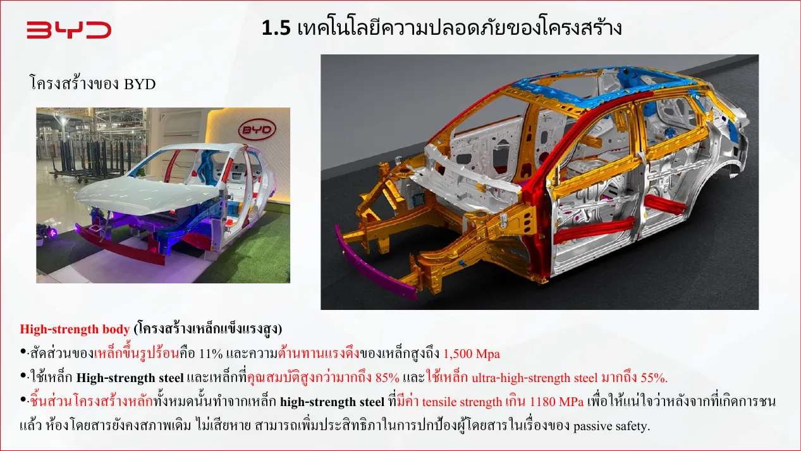
โครงสร้างตัวถังเหล็กแข็งแรงสูง — โซนยุบตัว (Crumple Zone) ดูดซับพลังงานที่หน้า/ท้ายรถ + คอกนิรภัย (Safety Cage) ปกป้องห้องโดยสาร ที่มา: BYD Training — Chassis System
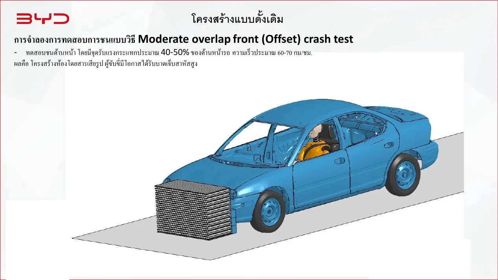
การจำลอง Moderate Overlap Front (Offset) Crash Test — ชนด้านหน้าจุดรับแรง 40–50% ของหน้ารถ ที่ความเร็ว 60–70 กม./ชม. โครงสร้าง BYD ทำให้ห้องโดยสารคงสภาพ ลดการบาดเจ็บเทียบกับโครงสร้างดั้งเดิม ที่มา: BYD Training — Chassis System
2 · การทดสอบระบบไฟฟ้าแรงสูง
ตรวจสอบความล้มเหลวของระบบ HV ผ่านเครื่องมือ VDS → BASU (Battery Execution And Sampling Unit) → Repair Mode → Active Control
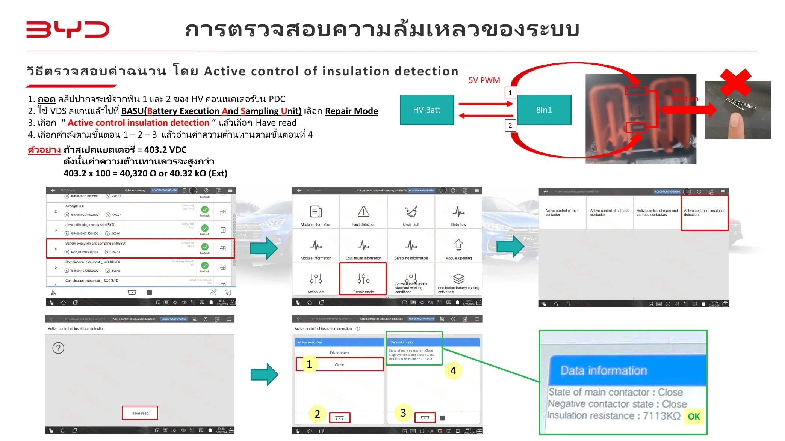
การทดสอบค่าฉนวน (Active Control of Insulation Detection) ผ่าน VDS — แสดงสถานะ Contactor และค่า Insulation Resistance จริง ที่มา: BYD Training — High Voltage Electrical System
การทดสอบ เกณฑ์ / วิธี ค่าฉนวน (ถอดสาย 8in1) วัดความต้านทานระหว่างขั้ว ± ต้อง ≥ 2 MΩ ค่าฉนวน (ระบบมีไฟ) ควร > แรงดันแบต × 100 Ω เช่น 403.2 VDC → ≥ 40,320 Ω (40.32 kΩ) · ค่าตัวอย่างที่วัดได้ 7,113 kΩ = ผ่าน คอนแทคเตอร์ไหม้ ใช้เมื่อเจอโค้ด "Connector Burn out" — สั่ง close/disconnect ทีละขั้ว ถ้ามีแรงดันค้าง = คอนแทคเตอร์ขั้วนั้นไหม้ แรงดันแบตเตอรี่ Active control Main/cathode contactor → ถ้าได้ 4XX ± 50 VDC ตามสเปก = แบตปกติ
3 · มาตรฐานทดสอบระยะทาง EV
ระยะทางที่โฆษณาขึ้นกับ "มาตรฐานการทดสอบ" — ตัวเลขจากแต่ละมาตรฐานเทียบกันตรงๆ ไม่ได้ (เช่น ATTO 3: NEDC 480 กม. → WLTP 417 กม.)
มาตรฐาน ที่มา ลักษณะ NEDC ยุโรป (1997) ทดสอบในเมือง+ชานเมือง ค่าสูงกว่าจริงพอควร — ยุโรปเลิกใช้แล้ว แต่หลายรุ่นในไทยยังอ้างอิง WLTP สากล มาแทน NEDC หลัง Dieselgate — วัฏจักรยาวกว่า รวมแอร์ ความเร็ว 47–132 กม./ชม. สมจริงกว่า CLTC จีน พัฒนาจาก NEDC ให้ตรงการใช้จริงในจีน มี 3 เฟส: ช้า · กลาง · เร็ว EPA สหรัฐฯ ทดสอบในแล็บ สลับวิ่งในเมือง (UDDS) + นอกเมือง (HWFET) จนแบตหมด — เข้มงวด ค่าใกล้จริงสุด
Workflow วินิจฉัยครบวงจร
End-to-End Diagnostic Workflow — ร้อยการสแกน → วินิจฉัย → แจ้งปัญหา เป็นเส้นเดียว
ทำไมต้องมีหัวข้อนี้?
คอร์ส BYD สอนเครื่องมือวินิจฉัยเป็น "ท่อนๆ" แยกกัน — deck ไฟฟ้าแรงสูงสอนใช้ VDS ทดสอบ PDC/BASU, deck TIS สอน DSM/DTC , deck Fault Feedback สอนการแชร์ข้อมูล — แต่ ไม่มีที่ไหนร้อยทั้งหมดเป็นเส้นเดียว หัวข้อนี้เติมรอยต่อนั้น: VDS คือเครื่องมือ ตัวเดียว ที่ใช้ตลอดทั้ง loop
1 · พบอาการ → สแกนด้วย VDS
รถมีอาการ/ไฟเตือน → ต่อ
VDS (Vehicle Diagnosis System) เข้า OBD II อ่านสถานะ ECU แต่ละกล่อง สำหรับระบบ HV สแกนผ่าน
BASU → Repair Mode → Active Control (ดู
การทดสอบทางวิศวกรรม และ
ระบบ HV )
2 · อ่าน DTC (หรือดูอาการ)
มีโค้ด → ใช้ DTC-Based Diagnosis · ไม่มีโค้ด → ใช้ Symptom-Based Diagnosis (วินิจฉัยจากอาการ) · ตรวจ Data Flow ของ ECU ที่เกี่ยว เช่น แรงดันแต่ละเซลล์จาก BASU
3 · เปิด TIS → ค้น DSM ตาม DTC
เข้า
BYD TIS → โมดูล
DSM ค้นคู่มือวินิจฉัยตาม DTC Fault Code · ใช้
WSM (ขั้นตอนซ่อม),
WD (วงจรไฟฟ้า),
EPC (อะไหล่) ประกอบ (ดู
BYD TIS System )
4 · ทำตาม 6-Step Diagnostic Workflow
รับข้อมูล → รันทดสอบ → รวบรวมเอกสาร (วงจร/หลักการ/Service Bulletin) → ตรวจสายไฟ/ข้อต่อ → ซ่อม/เปลี่ยน → ยืนยันทุกโหมดไม่มี error ใหม่
5 · จุดตัดสินใจ — แก้ได้ / แก้ไม่ได้
✅ แก้ได้ → ปิดงาน · เคลียร์ DTC ก่อนส่งมอบ | ❌ แก้ไม่ได้ → ไปขั้นที่ 6 (ส่งต่อทีมเทคนิค)
6 · Fault Feedback → Rever / BYD
แชร์ให้ทีมเทคนิคครบชุด: ข้อมูลพื้นฐาน (VIN/ODO/อาการ) + รูป/วิดีโอ +
VDS Report +
Data Flow +
CAN Data (เก็บจาก VDCI2 หรือ CANFD-200U) ยิ่งครบ ยิ่งวิเคราะห์/อนุมัติเคลมเร็ว (ดู
การแจ้งปัญหา )
หัวใจ: VDS คือเครื่องมือตัวเดียวตลอด loop
ตั้งแต่ขั้น 1 (สแกน HV) → ขั้น 2 (อ่าน DTC/Data flow) → ขั้น 6 (export VDS report + Data flow) ล้วนใช้ VDS ตัวเดียวกัน — เพียงเปลี่ยนโหมดการใช้งาน เข้าใจจุดนี้แล้วจะเห็นว่าการทดสอบ, การวินิจฉัย และการแจ้งปัญหา คือกระบวนการต่อเนื่องเส้นเดียว ไม่ใช่ 3 เรื่องแยกกัน
TIS เป็นแหล่งอ้างอิงกลางของขั้น 3–4 (DSM/WSM/WD/EPC) ที่มา: BYD Training — TIS
ขั้น 6 — กรอกแบบฟอร์มแจ้งปัญหาให้ครบทุกช่อง (Workshop name, Model, VIN, ODO, Date, Fault Description, How it happens, Dealer's inspections, ไฟล์แนบ) ดูแบบฟอร์มเต็มได้ที่หัวข้อ การแจ้งปัญหาทางเทคนิค · Fault Feedback
แหล่งอ้างอิง
References & Official Sources
ข้อมูลในคู่มือฉบับนี้เรียบเรียงจากเอกสารฝึกอบรมของ BYD และแหล่งข้อมูลทางการด้านล่าง ผู้อ่านสามารถคลิกเพื่อตรวจสอบข้อมูลต้นทางได้โดยตรง
Information in this manual is compiled from BYD training materials and the official sources below. Click any link to verify the original source.
เว็บไซต์ทางการ Official Websites
เอกสารต้นทาง Primary Documents
BYD Training — Company Introduction
เอกสารฝึกอบรมภายใน BYD — ประวัติบริษัท อุตสาหกรรม เทคโนโลยี และแบรนด์ในเครือ BYD internal training — company history, industries, technology & brands
BYD Training — Maintenance
คู่มือการบำรุงรักษา จุดยกรถ และขั้นตอนการบริการ Maintenance manual, jacking points & service procedures
BYD / Rêver — Fault Feedback
ขั้นตอนการแจ้งปัญหาและระบบ TIS สำหรับช่างเทคนิค Fault feedback workflow & TIS system for technicians
หมายเหตุ: คู่มือนี้จัดทำเพื่อการอบรมภายในของพนักงาน ข้อมูลสเปคและราคาอาจเปลี่ยนแปลงได้ กรุณายึดข้อมูลล่าสุดจากเว็บไซต์ทางการเป็นหลัก · ปรับปรุงข้อมูล มิถุนายน 2569
Note: This manual is for internal employee training. Specs and pricing may change — always refer to official websites for the latest information · Updated June 2026
 BYD
BYD Toyota
Toyota Mercedes-Benz
Mercedes-Benz Honda
Honda Tesla (STD Range)
Tesla (STD Range)